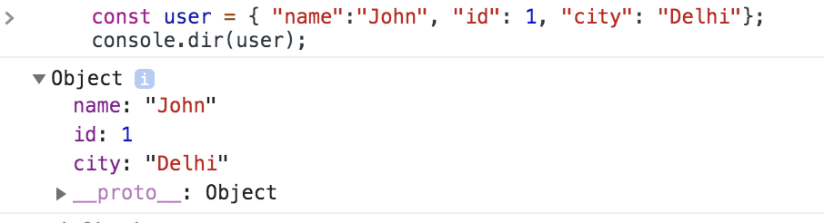
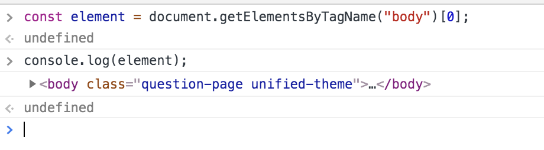
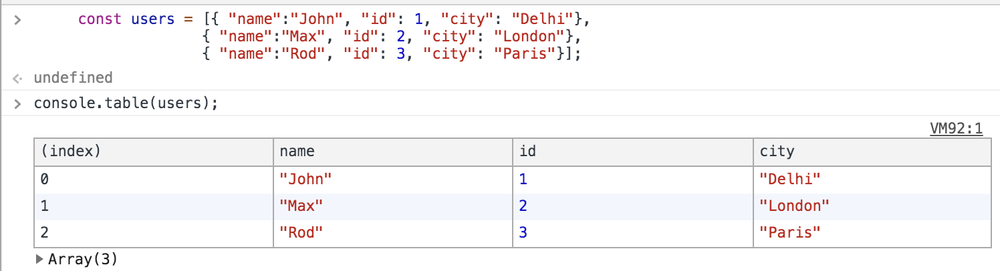

-
What are the possible ways to create objects in JavaScript
There are many ways to create objects in javascript as below
-
Object constructor:
The simplest way to create an empty object is using the Object constructor. Currently this approach is not recommended.
var object = new Object();The
var object = Object(); -
Object's create method:
The create method of Object creates a new object by passing the prototype object as a parameter
var object = Object.create(null); -
Object literal syntax:
The object literal syntax (or object initializer), is a comma-separated set of name-value pairs wrapped in curly braces.
var object = { name: "Sudheer", age: 34 };Object literal property values can be of any data type, including array, function, and nested object.
Note: This is an easiest way to create an object
-
Function constructor:
Create any function and apply the new operator to create object instances,
function Person(name) { this.name = name; this.age = 21; } var object = new Person("Sudheer"); -
Function constructor with prototype:
This is similar to function constructor but it uses prototype for their properties and methods,
function Person() {} Person.prototype.name = "Sudheer"; var object = new Person();This is equivalent to an instance created with an object create method with a function prototype and then call that function with an instance and parameters as arguments.
function func() {} new func(x, y, z);(OR)
// Create a new instance using function prototype. var newInstance = Object.create(func.prototype) // Call the function var result = func.call(newInstance, x, y, z), // If the result is a non-null object then use it otherwise just use the new instance. console.log(result && typeof result === 'object' ? result : newInstance); -
ES6 Class syntax:
ES6 introduces class feature to create the objects
class Person { constructor(name) { this.name = name; } } var object = new Person("Sudheer"); -
Singleton pattern:
A Singleton is an object which can only be instantiated one time. Repeated calls to its constructor return the same instance and this way one can ensure that they don't accidentally create multiple instances.
var object = new (function () { this.name = "Sudheer"; })();
-
-
What is a prototype chain
Prototype chaining is used to build new types of objects based on existing ones. It is similar to inheritance in a class based language.
The prototype on object instance is available through Object.getPrototypeOf(object) or __proto__ property whereas prototype on constructors function is available through Object.prototype.

-
What is the difference between Call, Apply and Bind
The difference between Call, Apply and Bind can be explained with below examples,
Call: The call() method invokes a function with a given
var employee1 = { firstName: "John", lastName: "Rodson" }; var employee2 = { firstName: "Jimmy", lastName: "Baily" }; function invite(greeting1, greeting2) { console.log( greeting1 + " " + this.firstName + " " + this.lastName + ", " + greeting2 ); } invite.call(employee1, "Hello", "How are you?"); // Hello John Rodson, How are you? invite.call(employee2, "Hello", "How are you?"); // Hello Jimmy Baily, How are you?Apply: Invokes the function with a given
var employee1 = { firstName: "John", lastName: "Rodson" }; var employee2 = { firstName: "Jimmy", lastName: "Baily" }; function invite(greeting1, greeting2) { console.log( greeting1 + " " + this.firstName + " " + this.lastName + ", " + greeting2 ); } invite.apply(employee1, ["Hello", "How are you?"]); // Hello John Rodson, How are you? invite.apply(employee2, ["Hello", "How are you?"]); // Hello Jimmy Baily, How are you?bind: returns a new function, allowing you to pass any number of arguments
var employee1 = { firstName: "John", lastName: "Rodson" }; var employee2 = { firstName: "Jimmy", lastName: "Baily" }; function invite(greeting1, greeting2) { console.log( greeting1 + " " + this.firstName + " " + this.lastName + ", " + greeting2 ); } var inviteEmployee1 = invite.bind(employee1); var inviteEmployee2 = invite.bind(employee2); inviteEmployee1("Hello", "How are you?"); // Hello John Rodson, How are you? inviteEmployee2("Hello", "How are you?"); // Hello Jimmy Baily, How are you?Call and apply are pretty interchangeable. Both execute the current function immediately. You need to decide whether it’s easier to send in an array or a comma separated list of arguments. You can remember by treating Call is for comma (separated list) and Apply is for Array.
Whereas Bind creates a new function that will have
-
What is JSON and its common operations
JSON is a text-based data format following JavaScript object syntax, which was popularized by
. It is useful when you want to transmit data across a network and it is basically just a text file with an extension of .json, and a MIME type of application/json Parsing: Converting a string to a native object
JSON.parse(text);Stringification: converting a native object to a string so it can be transmitted across the network
JSON.stringify(object); -
What is the purpose of the array slice method
The slice() method returns the selected elements in an array as a new array object. It selects the elements starting at the given start argument, and ends at the given optional end argument without including the last element. If you omit the second argument then it selects till the end.
Some of the examples of this method are,
let arrayIntegers = [1, 2, 3, 4, 5]; let arrayIntegers1 = arrayIntegers.slice(0, 2); // returns [1,2] let arrayIntegers2 = arrayIntegers.slice(2, 3); // returns [3] let arrayIntegers3 = arrayIntegers.slice(4); //returns [5]Note: Slice method won't mutate the original array but it returns the subset as a new array.
-
What is the purpose of the array splice method
The splice() method is used either adds/removes items to/from an array, and then returns the removed item. The first argument specifies the array position for insertion or deletion whereas the optional second argument indicates the number of elements to be deleted. Each additional argument is added to the array.
Some of the examples of this method are,
let arrayIntegersOriginal1 = [1, 2, 3, 4, 5]; let arrayIntegersOriginal2 = [1, 2, 3, 4, 5]; let arrayIntegersOriginal3 = [1, 2, 3, 4, 5]; let arrayIntegers1 = arrayIntegersOriginal1.splice(0, 2); // returns [1, 2]; original array: [3, 4, 5] let arrayIntegers2 = arrayIntegersOriginal2.splice(3); // returns [4, 5]; original array: [1, 2, 3] let arrayIntegers3 = arrayIntegersOriginal3.splice(3, 1, "a", "b", "c"); //returns [4]; original array: [1, 2, 3, "a", "b", "c", 5]Note: Splice method modifies the original array and returns the deleted array.
-
What is the difference between slice and splice
Some of the major difference in a tabular form
Slice Splice Doesn't modify the original array(immutable) Modifies the original array(mutable) Returns the subset of original array Returns the deleted elements as array Used to pick the elements from array Used to insert or delete elements to/from array -
How do you compare Object and Map
Objects are similar to Maps in that both let you set keys to values, retrieve those values, delete keys, and detect whether something is stored at a key. Due to this reason, Objects have been used as Maps historically. But there are important differences that make using a Map preferable in certain cases.
- The keys of an Object are Strings and Symbols, whereas they can be any value for a Map, including functions, objects, and any primitive.
- The keys in Map are ordered while keys added to Object are not. Thus, when iterating over it, a Map object returns keys in order of insertion.
- You can get the size of a Map easily with the size property, while the number of properties in an Object must be determined manually.
- A Map is an iterable and can thus be directly iterated, whereas iterating over an Object requires obtaining its keys in some fashion and iterating over them.
- An Object has a prototype, so there are default keys in the map that could collide with your keys if you're not careful. As of ES5 this can be bypassed by using map = Object.create(null), but this is seldom done.
- A Map may perform better in scenarios involving frequent addition and removal of key pairs.
-
What is the difference between == and === operators
JavaScript provides both strict(===, !==) and type-converting(==, !=) equality comparison. The strict operators take type of variable in consideration, while non-strict operators make type correction/conversion based upon values of variables. The strict operators follow the below conditions for different types,
- Two strings are strictly equal when they have the same sequence of characters, same length, and same characters in corresponding positions.
- Two numbers are strictly equal when they are numerically equal. i.e, Having the same number value. There are two special cases in this,
- NaN is not equal to anything, including NaN.
- Positive and negative zeros are equal to one another.
- Two Boolean operands are strictly equal if both are true or both are false.
- Two objects are strictly equal if they refer to the same Object.
- Null and Undefined types are not equal with ===, but equal with ==. i.e, null===undefined --> false but null==undefined --> true
Some of the example which covers the above cases,
0 == false // true 0 === false // false 1 == "1" // true 1 === "1" // false null == undefined // true null === undefined // false '0' == false // true '0' === false // false []==[] or []===[] //false, refer different objects in memory {}=={} or {}==={} //false, refer different objects in memory -
What are lambda or arrow functions
An arrow function is a shorter syntax for a function expression and does not have its own this, arguments, super, or new.target. These functions are best suited for non-method functions, and they cannot be used as constructors.
-
What is a first class function
In Javascript, functions are first class objects. First-class functions means when functions in that language are treated like any other variable.
For example, in such a language, a function can be passed as an argument to other functions, can be returned by another function and can be assigned as a value to a variable. For example, in the below example, handler functions assigned to a listener
const handler = () => console.log("This is a click handler function"); document.addEventListener("click", handler); -
What is a first order function
First-order function is a function that doesn’t accept another function as an argument and doesn’t return a function as its return value.
const firstOrder = () => console.log("I am a first order function!"); -
What is a higher order function
Higher-order function is a function that accepts another function as an argument or returns a function as a return value or both.
const firstOrderFunc = () => console.log("Hello, I am a First order function"); const higherOrder = (ReturnFirstOrderFunc) => ReturnFirstOrderFunc(); higherOrder(firstOrderFunc); -
What is a unary function
Unary function (i.e. monadic) is a function that accepts exactly one argument. It stands for a single argument accepted by a function.
Let us take an example of unary function,
const unaryFunction = (a) => console.log(a + 10); // Add 10 to the given argument and display the value -
What is the currying function
Currying is the process of taking a function with multiple arguments and turning it into a sequence of functions each with only a single argument. Currying is named after a mathematician Haskell Curry. By applying currying, a n-ary function turns it into a unary function.
Let's take an example of n-ary function and how it turns into a currying function,
const multiArgFunction = (a, b, c) => a + b + c; console.log(multiArgFunction(1, 2, 3)); // 6 const curryUnaryFunction = (a) => (b) => (c) => a + b + c; curryUnaryFunction(1); // returns a function: b => c => 1 + b + c curryUnaryFunction(1)(2); // returns a function: c => 3 + c curryUnaryFunction(1)(2)(3); // returns the number 6Curried functions are great to improve code reusability and functional composition.
-
What is a pure function
A Pure function is a function where the return value is only determined by its arguments without any side effects. i.e, If you call a function with the same arguments 'n' number of times and 'n' number of places in the application then it will always return the same value.
Let's take an example to see the difference between pure and impure functions,
//Impure let numberArray = []; const impureAddNumber = (number) => numberArray.push(number); //Pure const pureAddNumber = (number) => (argNumberArray) => argNumberArray.concat([number]); //Display the results console.log(impureAddNumber(6)); // returns 1 console.log(numberArray); // returns [6] console.log(pureAddNumber(7)(numberArray)); // returns [6, 7] console.log(numberArray); // returns [6]As per the above code snippets, the Push function is impure itself by altering the array and returning a push number index independent of the parameter value. . Whereas Concat on the other hand takes the array and concatenates it with the other array producing a whole new array without side effects. Also, the return value is a concatenation of the previous array.
Remember that Pure functions are important as they simplify unit testing without any side effects and no need for dependency injection. They also avoid tight coupling and make it harder to break your application by not having any side effects. These principles are coming together with Immutability concept of ES6 by giving preference to const over let usage.
-
What is the purpose of the let keyword
The
Let's take an example to demonstrate the usage,
let counter = 30; if (counter === 30) { let counter = 31; console.log(counter); // 31 } console.log(counter); // 30 (because the variable in if block won't exist here) -
What is the difference between let and var
You can list out the differences in a tabular format
var let It is been available from the beginning of JavaScript Introduced as part of ES6 It has function scope It has block scope Variables will be hoisted Hoisted but not initialized Let's take an example to see the difference,
function userDetails(username) { if (username) { console.log(salary); // undefined due to hoisting console.log(age); // ReferenceError: Cannot access 'age' before initialization let age = 30; var salary = 10000; } console.log(salary); //10000 (accessible due to function scope) console.log(age); //error: age is not defined(due to block scope) } userDetails("John"); -
What is the reason to choose the name let as a keyword
-
How do you redeclare variables in switch block without an error
If you try to redeclare variables in a
then it will cause errors because there is only one block. For example, the below code block throws a syntax error as below, let counter = 1; switch (x) { case 0: let name; break; case 1: let name; // SyntaxError for redeclaration. break; }To avoid this error, you can create a nested block inside a case clause and create a new block scoped lexical environment.
let counter = 1; switch (x) { case 0: { let name; break; } case 1: { let name; // No SyntaxError for redeclaration. break; } } -
What is the Temporal Dead Zone
The Temporal Dead Zone is a behavior in JavaScript that occurs when declaring a variable with the let and const keywords, but not with var. In ECMAScript 6, accessing a
Let's see this behavior with an example,
function somemethod() { console.log(counter1); // undefined console.log(counter2); // ReferenceError var counter1 = 1; let counter2 = 2; } -
What is IIFE(Immediately Invoked Function Expression)
IIFE (Immediately Invoked Function Expression) is a JavaScript function that runs as soon as it is defined. The signature of it would be as below,
(function () { // logic here })();The primary reason to use an IIFE is to obtain data privacy because any variables declared within the IIFE cannot be accessed by the outside world. i.e, If you try to access variables with IIFE then it throws an error as below,
(function () { var message = "IIFE"; console.log(message); })(); console.log(message); //Error: message is not defined -
How do you decode or encode a URL in JavaScript?
Note: If you want to encode characters such as
then you need to uselet uri = "employeeDetails?name=john&occupation=manager"; let encoded_uri = encodeURI(uri); let decoded_uri = decodeURI(encoded_uri); -
What is memoization
Memoization is a programming technique which attempts to increase a function’s performance by caching its previously computed results. Each time a memoized function is called, its parameters are used to index the cache. If the data is present, then it can be returned, without executing the entire function. Otherwise the function is executed and then the result is added to the cache. Let's take an example of adding function with memoization,
const memoizAddition = () => { let cache = {}; return (value) => { if (value in cache) { console.log("Fetching from cache"); return cache[value]; // Here, cache.value cannot be used as property name starts with the number which is not a valid JavaScript identifier. Hence, can only be accessed using the square bracket notation. } else { console.log("Calculating result"); let result = value + 20; cache[value] = result; return result; } }; }; // returned function from memoizAddition const addition = memoizAddition(); console.log(addition(20)); //output: 40 calculated console.log(addition(20)); //output: 40 cached -
What is Hoisting
Hoisting is a JavaScript mechanism where variables, function declarations and classes are moved to the top of their scope before code execution. Remember that JavaScript only hoists declarations, not initialisation. Let's take a simple example of variable hoisting,
console.log(message); //output : undefined var message = "The variable Has been hoisted";The above code looks like as below to the interpreter,
var message; console.log(message); message = "The variable Has been hoisted";In the same fashion, function declarations are hoisted too
message("Good morning"); //Good morning function message(name) { console.log(name); }This hoisting makes functions to be safely used in code before they are declared.
-
What are classes in ES6
In ES6, Javascript classes are primarily syntactic sugar over JavaScript’s existing prototype-based inheritance. For example, the prototype based inheritance written in function expression as below,
function Bike(model, color) { this.model = model; this.color = color; } Bike.prototype.getDetails = function () { return this.model + " bike has" + this.color + " color"; };Whereas ES6 classes can be defined as an alternative
class Bike { constructor(color, model) { this.color = color; this.model = model; } getDetails() { return this.model + " bike has" + this.color + " color"; } } -
What are closures
A closure is the combination of a function and the lexical environment within which that function was declared. i.e, It is an inner function that has access to the outer or enclosing function’s variables. The closure has three scope chains
- Own scope where variables defined between its curly brackets
- Outer function’s variables
- Global variables
Let's take an example of closure concept,
function Welcome(name) { var greetingInfo = function (message) { console.log(message + " " + name); }; return greetingInfo; } var myFunction = Welcome("John"); myFunction("Welcome "); //Output: Welcome John myFunction("Hello Mr."); //output: Hello Mr.JohnAs per the above code, the inner function(i.e, greetingInfo) has access to the variables in the outer function scope(i.e, Welcome) even after the outer function has returned.
-
What are modules
Modules refer to small units of independent, reusable code and also act as the foundation of many JavaScript design patterns. Most of the JavaScript modules export an object literal, a function, or a constructor
-
Why do you need modules
Below are the list of benefits using modules in javascript ecosystem
- Maintainability
- Reusability
- Namespacing
-
What is scope in javascript
Scope is the accessibility of variables, functions, and objects in some particular part of your code during runtime. In other words, scope determines the visibility of variables and other resources in areas of your code.
-
What is a service worker
A Service worker is basically a script (JavaScript file) that runs in the background, separate from a web page and provides features that don't need a web page or user interaction. Some of the major features of service workers are Rich offline experiences(offline first web application development), periodic background syncs, push notifications, intercept and handle network requests and programmatically managing a cache of responses.
-
How do you manipulate DOM using a service worker
Service worker can't access the DOM directly. But it can communicate with the pages it controls by responding to messages sent via the
-
How do you reuse information across service worker restarts
The problem with service worker is that it gets terminated when not in use, and restarted when it's next needed, so you cannot rely on global state within a service worker's
-
What is IndexedDB
IndexedDB is a low-level API for client-side storage of larger amounts of structured data, including files/blobs. This API uses indexes to enable high-performance searches of this data.
-
What is web storage
Web storage is an API that provides a mechanism by which browsers can store key/value pairs locally within the user's browser, in a much more intuitive fashion than using cookies. The web storage provides two mechanisms for storing data on the client.
- Local storage: It stores data for current origin with no expiration date.
- Session storage: It stores data for one session and the data is lost when the browser tab is closed.
-
What is a post message
Post message is a method that enables cross-origin communication between Window objects.(i.e, between a page and a pop-up that it spawned, or between a page and an iframe embedded within it). Generally, scripts on different pages are allowed to access each other if and only if the pages follow same-origin policy(i.e, pages share the same protocol, port number, and host).
-
What is a Cookie
A cookie is a piece of data that is stored on your computer to be accessed by your browser. Cookies are saved as key/value pairs. For example, you can create a cookie named username as below,
document.cookie = "username=John"; -
Why do you need a Cookie
Cookies are used to remember information about the user profile(such as username). It basically involves two steps,
- When a user visits a web page, the user profile can be stored in a cookie.
- Next time the user visits the page, the cookie remembers the user profile.
-
What are the options in a cookie
There are few below options available for a cookie,
- By default, the cookie is deleted when the browser is closed but you can change this behavior by setting expiry date (in UTC time).
document.cookie = "username=John; expires=Sat, 8 Jun 2019 12:00:00 UTC";- By default, the cookie belongs to a current page. But you can tell the browser what path the cookie belongs to using a path parameter.
document.cookie = "username=John; path=/services"; -
How do you delete a cookie
You can delete a cookie by setting the expiry date as a passed date. You don't need to specify a cookie value in this case. For example, you can delete a username cookie in the current page as below.
document.cookie = "username=; expires=Fri, 07 Jun 2019 00:00:00 UTC; path=/;";Note: You should define the cookie path option to ensure that you delete the right cookie. Some browsers doesn't allow to delete a cookie unless you specify a path parameter.
-
What are the differences between cookie, local storage and session storage
Below are some of the differences between cookie, local storage and session storage,
Feature Cookie Local storage Session storage Accessed on client or server side Both server-side & client-side client-side only client-side only Lifetime As configured using Expires option until deleted until tab is closed SSL support Supported Not supported Not supported Maximum data size 4KB 5 MB 5MB -
What is the main difference between localStorage and sessionStorage
LocalStorage is the same as SessionStorage but it persists the data even when the browser is closed and reopened(i.e it has no expiration time) whereas in sessionStorage data gets cleared when the page session ends.
-
How do you access web storage
The Window object implements the
localStorage.setItem("logo", document.getElementById("logo").value); localStorage.getItem("logo"); -
What are the methods available on session storage
The session storage provided methods for reading, writing and clearing the session data
// Save data to sessionStorage sessionStorage.setItem("key", "value"); // Get saved data from sessionStorage let data = sessionStorage.getItem("key"); // Remove saved data from sessionStorage sessionStorage.removeItem("key"); // Remove all saved data from sessionStorage sessionStorage.clear(); -
What is a storage event and its event handler
The StorageEvent is an event that fires when a storage area has been changed in the context of another document. Whereas onstorage property is an EventHandler for processing storage events. The syntax would be as below
window.onstorage = functionRef;Let's take the example usage of onstorage event handler which logs the storage key and it's values
window.onstorage = function (e) { console.log( "The " + e.key + " key has been changed from " + e.oldValue + " to " + e.newValue + "." ); }; -
Why do you need web storage
Web storage is more secure, and large amounts of data can be stored locally, without affecting website performance. Also, the information is never transferred to the server. Hence this is a more recommended approach than Cookies.
-
How do you check web storage browser support
You need to check browser support for localStorage and sessionStorage before using web storage,
if (typeof Storage !== "undefined") { // Code for localStorage/sessionStorage. } else { // Sorry! No Web Storage support.. } -
How do you check web workers browser support
You need to check browser support for web workers before using it
if (typeof Worker !== "undefined") { // code for Web worker support. } else { // Sorry! No Web Worker support.. } -
Give an example of a web worker
You need to follow below steps to start using web workers for counting example
- Create a Web Worker File: You need to write a script to increment the count value. Let's name it as counter.js
let i = 0; function timedCount() { i = i + 1; postMessage(i); setTimeout("timedCount()", 500); } timedCount();Here postMessage() method is used to post a message back to the HTML page
- Create a Web Worker Object: You can create a web worker object by checking for browser support. Let's name this file as web_worker_example.js
if (typeof w == "undefined") { w = new Worker("counter.js"); }and we can receive messages from web worker
w.onmessage = function (event) { document.getElementById("message").innerHTML = event.data; };- Terminate a Web Worker: Web workers will continue to listen for messages (even after the external script is finished) until it is terminated. You can use the terminate() method to terminate listening to the messages.
w.terminate();- Reuse the Web Worker: If you set the worker variable to undefined you can reuse the code
w = undefined; -
What are the restrictions of web workers on DOM
WebWorkers don't have access to below javascript objects since they are defined in an external files
- Window object
- Document object
- Parent object
-
What is a promise
A promise is an object that may produce a single value some time in the future with either a resolved value or a reason that it’s not resolved(for example, network error). It will be in one of the 3 possible states: fulfilled, rejected, or pending.
The syntax of Promise creation looks like below,
const promise = new Promise(function (resolve, reject) { // promise description });The usage of a promise would be as below,
const promise = new Promise( (resolve) => { setTimeout(() => { resolve("I'm a Promise!"); }, 5000); }, (reject) => {} ); promise.then((value) => console.log(value));The action flow of a promise will be as below,

-
Why do you need a promise
Promises are used to handle asynchronous operations. They provide an alternative approach for callbacks by reducing the callback hell and writing the cleaner code.
-
What are the three states of promise
Promises have three states:
- Pending: This is an initial state of the Promise before an operation begins
- Fulfilled: This state indicates that the specified operation was completed.
- Rejected: This state indicates that the operation did not complete. In this case an error value will be thrown.
-
What is a callback function
A callback function is a function passed into another function as an argument. This function is invoked inside the outer function to complete an action. Let's take a simple example of how to use callback function
function callbackFunction(name) { console.log("Hello " + name); } function outerFunction(callback) { let name = prompt("Please enter your name."); callback(name); } outerFunction(callbackFunction); -
Why do we need callbacks
The callbacks are needed because javascript is an event driven language. That means instead of waiting for a response javascript will keep executing while listening for other events. Let's take an example with the first function invoking an API call(simulated by setTimeout) and the next function which logs the message.
function firstFunction() { // Simulate a code delay setTimeout(function () { console.log("First function called"); }, 1000); } function secondFunction() { console.log("Second function called"); } firstFunction(); secondFunction(); Output; // Second function called // First function calledAs observed from the output, javascript didn't wait for the response of the first function and the remaining code block got executed. So callbacks are used in a way to make sure that certain code doesn’t execute until the other code finishes execution.
-
What is a callback hell
Callback Hell is an anti-pattern with multiple nested callbacks which makes code hard to read and debug when dealing with asynchronous logic. The callback hell looks like below,
async1(function(){ async2(function(){ async3(function(){ async4(function(){ .... }); }); }); }); -
What are server-sent events
Server-sent events (SSE) is a server push technology enabling a browser to receive automatic updates from a server via HTTP connection without resorting to polling. These are a one way communications channel - events flow from server to client only. This has been used in Facebook/Twitter updates, stock price updates, news feeds etc.
-
How do you receive server-sent event notifications
The EventSource object is used to receive server-sent event notifications. For example, you can receive messages from server as below,
if (typeof EventSource !== "undefined") { var source = new EventSource("sse_generator.js"); source.onmessage = function (event) { document.getElementById("output").innerHTML += event.data + "<br>"; }; } -
How do you check browser support for server-sent events
You can perform browser support for server-sent events before using it as below,
if (typeof EventSource !== "undefined") { // Server-sent events supported. Let's have some code here! } else { // No server-sent events supported } -
What are the events available for server sent events
Below are the list of events available for server sent events
Event Description onopen It is used when a connection to the server is opened onmessage This event is used when a message is received onerror It happens when an error occurs -
What are the main rules of promise
A promise must follow a specific set of rules:
- A promise is an object that supplies a standard-compliant
- A pending promise may transition into either fulfilled or rejected state
- A fulfilled or rejected promise is settled and it must not transition into any other state.
- Once a promise is settled, the value must not change.
- A promise is an object that supplies a standard-compliant
-
What is callback in callback
You can nest one callback inside in another callback to execute the actions sequentially one by one. This is known as callbacks in callbacks.
loadScript("/script1.js", function (script) { console.log("first script is loaded"); loadScript("/script2.js", function (script) { console.log("second script is loaded"); loadScript("/script3.js", function (script) { console.log("third script is loaded"); // after all scripts are loaded }); }); }); -
What is promise chaining
The process of executing a sequence of asynchronous tasks one after another using promises is known as Promise chaining. Let's take an example of promise chaining for calculating the final result,
new Promise(function (resolve, reject) { setTimeout(() => resolve(1), 1000); }).then(function (result) { console.log(result); // 1 return result * 2; }).then(function (result) { console.log(result); // 2 return result * 3; }).then(function (result) { console.log(result); // 6 return result * 4; });In the above handlers, the result is passed to the chain of .then() handlers with the below work flow,
- The initial promise resolves in 1 second,
- After that
- After that the value passed to the next
- Finally the value passed to the last
-
What is promise.all
Promise.all is a promise that takes an array of promises as an input (an iterable), and it gets resolved when all the promises get resolved or any one of them gets rejected. For example, the syntax of promise.all method is below,
Promise.all([Promise1, Promise2, Promise3]) .then(result => { console.log(result) }) .catch(error => console.log(`Error in promises ${error}`) )Note: Remember that the order of the promises(output the result) is maintained as per input order.
-
What is the purpose of the race method in promise
Promise.race() method will return the promise instance which is firstly resolved or rejected. Let's take an example of race() method where promise2 is resolved first
var promise1 = new Promise(function (resolve, reject) { setTimeout(resolve, 500, "one"); }); var promise2 = new Promise(function (resolve, reject) { setTimeout(resolve, 100, "two"); }); Promise.race([promise1, promise2]).then(function (value) { console.log(value); // "two" // Both promises will resolve, but promise2 is faster }); -
What is a strict mode in javascript
Strict Mode is a new feature in ECMAScript 5 that allows you to place a program, or a function, in a “strict” operating context. This way it prevents certain actions from being taken and throws more exceptions. The literal expression
-
Why do you need strict mode
Strict mode is useful to write "secure" JavaScript by notifying "bad syntax" into real errors. For example, it eliminates accidentally creating a global variable by throwing an error and also throws an error for assignment to a non-writable property, a getter-only property, a non-existing property, a non-existing variable, or a non-existing object.
-
How do you declare strict mode
The strict mode is declared by adding "use strict"; to the beginning of a script or a function. If declared at the beginning of a script, it has global scope.
"use strict"; x = 3.14; // This will cause an error because x is not declaredand if you declare inside a function, it has local scope
x = 3.14; // This will not cause an error. myFunction(); function myFunction() { "use strict"; y = 3.14; // This will cause an error } -
What is the purpose of double exclamation
The double exclamation or negation(!!) ensures the resulting type is a boolean. If it was falsey (e.g. 0, null, undefined, etc.), it will be false, otherwise, it will be true. For example, you can test IE version using this expression as below,
let isIE8 = false; isIE8 = !!navigator.userAgent.match(/MSIE 8.0/); console.log(isIE8); // returns true or falseIf you don't use this expression then it returns the original value.
console.log(navigator.userAgent.match(/MSIE 8.0/)); // returns either an Array or nullNote: The expression !! is not an operator, but it is just twice of ! operator.
-
What is the purpose of the delete operator
The delete keyword is used to delete the property as well as its value.
var user = { name: "John", age: 20 }; delete user.age; console.log(user); // {name: "John"} -
What is typeof operator
You can use the JavaScript typeof operator to find the type of a JavaScript variable. It returns the type of a variable or an expression.
typeof "John Abraham"; // Returns "string" typeof (1 + 2); // Returns "number" typeof [1, 2, 3]; // Returns "object" because all arrays are also objects -
What is undefined property
The undefined property indicates that a variable has not been assigned a value, or declared but not initialized at all. The type of undefined value is undefined too.
var user; // Value is undefined, type is undefined console.log(typeof user); //undefinedAny variable can be emptied by setting the value to undefined.
user = undefined; -
What is null value
The value null represents the intentional absence of any object value. It is one of JavaScript's primitive values. The type of null value is object. You can empty the variable by setting the value to null.
var user = null; console.log(typeof user); //object -
What is the difference between null and undefined
Below are the main differences between null and undefined,
Null Undefined It is an assignment value which indicates that variable points to no object. It is not an assignment value where a variable has been declared but has not yet been assigned a value. Type of null is object Type of undefined is undefined The null value is a primitive value that represents the null, empty, or non-existent reference. The undefined value is a primitive value used when a variable has not been assigned a value. Indicates the absence of a value for a variable Indicates absence of variable itself Converted to zero (0) while performing primitive operations Converted to NaN while performing primitive operations -
What is eval
The eval() function evaluates JavaScript code represented as a string. The string can be a JavaScript expression, variable, statement, or sequence of statements.
console.log(eval("1 + 2")); // 3 -
What is the difference between window and document
Below are the main differences between window and document,
Window Document It is the root level element in any web page It is the direct child of the window object. This is also known as Document Object Model(DOM) By default window object is available implicitly in the page You can access it via window.document or document. It has methods like alert(), confirm() and properties like document, location It provides methods like getElementById, getElementsByTagName, createElement etc -
How do you access history in javascript
The window.history object contains the browser's history. You can load previous and next URLs in the history using back() and next() methods.
function goBack() { window.history.back(); } function goForward() { window.history.forward(); }Note: You can also access history without window prefix.
-
How do you detect caps lock key turned on or not
The
is used to return a boolean value that indicates whether the specified modifier key is activated or not. The modifiers such as CapsLock, ScrollLock and NumLock are activated when they are clicked, and deactivated when they are clicked again. Let's take an input element to detect the CapsLock on/off behavior with an example,
<input type="password" onmousedown="enterInput(event)" /> <p id="feedback"></p> <script> function enterInput(e) { var flag = e.getModifierState("CapsLock"); if (flag) { document.getElementById("feedback").innerHTML = "CapsLock activated"; } else { document.getElementById("feedback").innerHTML = "CapsLock not activated"; } } </script> -
What is isNaN
The isNaN() function is used to determine whether a value is an illegal number (Not-a-Number) or not. i.e, This function returns true if the value equates to NaN. Otherwise it returns false.
isNaN("Hello"); //true isNaN("100"); //false -
What are the differences between undeclared and undefined variables
Below are the major differences between undeclared(not defined) and undefined variables,
undeclared undefined These variables do not exist in a program and are not declared These variables declared in the program but have not assigned any value If you try to read the value of an undeclared variable, then a runtime error is encountered If you try to read the value of an undefined variable, an undefined value is returned. -
What are global variables
Global variables are those that are available throughout the length of the code without any scope. The var keyword is used to declare a local variable but if you omit it then it will become global variable
msg = "Hello"; // var is missing, it becomes global variable -
What are the problems with global variables
The problem with global variables is the conflict of variable names of local and global scope. It is also difficult to debug and test the code that relies on global variables.
-
What is NaN property
The NaN property is a global property that represents "Not-a-Number" value. i.e, It indicates that a value is not a legal number. It is very rare to use NaN in a program but it can be used as return value for few cases
Math.sqrt(-1); parseInt("Hello"); -
What is the purpose of isFinite function
The isFinite() function is used to determine whether a number is a finite, legal number. It returns false if the value is +infinity, -infinity, or NaN (Not-a-Number), otherwise it returns true.
isFinite(Infinity); // false isFinite(NaN); // false isFinite(-Infinity); // false isFinite(100); // true -
What is an event flow
Event flow is the order in which event is received on the web page. When you click an element that is nested in various other elements, before your click actually reaches its destination, or target element, it must trigger the click event for each of its parent elements first, starting at the top with the global window object. There are two ways of event flow
- Top to Bottom(Event Capturing)
- Bottom to Top (Event Bubbling)
-
What is event bubbling
Event bubbling is a type of event propagation where the event first triggers on the innermost target element, and then successively triggers on the ancestors (parents) of the target element in the same nesting hierarchy till it reaches the outermost DOM element.
-
What is event capturing
Event capturing is a type of event propagation where the event is first captured by the outermost element, and then successively triggers on the descendants (children) of the target element in the same nesting hierarchy till it reaches the innermost DOM element.
-
How do you submit a form using JavaScript
You can submit a form using
function submit() { document.forms[0].submit(); } -
How do you find operating system details
The window.navigator object contains information about the visitor's browser OS details. Some of the OS properties are available under platform property,
console.log(navigator.platform); -
What is the difference between document load and DOMContentLoaded events
The
-
What is the difference between native, host and user objects
are objects that are part of the JavaScript language defined by the ECMAScript specification. For example, String, Math, RegExp, Object, Function etc core objects defined in the ECMAScript spec. are objects provided by the browser or runtime environment (Node). For example, window, XmlHttpRequest, DOM nodes etc are considered as host objects. are objects defined in the javascript code. For example, User objects created for profile information. -
What are the tools or techniques used for debugging JavaScript code
You can use below tools or techniques for debugging javascript
- Chrome Devtools
- debugger statement
- Good old console.log statement
-
What are the pros and cons of promises over callbacks
Below are the list of pros and cons of promises over callbacks,
Pros:
- It avoids callback hell which is unreadable
- Easy to write sequential asynchronous code with .then()
- Easy to write parallel asynchronous code with Promise.all()
- Solves some of the common problems of callbacks(call the callback too late, too early, many times and swallow errors/exceptions)
Cons:
- It makes little complex code
- You need to load a polyfill if ES6 is not supported
-
What is the difference between an attribute and a property
Attributes are defined on the HTML markup whereas properties are defined on the DOM. For example, the below HTML element has 2 attributes type and value,
<input type="text" value="Name:">You can retrieve the attribute value as below,
const input = document.querySelector("input"); console.log(input.getAttribute("value")); // Good morning console.log(input.value); // Good morningAnd after you change the value of the text field to "Good evening", it becomes like
console.log(input.getAttribute("value")); // Good evening console.log(input.value); // Good evening -
What is same-origin policy
The same-origin policy is a policy that prevents JavaScript from making requests across domain boundaries. An origin is defined as a combination of URI scheme, hostname, and port number. If you enable this policy then it prevents a malicious script on one page from obtaining access to sensitive data on another web page using Document Object Model(DOM).
-
What is the purpose of void 0
Void(0) is used to prevent the page from refreshing. This will be helpful to eliminate the unwanted side-effect, because it will return the undefined primitive value. It is commonly used for HTML documents that use href="JavaScript:Void(0);" within an
<a href="JavaScript:void(0);" onclick="alert('Well done!')">Click Me!</a> -
Is JavaScript a compiled or interpreted language
JavaScript is an interpreted language, not a compiled language. An interpreter in the browser reads over the JavaScript code, interprets each line, and runs it. Nowadays modern browsers use a technology known as Just-In-Time (JIT) compilation, which compiles JavaScript to executable bytecode just as it is about to run.
-
Is JavaScript a case-sensitive language
Yes, JavaScript is a case sensitive language. The language keywords, variables, function & object names, and any other identifiers must always be typed with a consistent capitalization of letters.
-
Is there any relation between Java and JavaScript
No, they are entirely two different programming languages and have nothing to do with each other. But both of them are Object Oriented Programming languages and like many other languages, they follow similar syntax for basic features(if, else, for, switch, break, continue etc).
-
What are events
Events are "things" that happen to HTML elements. When JavaScript is used in HTML pages, JavaScript can
- Web page has finished loading
- Input field was changed
- Button was clicked
Let's describe the behavior of click event for button element,
<!doctype html> <html> <head> <script> function greeting() { alert('Hello! Good morning'); } </script> </head> <body> <button type="button" onclick="greeting()">Click me</button> </body> </html> -
Who created javascript
JavaScript was created by Brendan Eich in 1995 during his time at Netscape Communications. Initially it was developed under the name
-
What is the use of preventDefault method
The preventDefault() method cancels the event if it is cancelable, meaning that the default action or behaviour that belongs to the event will not occur. For example, prevent form submission when clicking on submit button and prevent opening the page URL when clicking on hyperlink are some common use cases.
document.getElementById("link").addEventListener("click", function (event) { event.preventDefault(); });Note: Remember that not all events are cancelable.
-
What is the use of stopPropagation method
The stopPropagation method is used to stop the event from bubbling up the event chain. For example, the below nested divs with stopPropagation method prevents default event propagation when clicking on nested div(Div1)
<p>Click DIV1 Element</p> <div onclick="secondFunc()">DIV 2 <div onclick="firstFunc(event)">DIV 1</div> </div> <script> function firstFunc(event) { alert("DIV 1"); event.stopPropagation(); } function secondFunc() { alert("DIV 2"); } </script> -
What are the steps involved in return false usage
The return false statement in event handlers performs the below steps,
- First it stops the browser's default action or behaviour.
- It prevents the event from propagating the DOM
- Stops callback execution and returns immediately when called.
-
What is BOM
The Browser Object Model (BOM) allows JavaScript to "talk to" the browser. It consists of the objects navigator, history, screen, location and document which are children of the window. The Browser Object Model is not standardized and can change based on different browsers.

-
What is the use of setTimeout
The setTimeout() method is used to call a function or evaluate an expression after a specified number of milliseconds. For example, let's log a message after 2 seconds using setTimeout method,
setTimeout(function () { console.log("Good morning"); }, 2000); -
What is the use of setInterval
The setInterval() method is used to call a function or evaluate an expression at specified intervals (in milliseconds). For example, let's log a message after 2 seconds using setInterval method,
setInterval(function () { console.log("Good morning"); }, 2000); -
Why is JavaScript treated as Single threaded
JavaScript is a single-threaded language. Because the language specification does not allow the programmer to write code so that the interpreter can run parts of it in parallel in multiple threads or processes. Whereas languages like java, go, C++ can make multi-threaded and multi-process programs.
-
What is an event delegation
Event delegation is a technique for listening to events where you delegate a parent element as the listener for all of the events that happen inside it.
For example, if you wanted to detect field changes in inside a specific form, you can use event delegation technique,
var form = document.querySelector("#registration-form"); // Listen for changes to fields inside the form form.addEventListener( "input", function (event) { // Log the field that was changed console.log(event.target); }, false ); -
What is ECMAScript
ECMAScript is the scripting language that forms the basis of JavaScript. ECMAScript standardized by the ECMA International standards organization in the ECMA-262 and ECMA-402 specifications. The first edition of ECMAScript was released in 1997.
-
What is JSON
JSON (JavaScript Object Notation) is a lightweight format that is used for data interchanging. It is based on a subset of JavaScript language in the way objects are built in JavaScript.
-
What are the syntax rules of JSON
Below are the list of syntax rules of JSON
- The data is in name/value pairs
- The data is separated by commas
- Curly braces hold objects
- Square brackets hold arrays
-
What is the purpose JSON stringify
When sending data to a web server, the data has to be in a string format. You can achieve this by converting JSON object into a string using stringify() method.
var userJSON = { name: "John", age: 31 }; var userString = JSON.stringify(userJSON); console.log(userString); //"{"name":"John","age":31}" -
How do you parse JSON string
When receiving the data from a web server, the data is always in a string format. But you can convert this string value to a javascript object using parse() method.
var userString = '{"name":"John","age":31}'; var userJSON = JSON.parse(userString); console.log(userJSON); // {name: "John", age: 31} -
Why do you need JSON
When exchanging data between a browser and a server, the data can only be text. Since JSON is text only, it can easily be sent to and from a server, and used as a data format by any programming language.
-
What are PWAs
Progressive web applications (PWAs) are a type of mobile app delivered through the web, built using common web technologies including HTML, CSS and JavaScript. These PWAs are deployed to servers, accessible through URLs, and indexed by search engines.
-
What is the purpose of clearTimeout method
The clearTimeout() function is used in javascript to clear the timeout which has been set by setTimeout()function before that. i.e, The return value of setTimeout() function is stored in a variable and it’s passed into the clearTimeout() function to clear the timer.
For example, the below setTimeout method is used to display the message after 3 seconds. This timeout can be cleared by the clearTimeout() method.
<script> var msg; function greeting() { alert('Good morning'); } function start() { msg =setTimeout(greeting, 3000); } function stop() { clearTimeout(msg); } </script> -
What is the purpose of clearInterval method
The clearInterval() function is used in javascript to clear the interval which has been set by setInterval() function. i.e, The return value returned by setInterval() function is stored in a variable and it’s passed into the clearInterval() function to clear the interval.
For example, the below setInterval method is used to display the message for every 3 seconds. This interval can be cleared by the clearInterval() method.
<script> var msg; function greeting() { alert('Good morning'); } function start() { msg = setInterval(greeting, 3000); } function stop() { clearInterval(msg); } </script> -
How do you redirect new page in javascript
In vanilla javascript, you can redirect to a new page using the
function redirect() { window.location.href = "newPage.html"; } -
How do you check whether a string contains a substring
There are 3 possible ways to check whether a string contains a substring or not,
-
Using includes: ES6 provided
var mainString = "hello", subString = "hell"; mainString.includes(subString);-
Using indexOf: In an ES5 or older environment, you can use
var mainString = "hello", subString = "hell"; mainString.indexOf(subString) !== -1;-
Using RegEx: The advanced solution is using Regular expression's test method(
var mainString = "hello", regex = /hell/; regex.test(mainString); -
Using includes: ES6 provided
-
How do you validate an email in javascript
You can validate an email in javascript using regular expressions. It is recommended to do validations on the server side instead of the client side. Because the javascript can be disabled on the client side.
function validateEmail(email) { var re = /^(([^<>()\[\]\\.,;:\s@"]+(\.[^<>()\[\]\\.,;:\s@"]+)*)|(".+"))@((\[[0-9]{1,3}\.[0-9]{1,3}\.[0-9]{1,3}\.[0-9]{1,3}\])|(([a-zA-Z\-0-9]+\.)+[a-zA-Z]{2,}))$/; return re.test(String(email).toLowerCase()); }The above regular expression accepts unicode characters.
-
How do you get the current url with javascript
You can use
console.log("location.href", window.location.href); // Returns full URL -
What are the various url properties of location object
The below
- href - The entire URL
- protocol - The protocol of the URL
- host - The hostname and port of the URL
- hostname - The hostname of the URL
- port - The port number in the URL
- pathname - The path name of the URL
- search - The query portion of the URL
- hash - The anchor portion of the URL
-
How do get query string values in javascript
You can use URLSearchParams to get query string values in javascript. Let's see an example to get the client code value from URL query string,
const urlParams = new URLSearchParams(window.location.search); const clientCode = urlParams.get("clientCode"); -
How do you check if a key exists in an object
You can check whether a key exists in an object or not using three approaches,
- Using in operator: You can use the in operator whether a key exists in an object or not
"key" in obj;and If you want to check if a key doesn't exist, remember to use parenthesis,
!("key" in obj);-
Using hasOwnProperty method: You can use
obj.hasOwnProperty("key"); // true- Using undefined comparison: If you access a non-existing property from an object, the result is undefined. Let’s compare the properties against undefined to determine the existence of the property.
const user = { name: "John", }; console.log(user.name !== undefined); // true console.log(user.nickName !== undefined); // false -
How do you loop through or enumerate javascript object
You can use the
var object = { k1: "value1", k2: "value2", k3: "value3", }; for (var key in object) { if (object.hasOwnProperty(key)) { console.log(key + " -> " + object[key]); // k1 -> value1 ... } } -
How do you test for an empty object
There are different solutions based on ECMAScript versions
- Using Object entries(ECMA 7+): You can use object entries length along with constructor type.
Object.entries(obj).length === 0 && obj.constructor === Object; // Since date object length is 0, you need to check constructor check as well- Using Object keys(ECMA 5+): You can use object keys length along with constructor type.
Object.keys(obj).length === 0 && obj.constructor === Object; // Since date object length is 0, you need to check constructor check as well- Using for-in with hasOwnProperty(Pre-ECMA 5): You can use a for-in loop along with hasOwnProperty.
function isEmpty(obj) { for (var prop in obj) { if (obj.hasOwnProperty(prop)) { return false; } } return JSON.stringify(obj) === JSON.stringify({}); } -
What is an arguments object
The arguments object is an Array-like object accessible inside functions that contains the values of the arguments passed to that function. For example, let's see how to use arguments object inside sum function,
function sum() { var total = 0; for (var i = 0, len = arguments.length; i < len; ++i) { total += arguments[i]; } return total; } sum(1, 2, 3); // returns 6Note: You can't apply array methods on arguments object. But you can convert into a regular array as below.
var argsArray = Array.prototype.slice.call(arguments); -
How do you make first letter of the string in an uppercase
You can create a function which uses a chain of string methods such as charAt, toUpperCase and slice methods to generate a string with the first letter in uppercase.
function capitalizeFirstLetter(string) { return string.charAt(0).toUpperCase() + string.slice(1); } -
What are the pros and cons of for loop
The for-loop is a commonly used iteration syntax in javascript. It has both pros and cons
Pros
- Works on every environment
- You can use break and continue flow control statements
Cons
- Too verbose
- Imperative
- You might face one-by-off errors
-
How do you display the current date in javascript
You can use
to generate a new Date object containing the current date and time. For example, let's display the current date in mm/dd/yyyy var today = new Date(); var dd = String(today.getDate()).padStart(2, "0"); var mm = String(today.getMonth() + 1).padStart(2, "0"); //January is 0! var yyyy = today.getFullYear(); today = mm + "/" + dd + "/" + yyyy; document.write(today); -
How do you compare two date objects
You need to use date.getTime() method to compare date values instead of comparison operators (==, !=, ===, and !== operators)
var d1 = new Date(); var d2 = new Date(d1); console.log(d1.getTime() === d2.getTime()); //True console.log(d1 === d2); // False -
How do you check if a string starts with another string
You can use ECMAScript 6's
"Good morning".startsWith("Good"); // true "Good morning".startsWith("morning"); // false -
How do you trim a string in javascript
JavaScript provided a trim method on string types to trim any whitespaces present at the beginning or ending of the string.
" Hello World ".trim(); //Hello WorldIf your browser(<IE9) doesn't support this method then you can use below polyfill.
if (!String.prototype.trim) { (function () { // Make sure we trim BOM and NBSP var rtrim = /^[\s\uFEFF\xA0]+|[\s\uFEFF\xA0]+$/g; String.prototype.trim = function () { return this.replace(rtrim, ""); }; })(); } -
How do you add a key value pair in javascript
There are two possible solutions to add new properties to an object. Let's take a simple object to explain these solutions.
var object = { key1: value1, key2: value2, };- Using dot notation: This solution is useful when you know the name of the property
object.key3 = "value3";- Using square bracket notation: This solution is useful when the name of the property is dynamically determined.
obj["key3"] = "value3"; -
Is the !-- notation represents a special operator
No,that's not a special operator. But it is a combination of 2 standard operators one after the other,
- A logical not (!)
- A prefix decrement (--)
At first, the value decremented by one and then tested to see if it is equal to zero or not for determining the truthy/falsy value.
-
How do you assign default values to variables
You can use the logical or operator
var a = b || c;As per the above expression, variable 'a 'will get the value of 'c' only if 'b' is falsy (if is null, false, undefined, 0, empty string, or NaN), otherwise 'a' will get the value of 'b'.
-
How do you define multiline strings
You can define multiline string literals using the '\' character followed by line terminator.
var str = "This is a \ very lengthy \ sentence!";But if you have a space after the '\' character, the code will look exactly the same, but it will raise a SyntaxError.
-
What is an app shell model
An application shell (or app shell) architecture is one way to build a Progressive Web App that reliably and instantly loads on your users' screens, similar to what you see in native applications. It is useful for getting some initial HTML to the screen fast without a network.
-
Can we define properties for functions
Yes, We can define properties for functions because functions are also objects.
fn = function (x) { //Function code goes here }; fn.name = "John"; fn.profile = function (y) { //Profile code goes here }; -
What is the way to find the number of parameters expected by a function
You can use
function sum(num1, num2, num3, num4) { return num1 + num2 + num3 + num4; } sum.length; // 4 is the number of parameters expected. -
What is a polyfill
A polyfill is a piece of JS code used to provide modern functionality on older browsers that do not natively support it. For example, Silverlight plugin polyfill can be used to mimic the functionality of an HTML Canvas element on Microsoft Internet Explorer 7.
-
What are break and continue statements
The break statement is used to "jump out" of a loop. i.e, It breaks the loop and continues executing the code after the loop.
for (i = 0; i < 10; i++) { if (i === 5) { break; } text += "Number: " + i + "<br>"; }The continue statement is used to "jump over" one iteration in the loop. i.e, It breaks one iteration (in the loop), if a specified condition occurs, and continues with the next iteration in the loop.
for (i = 0; i < 10; i++) { if (i === 5) { continue; } text += "Number: " + i + "<br>"; } -
What are js labels
The label statement allows us to name loops and blocks in JavaScript. We can then use these labels to refer back to the code later. For example, the below code with labels avoids printing the numbers when they are same,
var i, j; loop1: for (i = 0; i < 3; i++) { loop2: for (j = 0; j < 3; j++) { if (i === j) { continue loop1; } console.log("i = " + i + ", j = " + j); } } // Output is: // "i = 1, j = 0" // "i = 2, j = 0" // "i = 2, j = 1" -
What are the benefits of keeping declarations at the top
It is recommended to keep all declarations at the top of each script or function. The benefits of doing this are,
- Gives cleaner code
- It provides a single place to look for local variables
- Easy to avoid unwanted global variables
- It reduces the possibility of unwanted re-declarations
-
What are the benefits of initializing variables
It is recommended to initialize variables because of the below benefits,
- It gives cleaner code
- It provides a single place to initialize variables
- Avoid undefined values in the code
-
What are the recommendations to create new object
It is recommended to avoid creating new objects using
. Instead you can initialize values based on it's type to create the objects. - Assign {} instead of new Object()
- Assign "" instead of new String()
- Assign 0 instead of new Number()
- Assign false instead of new Boolean()
- Assign [] instead of new Array()
- Assign /()/ instead of new RegExp()
- Assign function (){} instead of new Function()
You can define them as an example,
var v1 = {}; var v2 = ""; var v3 = 0; var v4 = false; var v5 = []; var v6 = /()/; var v7 = function () {}; -
How do you define JSON arrays
JSON arrays are written inside square brackets and arrays contain javascript objects. For example, the JSON array of users would be as below,
"users":[ {"firstName":"John", "lastName":"Abrahm"}, {"firstName":"Anna", "lastName":"Smith"}, {"firstName":"Shane", "lastName":"Warn"} ] -
How do you generate random integers
You can use Math.random() with Math.floor() to return random integers. For example, if you want generate random integers between 1 to 10, the multiplication factor should be 10,
Math.floor(Math.random() * 10) + 1; // returns a random integer from 1 to 10 Math.floor(Math.random() * 100) + 1; // returns a random integer from 1 to 100Note: Math.random() returns a random number between 0 (inclusive), and 1 (exclusive)
-
Can you write a random integers function to print integers with in a range
Yes, you can create a proper random function to return a random number between min and max (both included)
function randomInteger(min, max) { return Math.floor(Math.random() * (max - min + 1)) + min; } randomInteger(1, 100); // returns a random integer from 1 to 100 randomInteger(1, 1000); // returns a random integer from 1 to 1000 -
What is tree shaking
Tree shaking is a form of dead code elimination. It means that unused modules will not be included in the bundle during the build process and for that it relies on the static structure of ES2015 module syntax,( i.e. import and export). Initially this has been popularized by the ES2015 module bundler
-
What is the need of tree shaking
Tree Shaking can significantly reduce the code size in any application. i.e, The less code we send over the wire the more performant the application will be. For example, if we just want to create a “Hello World” Application using SPA frameworks then it will take around a few MBs, but by tree shaking it can bring down the size to just a few hundred KBs. Tree shaking is implemented in Rollup and Webpack bundlers.
-
Is it recommended to use eval
No, it allows arbitrary code to be run which causes a security problem. As we know that the eval() function is used to run text as code. In most of the cases, it should not be necessary to use it.
-
What is a Regular Expression
A regular expression is a sequence of characters that forms a search pattern. You can use this search pattern for searching data in a text. These can be used to perform all types of text search and text replace operations. Let's see the syntax format now,
/pattern/modifiers;For example, the regular expression or search pattern with case-insensitive username would be,
/John/i; -
What are the string methods available in Regular expression
Regular Expressions has two string methods: search() and replace(). The search() method uses an expression to search for a match, and returns the position of the match.
var msg = "Hello John"; var n = msg.search(/John/i); // 6The replace() method is used to return a modified string where the pattern is replaced.
var msg = "Hello John"; var n = msg.replace(/John/i, "Buttler"); // Hello Buttler -
What are modifiers in regular expression
Modifiers can be used to perform case-insensitive and global searches. Let's list down some of the modifiers,
Modifier Description i Perform case-insensitive matching g Perform a global match rather than stops at first match m Perform multiline matching Let's take an example of global modifier,
var text = "Learn JS one by one"; var pattern = /one/g; var result = text.match(pattern); // one,one -
What are regular expression patterns
Regular Expressions provide a group of patterns in order to match characters. Basically they are categorized into 3 types,
-
Brackets: These are used to find a range of characters. For example, below are some use cases,
- [abc]: Used to find any of the characters between the brackets(a,b,c)
- [0-9]: Used to find any of the digits between the brackets
- (a|b): Used to find any of the alternatives separated with |
-
Metacharacters: These are characters with a special meaning For example, below are some use cases,
- \d: Used to find a digit
- \s: Used to find a whitespace character
- \b: Used to find a match at the beginning or ending of a word
-
Quantifiers: These are useful to define quantities For example, below are some use cases,
- n+: Used to find matches for any string that contains at least one n
- n*: Used to find matches for any string that contains zero or more occurrences of n
- n?: Used to find matches for any string that contains zero or one occurrences of n
-
Brackets: These are used to find a range of characters. For example, below are some use cases,
-
What is a RegExp object
RegExp object is a regular expression object with predefined properties and methods. Let's see the simple usage of RegExp object,
var regexp = new RegExp("\\w+"); console.log(regexp); // expected output: /\w+/ -
How do you search a string for a pattern
You can use the test() method of regular expression in order to search a string for a pattern, and return true or false depending on the result.
var pattern = /you/; console.log(pattern.test("How are you?")); //true -
What is the purpose of exec method
The purpose of exec method is similar to test method but it executes a search for a match in a specified string and returns a result array, or null instead of returning true/false.
var pattern = /you/; console.log(pattern.exec("How are you?")); //["you", index: 8, input: "How are you?", groups: undefined] -
How do you change the style of a HTML element
You can change inline style or classname of a HTML element using javascript
- Using style property: You can modify inline style using style property
document.getElementById("title").style.fontSize = "30px";- Using ClassName property: It is easy to modify element class using className property
document.getElementById("title").className = "custom-title"; -
What would be the result of 1+2+'3'
The output is going to be
-
What is a debugger statement
The debugger statement invokes any available debugging functionality, such as setting a breakpoint. If no debugging functionality is available, this statement has no effect. For example, in the below function a debugger statement has been inserted. So execution is paused at the debugger statement just like a breakpoint in the script source.
function getProfile() { // code goes here debugger; // code goes here } -
What is the purpose of breakpoints in debugging
You can set breakpoints in the javascript code once the debugger statement is executed and the debugger window pops up. At each breakpoint, javascript will stop executing, and let you examine the JavaScript values. After examining values, you can resume the execution of code using the play button.
-
Can I use reserved words as identifiers
No, you cannot use the reserved words as variables, labels, object or function names. Let's see one simple example,
var else = "hello"; // Uncaught SyntaxError: Unexpected token else -
How do you detect a mobile browser
You can use regex which returns a true or false value depending on whether or not the user is browsing with a mobile.
window.mobilecheck = function () { var mobileCheck = false; (function (a) { if ( /(android|bb\d+|meego).+mobile|avantgo|bada\/|blackberry|blazer|compal|elaine|fennec|hiptop|iemobile|ip(hone|od)|iris|kindle|lge |maemo|midp|mmp|mobile.+firefox|netfront|opera m(ob|in)i|palm( os)?|phone|p(ixi|re)\/|plucker|pocket|psp|series(4|6)0|symbian|treo|up\.(browser|link)|vodafone|wap|windows ce|xda|xiino/i.test( a ) || /1207|6310|6590|3gso|4thp|50[1-6]i|770s|802s|a wa|abac|ac(er|oo|s\-)|ai(ko|rn)|al(av|ca|co)|amoi|an(ex|ny|yw)|aptu|ar(ch|go)|as(te|us)|attw|au(di|\-m|r |s )|avan|be(ck|ll|nq)|bi(lb|rd)|bl(ac|az)|br(e|v)w|bumb|bw\-(n|u)|c55\/|capi|ccwa|cdm\-|cell|chtm|cldc|cmd\-|co(mp|nd)|craw|da(it|ll|ng)|dbte|dc\-s|devi|dica|dmob|do(c|p)o|ds(12|\-d)|el(49|ai)|em(l2|ul)|er(ic|k0)|esl8|ez([4-7]0|os|wa|ze)|fetc|fly(\-|_)|g1 u|g560|gene|gf\-5|g\-mo|go(\.w|od)|gr(ad|un)|haie|hcit|hd\-(m|p|t)|hei\-|hi(pt|ta)|hp( i|ip)|hs\-c|ht(c(\-| |_|a|g|p|s|t)|tp)|hu(aw|tc)|i\-(20|go|ma)|i230|iac( |\-|\/)|ibro|idea|ig01|ikom|im1k|inno|ipaq|iris|ja(t|v)a|jbro|jemu|jigs|kddi|keji|kgt( |\/)|klon|kpt |kwc\-|kyo(c|k)|le(no|xi)|lg( g|\/(k|l|u)|50|54|\-[a-w])|libw|lynx|m1\-w|m3ga|m50\/|ma(te|ui|xo)|mc(01|21|ca)|m\-cr|me(rc|ri)|mi(o8|oa|ts)|mmef|mo(01|02|bi|de|do|t(\-| |o|v)|zz)|mt(50|p1|v )|mwbp|mywa|n10[0-2]|n20[2-3]|n30(0|2)|n50(0|2|5)|n7(0(0|1)|10)|ne((c|m)\-|on|tf|wf|wg|wt)|nok(6|i)|nzph|o2im|op(ti|wv)|oran|owg1|p800|pan(a|d|t)|pdxg|pg(13|\-([1-8]|c))|phil|pire|pl(ay|uc)|pn\-2|po(ck|rt|se)|prox|psio|pt\-g|qa\-a|qc(07|12|21|32|60|\-[2-7]|i\-)|qtek|r380|r600|raks|rim9|ro(ve|zo)|s55\/|sa(ge|ma|mm|ms|ny|va)|sc(01|h\-|oo|p\-)|sdk\/|se(c(\-|0|1)|47|mc|nd|ri)|sgh\-|shar|sie(\-|m)|sk\-0|sl(45|id)|sm(al|ar|b3|it|t5)|so(ft|ny)|sp(01|h\-|v\-|v )|sy(01|mb)|t2(18|50)|t6(00|10|18)|ta(gt|lk)|tcl\-|tdg\-|tel(i|m)|tim\-|t\-mo|to(pl|sh)|ts(70|m\-|m3|m5)|tx\-9|up(\.b|g1|si)|utst|v400|v750|veri|vi(rg|te)|vk(40|5[0-3]|\-v)|vm40|voda|vulc|vx(52|53|60|61|70|80|81|83|85|98)|w3c(\-| )|webc|whit|wi(g |nc|nw)|wmlb|wonu|x700|yas\-|your|zeto|zte\-/i.test( a.substr(0, 4) ) ) mobileCheck = true; })(navigator.userAgent || navigator.vendor || window.opera); return mobileCheck; }; -
How do you detect a mobile browser without regexp
You can detect mobile browsers by simply running through a list of devices and checking if the useragent matches anything. This is an alternative solution for RegExp usage,
function detectmob() { if ( navigator.userAgent.match(/Android/i) || navigator.userAgent.match(/webOS/i) || navigator.userAgent.match(/iPhone/i) || navigator.userAgent.match(/iPad/i) || navigator.userAgent.match(/iPod/i) || navigator.userAgent.match(/BlackBerry/i) || navigator.userAgent.match(/Windows Phone/i) ) { return true; } else { return false; } } -
How do you get the image width and height using JS
You can programmatically get the image and check the dimensions(width and height) using Javascript.
var img = new Image(); img.onload = function () { console.log(this.width + "x" + this.height); }; img.src = "http://www.google.com/intl/en_ALL/images/logo.gif"; -
How do you make synchronous HTTP request
Browsers provide an XMLHttpRequest object which can be used to make synchronous HTTP requests from JavaScript
function httpGet(theUrl) { var xmlHttpReq = new XMLHttpRequest(); xmlHttpReq.open("GET", theUrl, false); // false for synchronous request xmlHttpReq.send(null); return xmlHttpReq.responseText; } -
How do you make asynchronous HTTP request
Browsers provide an XMLHttpRequest object which can be used to make asynchronous HTTP requests from JavaScript by passing the 3rd parameter as true.
function httpGetAsync(theUrl, callback) { var xmlHttpReq = new XMLHttpRequest(); xmlHttpReq.onreadystatechange = function () { if (xmlHttpReq.readyState == 4 && xmlHttpReq.status == 200) callback(xmlHttpReq.responseText); }; xmlHttp.open("GET", theUrl, true); // true for asynchronous xmlHttp.send(null); } -
How do you convert date to another timezone in javascript
You can use the toLocaleString() method to convert dates in one timezone to another. For example, let's convert current date to British English timezone as below,
console.log(event.toLocaleString("en-GB", { timeZone: "UTC" })); //29/06/2019, 09:56:00 -
What are the properties used to get size of window
You can use innerWidth, innerHeight, clientWidth, clientHeight properties of windows, document element and document body objects to find the size of a window. Let's use them combination of these properties to calculate the size of a window or document,
var width = window.innerWidth || document.documentElement.clientWidth || document.body.clientWidth; var height = window.innerHeight || document.documentElement.clientHeight || document.body.clientHeight; -
What is a conditional operator in javascript
The conditional (ternary) operator is the only JavaScript operator that takes three operands which acts as a shortcut for if statements.
var isAuthenticated = false; console.log( isAuthenticated ? "Hello, welcome" : "Sorry, you are not authenticated" ); //Sorry, you are not authenticated -
Can you apply chaining on conditional operator
Yes, you can apply chaining on conditional operators similar to if … else if … else if … else chain. The syntax is going to be as below,
function traceValue(someParam) { return condition1 ? value1 : condition2 ? value2 : condition3 ? value3 : value4; } // The above conditional operator is equivalent to: function traceValue(someParam) { if (condition1) { return value1; } else if (condition2) { return value2; } else if (condition3) { return value3; } else { return value4; } } -
What are the ways to execute javascript after page load
You can execute javascript after page load in many different ways,
- window.onload:
window.onload = function ...- document.onload:
document.onload = function ...- body onload:
<body onload="script();"> -
What is the difference between proto and prototype
The
new Employee().__proto__ === Employee.prototype; new Employee().prototype === undefined;There are few more differences,
feature Prototype proto Access All the function constructors have prototype properties. All the objects have __proto__ property Purpose Used to reduce memory wastage with a single copy of function Used in lookup chain to resolve methods, constructors etc. ECMAScript Introduced in ES6 Introduced in ES5 Usage Frequently used Rarely used -
Give an example where do you really need semicolon
It is recommended to use semicolons after every statement in JavaScript. For example, in the below case it throws an error ".. is not a function" at runtime due to missing semicolon.
// define a function var fn = (function () { //... })( // semicolon missing at this line // then execute some code inside a closure function () { //... } )();and it will be interpreted as
var fn = (function () { //... })(function () { //... })();In this case, we are passing the second function as an argument to the first function and then trying to call the result of the first function call as a function. Hence, the second function will fail with a "... is not a function" error at runtime.
-
What is a freeze method
The freeze() method is used to freeze an object. Freezing an object does not allow adding new properties to an object,prevents from removing and prevents changing the enumerability, configurability, or writability of existing properties. i.e, It returns the passed object and does not create a frozen copy.
const obj = { prop: 100, }; Object.freeze(obj); obj.prop = 200; // Throws an error in strict mode console.log(obj.prop); //100Remember freezing is only applied to the top-level properties in objects but not for nested objects. For example, let's try to freeze user object which has employment details as nested object and observe that details have been changed.
const user = { name: "John", employment: { department: "IT", }, }; Object.freeze(user); user.employment.department = "HR";Note: It causes a TypeError if the argument passed is not an object.
-
What is the purpose of freeze method
Below are the main benefits of using freeze method,
- It is used for freezing objects and arrays.
- It is used to make an object immutable.
-
Why do I need to use freeze method
In the Object-oriented paradigm, an existing API contains certain elements that are not intended to be extended, modified, or re-used outside of their current context. Hence it works as the
-
How do you detect a browser language preference
You can use navigator object to detect a browser language preference as below,
var language = (navigator.languages && navigator.languages[0]) || // Chrome / Firefox navigator.language || // All browsers navigator.userLanguage; // IE <= 10 console.log(language); -
How to convert string to title case with javascript
Title case means that the first letter of each word is capitalized. You can convert a string to title case using the below function,
function toTitleCase(str) { return str.replace(/\w\S*/g, function (txt) { return txt.charAt(0).toUpperCase() + txt.substring(1).toLowerCase(); }); } toTitleCase("good morning john"); // Good Morning John -
How do you detect javascript disabled in the page
You can use the
<script type="javascript"> // JS related code goes here </script> <noscript> <a href="next_page.html?noJS=true">JavaScript is disabled in the page. Please click Next Page</a> </noscript> -
What are various operators supported by javascript
An operator is capable of manipulating(mathematical and logical computations) a certain value or operand. There are various operators supported by JavaScript as below,
- Arithmetic Operators: Includes + (Addition),– (Subtraction), * (Multiplication), / (Division), % (Modulus), + + (Increment) and – – (Decrement)
- Comparison Operators: Includes = =(Equal),!= (Not Equal), ===(Equal with type), > (Greater than),> = (Greater than or Equal to),< (Less than),<= (Less than or Equal to)
- Logical Operators: Includes &&(Logical AND),||(Logical OR),!(Logical NOT)
- Assignment Operators: Includes = (Assignment Operator), += (Add and Assignment Operator), – = (Subtract and Assignment Operator), *= (Multiply and Assignment), /= (Divide and Assignment), %= (Modules and Assignment)
- Ternary Operators: It includes conditional(: ?) Operator
-
typeof Operator: It uses to find type of variable. The syntax looks like
-
What is a rest parameter
Rest parameter is an improved way to handle function parameters which allows us to represent an indefinite number of arguments as an array. The syntax would be as below,
function f(a, b, ...theArgs) { // ... }For example, let's take a sum example to calculate on dynamic number of parameters,
function sum(...args) { let total = 0; for (const i of args) { total += i; } return total; } console.log(sum(1, 2)); //3 console.log(sum(1, 2, 3)); //6 console.log(sum(1, 2, 3, 4)); //13 console.log(sum(1, 2, 3, 4, 5)); //15Note: Rest parameter is added in ES2015 or ES6
-
What happens if you do not use rest parameter as a last argument
The rest parameter should be the last argument, as its job is to collect all the remaining arguments into an array. For example, if you define a function like below it doesn’t make any sense and will throw an error.
function someFunc(a,…b,c){ //You code goes here return; } -
What are the bitwise operators available in javascript
Below are the list of bitwise logical operators used in JavaScript
- Bitwise AND ( & )
- Bitwise OR ( | )
- Bitwise XOR ( ^ )
- Bitwise NOT ( ~ )
- Left Shift ( << )
- Sign Propagating Right Shift ( >> )
- Zero fill Right Shift ( >>> )
-
What is a spread operator
Spread operator allows iterables( arrays / objects / strings ) to be expanded into single arguments/elements. Let's take an example to see this behavior,
function calculateSum(x, y, z) { return x + y + z; } const numbers = [1, 2, 3]; console.log(calculateSum(...numbers)); // 6 -
How do you determine whether object is frozen or not
Object.isFrozen() method is used to determine if an object is frozen or not.An object is frozen if all of the below conditions hold true,
- If it is not extensible.
- If all of its properties are non-configurable.
- If all its data properties are non-writable. The usage is going to be as follows,
const object = { property: "Welcome JS world", }; Object.freeze(object); console.log(Object.isFrozen(object)); -
How do you determine two values same or not using object
The Object.is() method determines whether two values are the same value. For example, the usage with different types of values would be,
Object.is("hello", "hello"); // true Object.is(window, window); // true Object.is([], []); // falseTwo values are the same if one of the following holds:
- both undefined
- both null
- both true or both false
- both strings of the same length with the same characters in the same order
- both the same object (means both object have same reference)
- both numbers and both +0 both -0 both NaN both non-zero and both not NaN and both have the same value.
-
What is the purpose of using object is method
Some of the applications of Object's
- It is used for comparison of two strings.
- It is used for comparison of two numbers.
- It is used for comparing the polarity of two numbers.
- It is used for comparison of two objects.
-
How do you copy properties from one object to other
You can use the Object.assign() method which is used to copy the values and properties from one or more source objects to a target object. It returns the target object which has properties and values copied from the source objects. The syntax would be as below,
Object.assign(target, ...sources);Let's take example with one source and one target object,
const target = { a: 1, b: 2 }; const source = { b: 3, c: 4 }; const returnedTarget = Object.assign(target, source); console.log(target); // { a: 1, b: 3, c: 4 } console.log(returnedTarget); // { a: 1, b: 3, c: 4 }As observed in the above code, there is a common property(
-
What are the applications of assign method
Below are the some of main applications of Object.assign() method,
- It is used for cloning an object.
- It is used to merge objects with the same properties.
-
What is a proxy object
The Proxy object is used to define custom behavior for fundamental operations such as property lookup, assignment, enumeration, function invocation, etc. The syntax would be as follows,
var p = new Proxy(target, handler);Let's take an example of proxy object,
var handler = { get: function (obj, prop) { return prop in obj ? obj[prop] : 100; }, }; var p = new Proxy({}, handler); p.a = 10; p.b = null; console.log(p.a, p.b); // 10, null console.log("c" in p, p.c); // false, 100In the above code, it uses
-
What is the purpose of seal method
The Object.seal() method is used to seal an object, by preventing new properties from being added to it and marking all existing properties as non-configurable. But values of present properties can still be changed as long as they are writable. Let's see the below example to understand more about seal() method
const object = { property: "Welcome JS world", }; Object.seal(object); object.property = "Welcome to object world"; console.log(Object.isSealed(object)); // true delete object.property; // You cannot delete when sealed console.log(object.property); //Welcome to object world -
What are the applications of seal method
Below are the main applications of Object.seal() method,
- It is used for sealing objects and arrays.
- It is used to make an object immutable.
-
What are the differences between freeze and seal methods
If an object is frozen using the Object.freeze() method then its properties become immutable and no changes can be made in them whereas if an object is sealed using the Object.seal() method then the changes can be made in the existing properties of the object.
-
How do you determine if an object is sealed or not
The Object.isSealed() method is used to determine if an object is sealed or not. An object is sealed if all of the below conditions hold true
- If it is not extensible.
- If all of its properties are non-configurable.
- If it is not removable (but not necessarily non-writable). Let's see it in the action
const object = { property: "Hello, Good morning", }; Object.seal(object); // Using seal() method to seal the object console.log(Object.isSealed(object)); // checking whether the object is sealed or not -
How do you get enumerable key and value pairs
The Object.entries() method is used to return an array of a given object's own enumerable string-keyed property [key, value] pairs, in the same order as that provided by a for...in loop. Let's see the functionality of object.entries() method in an example,
const object = { a: "Good morning", b: 100, }; for (let [key, value] of Object.entries(object)) { console.log(`${key}: ${value}`); // a: 'Good morning' // b: 100 }Note: The order is not guaranteed as object defined.
-
What is the main difference between Object.values and Object.entries method
The Object.values() method's behavior is similar to Object.entries() method but it returns an array of values instead [key,value] pairs.
const object = { a: "Good morning", b: 100, }; for (let value of Object.values(object)) { console.log(`${value}`); // 'Good morning' 100; } -
How can you get the list of keys of any object
You can use the
const user = { name: "John", gender: "male", age: 40, }; console.log(Object.keys(user)); //['name', 'gender', 'age'] -
How do you create an object with prototype
The Object.create() method is used to create a new object with the specified prototype object and properties. i.e, It uses an existing object as the prototype of the newly created object. It returns a new object with the specified prototype object and properties.
const user = { name: "John", printInfo: function () { console.log(`My name is ${this.name}.`); }, }; const admin = Object.create(user); admin.name = "Nick"; // Remember that "name" is a property set on "admin" but not on "user" object admin.printInfo(); // My name is Nick -
What is a WeakSet
WeakSet is used to store a collection of weakly(weak references) held objects. The syntax would be as follows,
new WeakSet([iterable]);Let's see the below example to explain it's behavior,
var ws = new WeakSet(); var user = {}; ws.add(user); ws.has(user); // true ws.delete(user); // removes user from the set ws.has(user); // false, user has been removed -
What are the differences between WeakSet and Set
The main difference is that references to objects in Set are strong while references to objects in WeakSet are weak. i.e, An object in WeakSet can be garbage collected if there is no other reference to it. Other differences are,
- Sets can store any value Whereas WeakSets can store only collections of objects
- WeakSet does not have size property unlike Set
- WeakSet does not have methods such as clear, keys, values, entries, forEach.
- WeakSet is not iterable.
-
List down the collection of methods available on WeakSet
Below are the list of methods available on WeakSet,
- add(value): A new object is appended with the given value to the weakset
- delete(value): Deletes the value from the WeakSet collection.
- has(value): It returns true if the value is present in the WeakSet Collection, otherwise it returns false.
Let's see the functionality of all the above methods in an example,
var weakSetObject = new WeakSet(); var firstObject = {}; var secondObject = {}; // add(value) weakSetObject.add(firstObject); weakSetObject.add(secondObject); console.log(weakSetObject.has(firstObject)); //true weakSetObject.delete(secondObject); -
What is a WeakMap
The WeakMap object is a collection of key/value pairs in which the keys are weakly referenced. In this case, keys must be objects and the values can be arbitrary values. The syntax is looking like as below,
new WeakMap([iterable]);Let's see the below example to explain it's behavior,
var ws = new WeakMap(); var user = {}; ws.set(user); ws.has(user); // true ws.delete(user); // removes user from the map ws.has(user); // false, user has been removed -
What are the differences between WeakMap and Map
The main difference is that references to key objects in Map are strong while references to key objects in WeakMap are weak. i.e, A key object in WeakMap can be garbage collected if there is no other reference to it. Other differences are,
- Maps can store any key type Whereas WeakMaps can store only collections of key objects
- WeakMap does not have size property unlike Map
- WeakMap does not have methods such as clear, keys, values, entries, forEach.
- WeakMap is not iterable.
-
List down the collection of methods available on WeakMap
Below are the list of methods available on WeakMap,
- set(key, value): Sets the value for the key in the WeakMap object. Returns the WeakMap object.
- delete(key): Removes any value associated to the key.
- has(key): Returns a Boolean asserting whether a value has been associated to the key in the WeakMap object or not.
- get(key): Returns the value associated to the key, or undefined if there is none. Let's see the functionality of all the above methods in an example,
var weakMapObject = new WeakMap(); var firstObject = {}; var secondObject = {}; // set(key, value) weakMapObject.set(firstObject, "John"); weakMapObject.set(secondObject, 100); console.log(weakMapObject.has(firstObject)); //true console.log(weakMapObject.get(firstObject)); // John weakMapObject.delete(secondObject); -
What is the purpose of uneval
The uneval() is an inbuilt function which is used to create a string representation of the source code of an Object. It is a top-level function and is not associated with any object. Let's see the below example to know more about it's functionality,
var a = 1; uneval(a); // returns a String containing 1 uneval(function user() {}); // returns "(function user(){})"The
function user() {} console.log(user.toString()); // returns "(function user(){})" -
How do you encode an URL
The encodeURI() function is used to encode complete URI which has special characters except (, / ? : @ & = + $ #) characters.
var uri = "https://mozilla.org/?x=шеллы"; var encoded = encodeURI(uri); console.log(encoded); // https://mozilla.org/?x=%D1%88%D0%B5%D0%BB%D0%BB%D1%8B -
How do you decode an URL
The decodeURI() function is used to decode a Uniform Resource Identifier (URI) previously created by encodeURI().
var uri = "https://mozilla.org/?x=шеллы"; var encoded = encodeURI(uri); console.log(encoded); // https://mozilla.org/?x=%D1%88%D0%B5%D0%BB%D0%BB%D1%8B try { console.log(decodeURI(encoded)); // "https://mozilla.org/?x=шеллы" } catch (e) { // catches a malformed URI console.error(e); } -
How do you print the contents of web page
The window object provided a print() method which is used to print the contents of the current window. It opens a Print dialog box which lets you choose between various printing options. Let's see the usage of print method in an example,
<input type="button" value="Print" onclick="window.print()" />Note: In most browsers, it will block while the print dialog is open.
-
What is the difference between uneval and eval
The
var msg = uneval(function greeting() { return "Hello, Good morning"; }); var greeting = eval(msg); greeting(); // returns "Hello, Good morning" -
What is an anonymous function
An anonymous function is a function without a name! Anonymous functions are commonly assigned to a variable name or used as a callback function. The syntax would be as below,
function (optionalParameters) { //do something } const myFunction = function(){ //Anonymous function assigned to a variable //do something }; [1, 2, 3].map(function(element){ //Anonymous function used as a callback function //do something });Let's see the above anonymous function in an example,
var x = function (a, b) { return a * b; }; var z = x(5, 10); console.log(z); // 50 -
What is the precedence order between local and global variables
A local variable takes precedence over a global variable with the same name. Let's see this behavior in an example.
var msg = "Good morning"; function greeting() { msg = "Good Evening"; console.log(msg); // Good Evening } greeting(); -
What are javascript accessors
ECMAScript 5 introduced javascript object accessors or computed properties through getters and setters. Getters uses the
var user = { firstName: "John", lastName: "Abraham", language: "en", get lang() { return this.language; }, set lang(lang) { this.language = lang; }, }; console.log(user.lang); // getter access lang as en user.lang = "fr"; console.log(user.lang); // setter used to set lang as fr -
How do you define property on Object constructor
The Object.defineProperty() static method is used to define a new property directly on an object, or modify an existing property on an object, and returns the object. Let's see an example to know how to define property,
const newObject = {}; Object.defineProperty(newObject, "newProperty", { value: 100, writable: false, }); console.log(newObject.newProperty); // 100 newObject.newProperty = 200; // It throws an error in strict mode due to writable setting -
What is the difference between get and defineProperty
Both have similar results until unless you use classes. If you use
-
What are the advantages of Getters and Setters
Below are the list of benefits of Getters and Setters,
- They provide simpler syntax
- They are used for defining computed properties, or accessors in JS.
- Useful to provide equivalence relation between properties and methods
- They can provide better data quality
- Useful for doing things behind the scenes with the encapsulated logic.
-
Can I add getters and setters using defineProperty method
Yes, You can use the
var obj = { counter: 0 }; // Define getters Object.defineProperty(obj, "increment", { get: function () { this.counter++; }, }); Object.defineProperty(obj, "decrement", { get: function () { this.counter--; }, }); // Define setters Object.defineProperty(obj, "add", { set: function (value) { this.counter += value; }, }); Object.defineProperty(obj, "subtract", { set: function (value) { this.counter -= value; }, }); obj.add = 10; obj.subtract = 5; console.log(obj.increment); //6 console.log(obj.decrement); //5 -
What is the purpose of switch-case
The switch case statement in JavaScript is used for decision making purposes. In a few cases, using the switch case statement is going to be more convenient than if-else statements. The syntax would be as below,
switch (expression) { case value1: statement1; break; case value2: statement2; break; . . case valueN: statementN; break; default: statementDefault; }The above multi-way branch statement provides an easy way to dispatch execution to different parts of code based on the value of the expression.
-
What are the conventions to be followed for the usage of switch case
Below are the list of conventions should be taken care,
- The expression can be of type either number or string.
- Duplicate values are not allowed for the expression.
- The default statement is optional. If the expression passed to switch does not match with any case value then the statement within default case will be executed.
- The break statement is used inside the switch to terminate a statement sequence.
- The break statement is optional. But if it is omitted, the execution will continue on into the next case.
-
What are primitive data types
A primitive data type is data that has a primitive value (which has no properties or methods). There are 7 types of primitive data types.
- string
- number
- boolean
- null
- undefined
- bigint
- symbol
-
What are the different ways to access object properties
There are 3 possible ways for accessing the property of an object.
- Dot notation: It uses dot for accessing the properties
objectName.property;- Square brackets notation: It uses square brackets for property access
objectName["property"];- Expression notation: It uses expression in the square brackets
objectName[expression]; -
What are the function parameter rules
JavaScript functions follow below rules for parameters,
- The function definitions do not specify data types for parameters.
- Do not perform type checking on the passed arguments.
- Do not check the number of arguments received. i.e, The below function follows the above rules,
function functionName(parameter1, parameter2, parameter3) { console.log(parameter1); // 1 } functionName(1); -
What is an error object
An error object is a built in error object that provides error information when an error occurs. It has two properties: name and message. For example, the below function logs error details,
try { greeting("Welcome"); } catch (err) { console.log(err.name + "<br>" + err.message); } -
When you get a syntax error
A SyntaxError is thrown if you try to evaluate code with a syntax error. For example, the below missing quote for the function parameter throws a syntax error
try { eval("greeting('welcome)"); // Missing ' will produce an error } catch (err) { console.log(err.name); } -
What are the different error names from error object
There are 6 different types of error names returned from error object,
Error Name Description EvalError An error has occurred in the eval() function RangeError An error has occurred with a number "out of range" ReferenceError An error due to an illegal reference SyntaxError An error due to a syntax error TypeError An error due to a type error URIError An error due to encodeURI() -
What are the various statements in error handling
Below are the list of statements used in an error handling,
- try: This statement is used to test a block of code for errors
- catch: This statement is used to handle the error
- throw: This statement is used to create custom errors.
- finally: This statement is used to execute code after try and catch regardless of the result.
-
What are the two types of loops in javascript
- Entry Controlled loops: In this kind of loop type, the test condition is tested before entering the loop body. For example, For Loop and While Loop comes under this category.
- Exit Controlled Loops: In this kind of loop type, the test condition is tested or evaluated at the end of the loop body. i.e, the loop body will execute at least once irrespective of test condition true or false. For example, do-while loop comes under this category.
-
What is nodejs
Node.js is a server-side platform built on Chrome's JavaScript runtime for easily building fast and scalable network applications. It is an event-based, non-blocking, asynchronous I/O runtime that uses Google's V8 JavaScript engine and libuv library.
-
What is an Intl object
The Intl object is the namespace for the ECMAScript Internationalization API, which provides language sensitive string comparison, number formatting, and date and time formatting. It provides access to several constructors and language sensitive functions.
-
How do you perform language specific date and time formatting
You can use the
var date = new Date(Date.UTC(2019, 07, 07, 3, 0, 0)); console.log(new Intl.DateTimeFormat("en-GB").format(date)); // 07/08/2019 console.log(new Intl.DateTimeFormat("en-AU").format(date)); // 07/08/2019 -
What is an Iterator
An iterator is an object which defines a sequence and a return value upon its termination. It implements the Iterator protocol with a
-
How does synchronous iteration works
Synchronous iteration was introduced in ES6 and it works with below set of components,
Iterable: It is an object which can be iterated over via a method whose key is Symbol.iterator. Iterator: It is an object returned by invoking
Let's demonstrate synchronous iteration with an array as below,
const iterable = ["one", "two", "three"]; const iterator = iterable[Symbol.iterator](); console.log(iterator.next()); // { value: 'one', done: false } console.log(iterator.next()); // { value: 'two', done: false } console.log(iterator.next()); // { value: 'three', done: false } console.log(iterator.next()); // { value: 'undefined, done: true } -
What is an event loop
The event loop is a process that continuously monitors both the call stack and the event queue and checks whether or not the call stack is empty. If the call stack is empty and there are pending events in the event queue, the event loop dequeues the event from the event queue and pushes it to the call stack. The call stack executes the event, and any additional events generated during the execution are added to the end of the event queue.
Note: The event loop allows Node.js to perform non-blocking I/O operations, even though JavaScript is single-threaded, by offloading operations to the system kernel whenever possible. Since most modern kernels are multi-threaded, they can handle multiple operations executing in the background.
-
What is call stack
Call Stack is a data structure for javascript interpreters to keep track of function calls(creates execution context) in the program. It has two major actions,
- Whenever you call a function for its execution, you are pushing it to the stack.
- Whenever the execution is completed, the function is popped out of the stack.
Let's take an example and it's state representation in a diagram format
function hungry() { eatFruits(); } function eatFruits() { return "I'm eating fruits"; } // Invoke the `hungry` function hungry();The above code processed in a call stack as below,
- Add the
- Add the
- Delete the
- Delete the

-
What is an event queue
The event queue follows the queue data structure. It stores async callbacks to be added to the call stack. It is also known as the Callback Queue or Macrotask Queue.
Whenever the call stack receives an async function, it is moved into the Web API. Based on the function, Web API executes it and awaits the result. Once it is finished, it moves the callback into the event queue (the callback of the promise is moved into the microtask queue).
The event loop constantly checks whether or not the call stack is empty. Once the call stack is empty and there is a callback in the event queue, the event loop moves the callback into the call stack. But if there is a callback in the microtask queue as well, it is moved first. The microtask queue has a higher priority than the event queue.
-
What is a decorator
A decorator is an expression that evaluates to a function and that takes the target, name, and decorator descriptor as arguments. Also, it optionally returns a decorator descriptor to install on the target object. Let's define admin decorator for user class at design time,
function admin(isAdmin) { return function(target) { target.isAdmin = isAdmin; } } @admin(true) class User() { } console.log(User.isAdmin); //true @admin(false) class User() { } console.log(User.isAdmin); //false -
What are the properties of Intl object
Below are the list of properties available on Intl object,
- Collator: These are the objects that enable language-sensitive string comparison.
- DateTimeFormat: These are the objects that enable language-sensitive date and time formatting.
- ListFormat: These are the objects that enable language-sensitive list formatting.
- NumberFormat: Objects that enable language-sensitive number formatting.
- PluralRules: Objects that enable plural-sensitive formatting and language-specific rules for plurals.
- RelativeTimeFormat: Objects that enable language-sensitive relative time formatting.
-
What is an Unary operator
The unary(+) operator is used to convert a variable to a number.If the variable cannot be converted, it will still become a number but with the value NaN. Let's see this behavior in an action.
var x = "100"; var y = +x; console.log(typeof x, typeof y); // string, number var a = "Hello"; var b = +a; console.log(typeof a, typeof b, b); // string, number, NaN -
How do you sort elements in an array
The sort() method is used to sort the elements of an array in place and returns the sorted array. The example usage would be as below,
var months = ["Aug", "Sep", "Jan", "June"]; months.sort(); console.log(months); // ["Aug", "Jan", "June", "Sep"] -
What is the purpose of compareFunction while sorting arrays
The compareFunction is used to define the sort order. If omitted, the array elements are converted to strings, then sorted according to each character's Unicode code point value. Let's take an example to see the usage of compareFunction,
let numbers = [1, 2, 5, 3, 4]; numbers.sort((a, b) => b - a); console.log(numbers); // [5, 4, 3, 2, 1] -
How do you reversing an array
You can use the reverse() method to reverse the elements in an array. This method is useful to sort an array in descending order. Let's see the usage of reverse() method in an example,
let numbers = [1, 2, 5, 3, 4]; numbers.sort((a, b) => b - a); numbers.reverse(); console.log(numbers); // [1, 2, 3, 4 ,5] -
How do you find min and max value in an array
You can use
var marks = [50, 20, 70, 60, 45, 30]; function findMin(arr) { return Math.min.apply(null, arr); } function findMax(arr) { return Math.max.apply(null, arr); } console.log(findMin(marks)); console.log(findMax(marks)); -
How do you find min and max values without Math functions
You can write functions which loop through an array comparing each value with the lowest value or highest value to find the min and max values. Let's create those functions to find min and max values,
var marks = [50, 20, 70, 60, 45, 30]; function findMin(arr) { var length = arr.length; var min = Infinity; while (length--) { if (arr[length] < min) { min = arr[length]; } } return min; } function findMax(arr) { var length = arr.length; var max = -Infinity; while (length--) { if (arr[length] > max) { max = arr[length]; } } return max; } console.log(findMin(marks)); console.log(findMax(marks)); -
What is an empty statement and purpose of it
The empty statement is a semicolon (;) indicating that no statement will be executed, even if JavaScript syntax requires one. Since there is no action with an empty statement you might think that it's usage is quite less, but the empty statement is occasionally useful when you want to create a loop that has an empty body. For example, you can initialize an array with zero values as below,
// Initialize an array a for (let i = 0; i < a.length; a[i++] = 0); -
How do you get metadata of a module
You can use the
<script type="module" src="welcome-module.js"></script>; console.log(import.meta); // { url: "file:///home/user/welcome-module.js" } -
What is a comma operator
The comma operator is used to evaluate each of its operands from left to right and returns the value of the last operand. This is totally different from comma usage within arrays, objects, and function arguments and parameters. For example, the usage for numeric expressions would be as below,
var x = 1; x = (x++, x); console.log(x); // 2 -
What is the advantage of a comma operator
It is normally used to include multiple expressions in a location that requires a single expression. One of the common usages of this comma operator is to supply multiple parameters in a
for (var a = 0, b =10; a <= 10; a++, b--)You can also use the comma operator in a return statement where it processes before returning.
function myFunction() { var a = 1; return (a += 10), a; // 11 } -
What is typescript
TypeScript is a typed superset of JavaScript created by Microsoft that adds optional types, classes, async/await, and many other features, and compiles to plain JavaScript. Angular built entirely in TypeScript and used as a primary language. You can install it globally as
npm install -g typescriptLet's see a simple example of TypeScript usage,
function greeting(name: string): string { return "Hello, " + name; } let user = "Sudheer"; console.log(greeting(user));The greeting method allows only string type as argument.
-
What are the differences between javascript and typescript
Below are the list of differences between javascript and typescript,
feature typescript javascript Language paradigm Object oriented programming language Scripting language Typing support Supports static typing It has dynamic typing Modules Supported Not supported Interface It has interfaces concept Doesn't support interfaces Optional parameters Functions support optional parameters No support of optional parameters for functions -
What are the advantages of typescript over javascript
Below are some of the advantages of typescript over javascript,
- TypeScript is able to find compile time errors at the development time only and it makes sures less runtime errors. Whereas javascript is an interpreted language.
- TypeScript is strongly-typed or supports static typing which allows for checking type correctness at compile time. This is not available in javascript.
- TypeScript compiler can compile the .ts files into ES3,ES4 and ES5 unlike ES6 features of javascript which may not be supported in some browsers.
-
What is an object initializer
An object initializer is an expression that describes the initialization of an Object. The syntax for this expression is represented as a comma-delimited list of zero or more pairs of property names and associated values of an object, enclosed in curly braces ({}). This is also known as literal notation. It is one of the ways to create an object.
var initObject = { a: "John", b: 50, c: {} }; console.log(initObject.a); // John -
What is a constructor method
The constructor method is a special method for creating and initializing an object created within a class. If you do not specify a constructor method, a default constructor is used. The example usage of constructor would be as below,
class Employee { constructor() { this.name = "John"; } } var employeeObject = new Employee(); console.log(employeeObject.name); // John -
What happens if you write constructor more than once in a class
The "constructor" in a class is a special method and it should be defined only once in a class. i.e, If you write a constructor method more than once in a class it will throw a
class Employee { constructor() { this.name = "John"; } constructor() { // Uncaught SyntaxError: A class may only have one constructor this.age = 30; } } var employeeObject = new Employee(); console.log(employeeObject.name); -
How do you call the constructor of a parent class
You can use the
class Square extends Rectangle { constructor(length) { super(length, length); this.name = "Square"; } get area() { return this.width * this.height; } set area(value) { this.area = value; } } -
How do you get the prototype of an object
You can use the
const newPrototype = {}; const newObject = Object.create(newPrototype); console.log(Object.getPrototypeOf(newObject) === newPrototype); // true -
What happens If I pass string type for getPrototype method
In ES5, it will throw a TypeError exception if the obj parameter isn't an object. Whereas in ES2015, the parameter will be coerced to an
// ES5 Object.getPrototypeOf("James"); // TypeError: "James" is not an object // ES2015 Object.getPrototypeOf("James"); // String.prototype -
How do you set prototype of one object to another
You can use the
Object.setPrototypeOf(Square.prototype, Rectangle.prototype); Object.setPrototypeOf({}, null); -
How do you check whether an object can be extendable or not
The
const newObject = {}; console.log(Object.isExtensible(newObject)); //trueNote: By default, all the objects are extendable. i.e, The new properties can be added or modified.
-
How do you prevent an object to extend
The
const newObject = {}; Object.preventExtensions(newObject); // NOT extendable try { Object.defineProperty(newObject, "newProperty", { // Adding new property value: 100, }); } catch (e) { console.log(e); // TypeError: Cannot define property newProperty, object is not extensible } -
What are the different ways to make an object non-extensible
You can mark an object non-extensible in 3 ways,
- Object.preventExtensions
- Object.seal
- Object.freeze
var newObject = {}; Object.preventExtensions(newObject); // Prevent objects are non-extensible Object.isExtensible(newObject); // false var sealedObject = Object.seal({}); // Sealed objects are non-extensible Object.isExtensible(sealedObject); // false var frozenObject = Object.freeze({}); // Frozen objects are non-extensible Object.isExtensible(frozenObject); // false -
How do you define multiple properties on an object
The
const newObject = {}; Object.defineProperties(newObject, { newProperty1: { value: "John", writable: true, }, newProperty2: {}, }); -
What is MEAN in javascript
The MEAN (MongoDB, Express, AngularJS, and Node.js) stack is the most popular open-source JavaScript software tech stack available for building dynamic web apps where you can write both the server-side and client-side halves of the web project entirely in JavaScript.
-
What Is Obfuscation in javascript
Obfuscation is the deliberate act of creating obfuscated javascript code(i.e, source or machine code) that is difficult for humans to understand. It is something similar to encryption, but a machine can understand the code and execute it. Let's see the below function before Obfuscation,
function greeting() { console.log("Hello, welcome to JS world"); }And after the code Obfuscation, it would be appeared as below,
eval( (function (p, a, c, k, e, d) { e = function (c) { return c; }; if (!"".replace(/^/, String)) { while (c--) { d[c] = k[c] || c; } k = [ function (e) { return d[e]; }, ]; e = function () { return "\\w+"; }; c = 1; } while (c--) { if (k[c]) { p = p.replace(new RegExp("\\b" + e(c) + "\\b", "g"), k[c]); } } return p; })( "2 1(){0.3('4, 7 6 5 8')}", 9, 9, "console|greeting|function|log|Hello|JS|to|welcome|world".split("|"), 0, {} ) ); -
Why do you need Obfuscation
Below are the few reasons for Obfuscation,
- The Code size will be reduced. So data transfers between server and client will be fast.
- It hides the business logic from outside world and protects the code from others
- Reverse engineering is highly difficult
- The download time will be reduced
-
What is Minification
Minification is the process of removing all unnecessary characters(empty spaces are removed) and variables will be renamed without changing it's functionality. It is also a type of obfuscation .
-
What are the advantages of minification
Normally it is recommended to use minification for heavy traffic and intensive requirements of resources. It reduces file sizes with below benefits,
- Decreases loading times of a web page
- Saves bandwidth usages
-
What are the differences between Obfuscation and Encryption
Below are the main differences between Obfuscation and Encryption,
Feature Obfuscation Encryption Definition Changing the form of any data in any other form Changing the form of information to an unreadable format by using a key A key to decode It can be decoded without any key It is required Target data format It will be converted to a complex form Converted into an unreadable format -
What are the common tools used for minification
There are many online/offline tools to minify the javascript files,
- Google's Closure Compiler
- UglifyJS2
- jsmin
- javascript-minifier.com/
- prettydiff.com
-
How do you perform form validation using javascript
JavaScript can be used to perform HTML form validation. For example, if the form field is empty, the function needs to notify, and return false, to prevent the form being submitted. Lets' perform user login in an html form,
<form name="myForm" onsubmit="return validateForm()" method="post"> User name: <input type="text" name="uname" /> <input type="submit" value="Submit" /> </form>And the validation on user login is below,
function validateForm() { var x = document.forms["myForm"]["uname"].value; if (x == "") { alert("The username shouldn't be empty"); return false; } } -
How do you perform form validation without javascript
You can perform HTML form validation automatically without using javascript. The validation enabled by applying the
<form method="post"> <input type="text" name="uname" required /> <input type="submit" value="Submit" /> </form>Note: Automatic form validation does not work in Internet Explorer 9 or earlier.
-
What are the DOM methods available for constraint validation
The below DOM methods are available for constraint validation on an invalid input,
- checkValidity(): It returns true if an input element contains valid data.
- setCustomValidity(): It is used to set the validationMessage property of an input element. Let's take an user login form with DOM validations
function myFunction() { var userName = document.getElementById("uname"); if (!userName.checkValidity()) { document.getElementById("message").innerHTML = userName.validationMessage; } else { document.getElementById("message").innerHTML = "Entered a valid username"; } } -
What are the available constraint validation DOM properties
Below are the list of some of the constraint validation DOM properties available,
- validity: It provides a list of boolean properties related to the validity of an input element.
- validationMessage: It displays the message when the validity is false.
- willValidate: It indicates if an input element will be validated or not.
-
What are the list of validity properties
The validity property of an input element provides a set of properties related to the validity of data.
- customError: It returns true, if a custom validity message is set.
- patternMismatch: It returns true, if an element's value does not match its pattern attribute.
- rangeOverflow: It returns true, if an element's value is greater than its max attribute.
- rangeUnderflow: It returns true, if an element's value is less than its min attribute.
- stepMismatch: It returns true, if an element's value is invalid according to step attribute.
- tooLong: It returns true, if an element's value exceeds its maxLength attribute.
- typeMismatch: It returns true, if an element's value is invalid according to type attribute.
- valueMissing: It returns true, if an element with a required attribute has no value.
- valid: It returns true, if an element's value is valid.
-
Give an example usage of rangeOverflow property
If an element's value is greater than its max attribute then rangeOverflow property returns true. For example, the below form submission throws an error if the value is more than 100,
<input id="age" type="number" max="100" /> <button onclick="myOverflowFunction()">OK</button>function myOverflowFunction() { if (document.getElementById("age").validity.rangeOverflow) { alert("The mentioned age is not allowed"); } } -
Is enums feature available in javascript
No, javascript does not natively support enums. But there are different kinds of solutions to simulate them even though they may not provide exact equivalents. For example, you can use freeze or seal on object,
var DaysEnum = Object.freeze({"monday":1, "tuesday":2, "wednesday":3, ...}) -
What is an enum
An enum is a type restricting variables to one value from a predefined set of constants. JavaScript has no enums but typescript provides built-in enum support.
enum Color { RED, GREEN, BLUE } -
How do you list all properties of an object
You can use the
const newObject = { a: 1, b: 2, c: 3, }; console.log(Object.getOwnPropertyNames(newObject)); ["a", "b", "c"]; -
How do you get property descriptors of an object
You can use the
const newObject = { a: 1, b: 2, c: 3, }; const descriptorsObject = Object.getOwnPropertyDescriptors(newObject); console.log(descriptorsObject.a.writable); //true console.log(descriptorsObject.a.configurable); //true console.log(descriptorsObject.a.enumerable); //true console.log(descriptorsObject.a.value); // 1 -
What are the attributes provided by a property descriptor
A property descriptor is a record which has the following attributes
- value: The value associated with the property
- writable: Determines whether the value associated with the property can be changed or not
- configurable: Returns true if the type of this property descriptor can be changed and if the property can be deleted from the corresponding object.
- enumerable: Determines whether the property appears during enumeration of the properties on the corresponding object or not.
- set: A function which serves as a setter for the property
- get: A function which serves as a getter for the property
-
How do you extend classes
The
class ChildClass extends ParentClass { ... }Let's take an example of Square subclass from Polygon parent class,
class Square extends Rectangle { constructor(length) { super(length, length); this.name = "Square"; } get area() { return this.width * this.height; } set area(value) { this.area = value; } } -
How do I modify the url without reloading the page
The
window.history.pushState("page2", "Title", "/page2.html"); -
How do you check whether an array includes a particular value or not
The
var numericArray = [1, 2, 3, 4]; console.log(numericArray.includes(3)); // true var stringArray = ["green", "yellow", "blue"]; console.log(stringArray.includes("blue")); //true -
How do you compare scalar arrays
You can use length and every method of arrays to compare two scalar(compared directly using ===) arrays. The combination of these expressions can give the expected result,
const arrayFirst = [1, 2, 3, 4, 5]; const arraySecond = [1, 2, 3, 4, 5]; console.log( arrayFirst.length === arraySecond.length && arrayFirst.every((value, index) => value === arraySecond[index]) ); // trueIf you would like to compare arrays irrespective of order then you should sort them before,
const arrayFirst = [2, 3, 1, 4, 5]; const arraySecond = [1, 2, 3, 4, 5]; console.log( arrayFirst.length === arraySecond.length && arrayFirst.sort().every((value, index) => value === arraySecond[index]) ); //true -
How to get the value from get parameters
The
object accepts the url string and let urlString = "http://www.some-domain.com/about.html?x=1&y=2&z=3"; //window.location.href let url = new URL(urlString); let parameterZ = url.searchParams.get("z"); console.log(parameterZ); // 3 -
How do you print numbers with commas as thousand separators
You can use the
function convertToThousandFormat(x) { return x.toLocaleString(); // 12,345.679 } console.log(convertToThousandFormat(12345.6789)); -
What is the difference between java and javascript
Both are totally unrelated programming languages and no relation between them. Java is statically typed, compiled, runs on its own VM. Whereas Javascript is dynamically typed, interpreted, and runs in a browser and nodejs environments. Let's see the major differences in a tabular format,
Feature Java JavaScript Typed It's a strongly typed language It's a dynamic typed language Paradigm Object oriented programming Prototype based programming Scoping Block scoped Function-scoped Concurrency Thread based event based Memory Uses more memory Uses less memory. Hence it will be used for web pages -
Does JavaScript supports namespace
JavaScript doesn’t support namespace by default. So if you create any element(function, method, object, variable) then it becomes global and pollutes the global namespace. Let's take an example of defining two functions without any namespace,
function func1() { console.log("This is a first definition"); } function func1() { console.log("This is a second definition"); } func1(); // This is a second definitionIt always calls the second function definition. In this case, namespace will solve the name collision problem.
-
How do you declare namespace
Even though JavaScript lacks namespaces, we can use Objects , IIFE to create namespaces.
- Using Object Literal Notation: Let's wrap variables and functions inside an Object literal which acts as a namespace. After that you can access them using object notation
var namespaceOne = { function func1() { console.log("This is a first definition"); } } var namespaceTwo = { function func1() { console.log("This is a second definition"); } } namespaceOne.func1(); // This is a first definition namespaceTwo.func1(); // This is a second definition- Using IIFE (Immediately invoked function expression): The outer pair of parentheses of IIFE creates a local scope for all the code inside of it and makes the anonymous function a function expression. Due to that, you can create the same function in two different function expressions to act as a namespace.
(function () { function fun1() { console.log("This is a first definition"); } fun1(); })(); (function () { function fun1() { console.log("This is a second definition"); } fun1(); })();- Using a block and a let/const declaration: In ECMAScript 6, you can simply use a block and a let declaration to restrict the scope of a variable to a block.
{ let myFunction = function fun1() { console.log("This is a first definition"); }; myFunction(); } //myFunction(): ReferenceError: myFunction is not defined. { let myFunction = function fun1() { console.log("This is a second definition"); }; myFunction(); } //myFunction(): ReferenceError: myFunction is not defined. -
How do you invoke javascript code in an iframe from parent page
Initially iFrame needs to be accessed using either
document.getElementById("targetFrame").contentWindow.targetFunction(); window.frames[0].frameElement.contentWindow.targetFunction(); // Accessing iframe this way may not work in latest versions chrome and firefox -
How do get the timezone offset from date
You can use the
var offset = new Date().getTimezoneOffset(); console.log(offset); // -480 -
How do you load CSS and JS files dynamically
You can create both link and script elements in the DOM and append them as child to head tag. Let's create a function to add script and style resources as below,
function loadAssets(filename, filetype) { if (filetype == "css") { // External CSS file var fileReference = document.createElement("link"); fileReference.setAttribute("rel", "stylesheet"); fileReference.setAttribute("type", "text/css"); fileReference.setAttribute("href", filename); } else if (filetype == "js") { // External JavaScript file var fileReference = document.createElement("script"); fileReference.setAttribute("type", "text/javascript"); fileReference.setAttribute("src", filename); } if (typeof fileReference != "undefined") document.getElementsByTagName("head")[0].appendChild(fileReference); } -
What are the different methods to find HTML elements in DOM
If you want to access any element in an HTML page, you need to start with accessing the document object. Later you can use any of the below methods to find the HTML element,
- document.getElementById(id): It finds an element by Id
- document.getElementsByTagName(name): It finds an element by tag name
- document.getElementsByClassName(name): It finds an element by class name
-
What is jQuery
jQuery is a popular cross-browser JavaScript library that provides Document Object Model (DOM) traversal, event handling, animations and AJAX interactions by minimizing the discrepancies across browsers. It is widely famous with its philosophy of “Write less, do more”. For example, you can display welcome message on the page load using jQuery as below,
$(document).ready(function () { // It selects the document and apply the function on page load alert("Welcome to jQuery world"); });Note: You can download it from jquery's official site or install it from CDNs, like google.
-
What is V8 JavaScript engine
V8 is an open source high-performance JavaScript engine used by the Google Chrome browser, written in C++. It is also being used in the node.js project. It implements ECMAScript and WebAssembly, and runs on Windows 7 or later, macOS 10.12+, and Linux systems that use x64, IA-32, ARM, or MIPS processors. Note: It can run standalone, or can be embedded into any C++ application.
-
Why do we call javascript as dynamic language
JavaScript is a loosely typed or a dynamic language because variables in JavaScript are not directly associated with any particular value type, and any variable can be assigned/reassigned with values of all types.
let age = 50; // age is a number now age = "old"; // age is a string now age = true; // age is a boolean -
What is a void operator
The
void expression; void expression;Let's display a message without any redirection or reload
<a href="javascript:void(alert('Welcome to JS world'))"> Click here to see a message </a>Note: This operator is often used to obtain the undefined primitive value, using "void(0)".
-
How to set the cursor to wait
The cursor can be set to wait in JavaScript by using the property "cursor". Let's perform this behavior on page load using the below function.
function myFunction() { window.document.body.style.cursor = "wait"; }and this function invoked on page load
<body onload="myFunction()"></body> -
How do you create an infinite loop
You can create infinite loops using for and while loops without using any expressions. The for loop construct or syntax is better approach in terms of ESLint and code optimizer tools,
for (;;) {} while (true) {} -
Why do you need to avoid with statement
JavaScript's with statement was intended to provide a shorthand for writing recurring accesses to objects. So it can help reduce file size by reducing the need to repeat a lengthy object reference without performance penalty. Let's take an example where it is used to avoid redundancy when accessing an object several times.
a.b.c.greeting = "welcome"; a.b.c.age = 32;Using
with (a.b.c) { greeting = "welcome"; age = 32; }But this
-
What is the output of below for loops
for (var i = 0; i < 4; i++) { // global scope setTimeout(() => console.log(i)); } for (let i = 0; i < 4; i++) { // block scope setTimeout(() => console.log(i)); }The output of the above for loops is 4 4 4 4 and 0 1 2 3
Explanation: Due to the event queue/loop of javascript, the
. Whereas in the second loop, the variable i is declared as the
. -
List down some of the features of ES6
Below are the list of some new features of ES6,
- Support for constants or immutable variables
- Block-scope support for variables, constants and functions
- Arrow functions
- Default parameters
- Rest and Spread Parameters
- Template Literals
- Multi-line Strings
- Destructuring Assignment
- Enhanced Object Literals
- Promises
- Classes
- Modules
-
What is ES6
ES6 is the sixth edition of the javascript language and it was released in June 2015. It was initially known as ECMAScript 6 (ES6) and later renamed to ECMAScript 2015. Almost all the modern browsers support ES6 but for the old browsers there are many transpilers, like Babel.js etc.
-
Can I redeclare let and const variables
No, you cannot redeclare let and const variables. If you do, it throws below error
Uncaught SyntaxError: Identifier 'someVariable' has already been declaredExplanation: The variable declaration with
var name = "John"; function myFunc() { var name = "Nick"; var name = "Abraham"; // Re-assigned in the same function block alert(name); // Abraham } myFunc(); alert(name); // JohnThe block-scoped multi-declaration throws syntax error,
let name = "John"; function myFunc() { let name = "Nick"; let name = "Abraham"; // Uncaught SyntaxError: Identifier 'name' has already been declared alert(name); } myFunc(); alert(name); -
Is const variable makes the value immutable
No, the const variable doesn't make the value immutable. But it disallows subsequent assignments(i.e, You can declare with assignment but can't assign another value later)
const userList = []; userList.push("John"); // Can mutate even though it can't re-assign console.log(userList); // ['John'] -
What are default parameters
In ES5, we need to depend on logical OR operators to handle default values of function parameters. Whereas in ES6, Default function parameters feature allows parameters to be initialized with default values if no value or undefined is passed. Let's compare the behavior with an examples,
//ES5 var calculateArea = function (height, width) { height = height || 50; width = width || 60; return width * height; }; console.log(calculateArea()); //300The default parameters makes the initialization more simpler,
//ES6 var calculateArea = function (height = 50, width = 60) { return width * height; }; console.log(calculateArea()); //300 -
What are template literals
Template literals or template strings are string literals allowing embedded expressions. These are enclosed by the back-tick (`) character instead of double or single quotes. In ES6, this feature enables using dynamic expressions as below,
var greeting = `Welcome to JS World, Mr. ${firstName} ${lastName}.`;In ES5, you need break string like below,
var greeting = 'Welcome to JS World, Mr. ' + firstName + ' ' + lastName.`Note: You can use multi-line strings and string interpolation features with template literals.
-
How do you write multi-line strings in template literals
In ES5, you would have to use newline escape characters('\n') and concatenation symbols(+) in order to get multi-line strings.
console.log("This is string sentence 1\n" + "This is string sentence 2");Whereas in ES6, You don't need to mention any newline sequence character,
console.log(`This is string sentence 'This is string sentence 2`); -
What are nesting templates
The nesting template is a feature supported within template literals syntax to allow inner backticks inside a placeholder ${ } within the template. For example, the below nesting template is used to display the icons based on user permissions whereas outer template checks for platform type,
const iconStyles = `icon ${ isMobilePlatform() ? "" : `icon-${user.isAuthorized ? "submit" : "disabled"}` }`;You can write the above use case without nesting template features as well. However, the nesting template feature is more compact and readable.
//Without nesting templates const iconStyles = `icon ${ isMobilePlatform() ? "" : user.isAuthorized ? "icon-submit" : "icon-disabled" }`; -
What are tagged templates
Tagged templates are the advanced form of templates in which tags allow you to parse template literals with a function. The tag function accepts the first parameter as an array of strings and remaining parameters as expressions. This function can also return manipulated strings based on parameters. Let's see the usage of this tagged template behavior of an IT professional skill set in an organization,
var user1 = "John"; var skill1 = "JavaScript"; var experience1 = 15; var user2 = "Kane"; var skill2 = "JavaScript"; var experience2 = 5; function myInfoTag(strings, userExp, experienceExp, skillExp) { var str0 = strings[0]; // "Mr/Ms. " var str1 = strings[1]; // " is a/an " var str2 = strings[2]; // "in" var expertiseStr; if (experienceExp > 10) { expertiseStr = "expert developer"; } else if (skillExp > 5 && skillExp <= 10) { expertiseStr = "senior developer"; } else { expertiseStr = "junior developer"; } return `${str0}${userExp}${str1}${expertiseStr}${str2}${skillExp}`; } var output1 = myInfoTag`Mr/Ms. ${user1} is a/an ${experience1} in ${skill1}`; var output2 = myInfoTag`Mr/Ms. ${user2} is a/an ${experience2} in ${skill2}`; console.log(output1); // Mr/Ms. John is a/an expert developer in JavaScript console.log(output2); // Mr/Ms. Kane is a/an junior developer in JavaScript -
What are raw strings
ES6 provides a raw strings feature using the
var calculationString = String.raw`The sum of numbers is \n${ 1 + 2 + 3 + 4 }!`; console.log(calculationString); // The sum of numbers is \n10!If you don't use raw strings, the newline character sequence will be processed by displaying the output in multiple lines
var calculationString = `The sum of numbers is \n${1 + 2 + 3 + 4}!`; console.log(calculationString); // The sum of numbers is // 10!Also, the raw property is available on the first argument to the tag function
function tag(strings) { console.log(strings.raw[0]); } -
What is destructuring assignment
The destructuring assignment is a JavaScript expression that makes it possible to unpack values from arrays or properties from objects into distinct variables. Let's get the month values from an array using destructuring assignment
var [one, two, three] = ["JAN", "FEB", "MARCH"]; console.log(one); // "JAN" console.log(two); // "FEB" console.log(three); // "MARCH"and you can get user properties of an object using destructuring assignment,
var { name, age } = { name: "John", age: 32 }; console.log(name); // John console.log(age); // 32 -
What are default values in destructuring assignment
A variable can be assigned a default value when the value unpacked from the array or object is undefined during destructuring assignment. It helps to avoid setting default values separately for each assignment. Let's take an example for both arrays and object use cases,
Arrays destructuring:
var x, y, z; [x = 2, y = 4, z = 6] = [10]; console.log(x); // 10 console.log(y); // 4 console.log(z); // 6Objects destructuring:
var { x = 2, y = 4, z = 6 } = { x: 10 }; console.log(x); // 10 console.log(y); // 4 console.log(z); // 6 -
How do you swap variables in destructuring assignment
If you don't use destructuring assignment, swapping two values requires a temporary variable. Whereas using a destructuring feature, two variable values can be swapped in one destructuring expression. Let's swap two number variables in array destructuring assignment,
var x = 10, y = 20; [x, y] = [y, x]; console.log(x); // 20 console.log(y); // 10 -
What are enhanced object literals
Object literals make it easy to quickly create objects with properties inside the curly braces. For example, it provides shorter syntax for common object property definition as below.
//ES6 var x = 10, y = 20; obj = { x, y }; console.log(obj); // {x: 10, y:20} //ES5 var x = 10, y = 20; obj = { x: x, y: y }; console.log(obj); // {x: 10, y:20} -
What are dynamic imports
The dynamic imports using
import("./Module").then((Module) => Module.method()); -
What are the use cases for dynamic imports
Below are some of the use cases of using dynamic imports over static imports,
- Import a module on-demand or conditionally. For example, if you want to load a polyfill on legacy browser
if (isLegacyBrowser()) { import(···) .then(···); }- Compute the module specifier at runtime. For example, you can use it for internationalization.
import(`messages_${getLocale()}.js`).then(···);- Import a module from within a regular script instead a module.
-
What are typed arrays
Typed arrays are array-like objects from ECMAScript 6 API for handling binary data. JavaScript provides 8 Typed array types,
- Int8Array: An array of 8-bit signed integers
- Int16Array: An array of 16-bit signed integers
- Int32Array: An array of 32-bit signed integers
- Uint8Array: An array of 8-bit unsigned integers
- Uint16Array: An array of 16-bit unsigned integers
- Uint32Array: An array of 32-bit unsigned integers
- Float32Array: An array of 32-bit floating point numbers
- Float64Array: An array of 64-bit floating point numbers
For example, you can create an array of 8-bit signed integers as below
const a = new Int8Array(); // You can pre-allocate n bytes const bytes = 1024; const a = new Int8Array(bytes); -
What are the advantages of module loaders
The module loaders provides the below features,
- Dynamic loading
- State isolation
- Global namespace isolation
- Compilation hooks
- Nested virtualization
-
What is collation
Collation is used for sorting a set of strings and searching within a set of strings. It is parameterized by locale and aware of Unicode. Let's take comparison and sorting features,
- Comparison:
var list = ["ä", "a", "z"]; // In German, "ä" sorts with "a" Whereas in Swedish, "ä" sorts after "z" var l10nDE = new Intl.Collator("de"); var l10nSV = new Intl.Collator("sv"); console.log(l10nDE.compare("ä", "z") === -1); // true console.log(l10nSV.compare("ä", "z") === +1); // true- Sorting:
var list = ["ä", "a", "z"]; // In German, "ä" sorts with "a" Whereas in Swedish, "ä" sorts after "z" var l10nDE = new Intl.Collator("de"); var l10nSV = new Intl.Collator("sv"); console.log(list.sort(l10nDE.compare)); // [ "a", "ä", "z" ] console.log(list.sort(l10nSV.compare)); // [ "a", "z", "ä" ] -
What is for...of statement
The for...of statement creates a loop iterating over iterable objects or elements such as built-in String, Array, Array-like objects (like arguments or NodeList), TypedArray, Map, Set, and user-defined iterables. The basic usage of for...of statement on arrays would be as below,
let arrayIterable = [10, 20, 30, 40, 50]; for (let value of arrayIterable) { value++; console.log(value); // 11 21 31 41 51 } -
What is the output of below spread operator array
[..."John Resig"];The output of the array is ['J', 'o', 'h', 'n', '', 'R', 'e', 's', 'i', 'g'] Explanation: The string is an iterable type and the spread operator within an array maps every character of an iterable to one element. Hence, each character of a string becomes an element within an Array.
-
Is PostMessage secure
Yes, postMessages can be considered very secure as long as the programmer/developer is careful about checking the origin and source of an arriving message. But if you try to send/receive a message without verifying its source will create cross-site scripting attacks.
-
What are the problems with postmessage target origin as wildcard
The second argument of postMessage method specifies which origin is allowed to receive the message. If you use the wildcard “*” as an argument then any origin is allowed to receive the message. In this case, there is no way for the sender window to know if the target window is at the target origin when sending the message. If the target window has been navigated to another origin, the other origin would receive the data. Hence, this may lead to XSS vulnerabilities.
targetWindow.postMessage(message, "*"); -
How do you avoid receiving postMessages from attackers
Since the listener listens for any message, an attacker can trick the application by sending a message from the attacker’s origin, which gives an impression that the receiver received the message from the actual sender’s window. You can avoid this issue by validating the origin of the message on the receiver's end using the “message.origin” attribute. For examples, let's check the sender's origin http://www.some-sender.com on receiver side www.some-receiver.com,
//Listener on http://www.some-receiver.com/ window.addEventListener("message", function(message){ if(/^http://www\.some-sender\.com$/.test(message.origin)){ console.log('You received the data from valid sender', message.data); } }); -
Can I avoid using postMessages completely
You cannot avoid using postMessages completely(or 100%). Even though your application doesn’t use postMessage considering the risks, a lot of third party scripts use postMessage to communicate with the third party service. So your application might be using postMessage without your knowledge.
-
Is postMessages synchronous
The postMessages are synchronous in IE8 browser but they are asynchronous in IE9 and all other modern browsers (i.e, IE9+, Firefox, Chrome, Safari).Due to this asynchronous behaviour, we use a callback mechanism when the postMessage is returned.
-
What paradigm is Javascript
JavaScript is a multi-paradigm language, supporting imperative/procedural programming, Object-Oriented Programming and functional programming. JavaScript supports Object-Oriented Programming with prototypical inheritance.
-
What is the difference between internal and external javascript
Internal JavaScript: It is the source code within the script tag. External JavaScript: The source code is stored in an external file(stored with .js extension) and referred with in the tag.
-
Is JavaScript faster than server side script
Yes, JavaScript is faster than server side scripts. Because JavaScript is a client-side script it does not require any web server’s help for its computation or calculation. So JavaScript is always faster than any server-side script like ASP, PHP, etc.
-
How do you get the status of a checkbox
You can apply the
<input type="checkbox" id="checkboxname" value="Agree" /> Agree the conditions<br />console.log(document.getElementById(‘checkboxname’).checked); // true or false -
What is the purpose of double tilde operator
The double tilde operator(~~) is known as double NOT bitwise operator. This operator is a slightly quicker substitute for Math.floor().
-
How do you convert character to ASCII code
You can use the
"ABC".charCodeAt(0); // returns 65Whereas
String.fromCharCode(65, 66, 67); // returns 'ABC' -
What is ArrayBuffer
An ArrayBuffer object is used to represent a generic, fixed-length raw binary data buffer. You can create it as below,
let buffer = new ArrayBuffer(16); // create a buffer of length 16 alert(buffer.byteLength); // 16To manipulate an ArrayBuffer, we need to use a “view” object.
//Create a DataView referring to the buffer let view = new DataView(buffer); -
What is the output of below string expression
console.log("Welcome to JS world"[0]);The output of the above expression is "W". Explanation: The bracket notation with specific index on a string returns the character at a specific location. Hence, it returns the character "W" of the string. Since this is not supported in IE7 and below versions, you may need to use the .charAt() method to get the desired result.
-
What is the purpose of Error object
The Error constructor creates an error object and the instances of error objects are thrown when runtime errors occur. The Error object can also be used as a base object for user-defined exceptions. The syntax of error object would be as below,
new Error([message[, fileName[, lineNumber]]])You can throw user defined exceptions or errors using Error object in try...catch block as below,
try { if (withdraw > balance) throw new Error("Oops! You don't have enough balance"); } catch (e) { console.log(e.name + ": " + e.message); } -
What is the purpose of EvalError object
The EvalError object indicates an error regarding the global
new EvalError([message[, fileName[, lineNumber]]])You can throw EvalError with in try...catch block as below,
try { throw new EvalError('Eval function error', 'someFile.js', 100); } catch (e) { console.log(e.message, e.name, e.fileName); // "Eval function error", "EvalError", "someFile.js" -
What are the list of cases error thrown from non-strict mode to strict mode
When you apply 'use strict'; syntax, some of the below cases will throw a SyntaxError before executing the script
- When you use Octal syntax
var n = 022;- Using
- When you use delete operator on a variable name
- Using eval or arguments as variable or function argument name
- When you use newly reserved keywords
- When you declare a function in a block
if (someCondition) { function f() {} }Hence, the errors from above cases are helpful to avoid errors in development/production environments.
-
Do all objects have prototypes
No. All objects have prototypes except for the base object which is created by the user, or an object that is created using the new keyword.
-
What is the difference between a parameter and an argument
Parameter is the variable name of a function definition whereas an argument represents the value given to a function when it is invoked. Let's explain this with a simple function
function myFunction(parameter1, parameter2, parameter3) { console.log(arguments[0]); // "argument1" console.log(arguments[1]); // "argument2" console.log(arguments[2]); // "argument3" } myFunction("argument1", "argument2", "argument3"); -
What is the purpose of some method in arrays
The some() method is used to test whether at least one element in the array passes the test implemented by the provided function. The method returns a boolean value. Let's take an example to test for any odd elements,
var array = [1, 2, 3, 4, 5, 6, 7, 8, 9, 10]; var odd = (element) => element % 2 !== 0; console.log(array.some(odd)); // true (the odd element exists) -
How do you combine two or more arrays
The concat() method is used to join two or more arrays by returning a new array containing all the elements. The syntax would be as below,
array1.concat(array2, array3, ..., arrayX)Let's take an example of array's concatenation with veggies and fruits arrays,
var veggies = ["Tomato", "Carrot", "Cabbage"]; var fruits = ["Apple", "Orange", "Pears"]; var veggiesAndFruits = veggies.concat(fruits); console.log(veggiesAndFruits); // Tomato, Carrot, Cabbage, Apple, Orange, Pears -
What is the difference between Shallow and Deep copy
There are two ways to copy an object,
Shallow Copy: Shallow copy is a bitwise copy of an object. A new object is created that has an exact copy of the values in the original object. If any of the fields of the object are references to other objects, just the reference addresses are copied i.e., only the memory address is copied.
Example
var empDetails = { name: "John", age: 25, expertise: "Software Developer", };to create a duplicate
var empDetailsShallowCopy = empDetails; //Shallow copying!if we change some property value in the duplicate one like this:
empDetailsShallowCopy.name = "Johnson";The above statement will also change the name of
Deep copy: A deep copy copies all fields, and makes copies of dynamically allocated memory pointed to by the fields. A deep copy occurs when an object is copied along with the objects to which it refers.
Example
var empDetails = { name: "John", age: 25, expertise: "Software Developer", };Create a deep copy by using the properties from the original object into new variable
var empDetailsDeepCopy = { name: empDetails.name, age: empDetails.age, expertise: empDetails.expertise, };Now if you change
-
How do you create specific number of copies of a string
The
"Hello".repeat(4); // 'HelloHelloHelloHello' -
How do you return all matching strings against a regular expression
The
let regexp = /Hello(\d?))/g; let greeting = "Hello1Hello2Hello3"; let greetingList = [...greeting.matchAll(regexp)]; console.log(greetingList[0]); //Hello1 console.log(greetingList[1]); //Hello2 console.log(greetingList[2]); //Hello3 -
How do you trim a string at the beginning or ending
The
and methods. Let's see an example of these methods on a greeting message, var greeting = " Hello, Goodmorning! "; console.log(greeting); // " Hello, Goodmorning! " console.log(greeting.trimStart()); // "Hello, Goodmorning! " console.log(greeting.trimLeft()); // "Hello, Goodmorning! " console.log(greeting.trimEnd()); // " Hello, Goodmorning!" console.log(greeting.trimRight()); // " Hello, Goodmorning!" -
What is the output of below console statement with unary operator
Let's take console statement with unary operator as given below,
console.log(+"Hello");The output of the above console log statement returns NaN. Because the element is prefixed by the unary operator and the JavaScript interpreter will try to convert that element into a number type. Since the conversion fails, the value of the statement results in NaN value.
-
Does javascript uses mixins
Mixin is a generic object-oriented programming term - is a class containing methods that can be used by other classes without a need to inherit from it. In JavaScript we can only inherit from a single object. ie. There can be only one
But sometimes we require to extend more than one, to overcome this we can use Mixin which helps to copy methods to the prototype of another class.
Say for instance, we've two classes
// mixin let cleanRoomMixin = { cleanRoom() { alert(`Hello ${this.name}, your room is clean now`); }, sayBye() { alert(`Bye ${this.name}`); }, }; // usage: class User { constructor(name) { this.name = name; } } // copy the methods Object.assign(User.prototype, cleanRoomMixin); // now User can clean the room new User("Dude").cleanRoom(); // Hello Dude, your room is clean now! -
What is a thunk function
A thunk is just a function which delays the evaluation of the value. It doesn’t take any arguments but gives the value whenever you invoke the thunk. i.e, It is used not to execute now but it will be sometime in the future. Let's take a synchronous example,
const add = (x, y) => x + y; const thunk = () => add(2, 3); thunk(); // 5 -
What are asynchronous thunks
The asynchronous thunks are useful to make network requests. Let's see an example of network requests,
function fetchData(fn) { fetch("https://jsonplaceholder.typicode.com/todos/1") .then((response) => response.json()) .then((json) => fn(json)); } const asyncThunk = function () { return fetchData(function getData(data) { console.log(data); }); }; asyncThunk();The
-
What is the output of below function calls
Code snippet:
const circle = { radius: 20, diameter() { return this.radius * 2; }, perimeter: () => 2 * Math.PI * this.radius, };console.log(circle.diameter()); console.log(circle.perimeter());Output:
The output is 40 and NaN. Remember that diameter is a regular function, whereas the value of perimeter is an arrow function. The
-
How to remove all line breaks from a string
The easiest approach is using regular expressions to detect and replace newlines in the string. In this case, we use replace function along with string to replace with, which in our case is an empty string.
function remove_linebreaks( var message ) { return message.replace( /[\r\n]+/gm, "" ); }In the above expression, g and m are for global and multiline flags.
-
What is the difference between reflow and repaint
A repaint occurs when changes are made which affect the visibility of an element, but not its layout. Examples of this include outline, visibility, or background color. A reflow involves changes that affect the layout of a portion of the page (or the whole page). Resizing the browser window, changing the font, content changing (such as user typing text), using JavaScript methods involving computed styles, adding or removing elements from the DOM, and changing an element's classes are a few of the things that can trigger reflow. Reflow of an element causes the subsequent reflow of all child and ancestor elements as well as any elements following it in the DOM.
-
What happens with negating an array
Negating an array with
console.log(![]); // false -
What happens if we add two arrays
If you add two arrays together, it will convert them both to strings and concatenate them. For example, the result of adding arrays would be as below,
console.log(["a"] + ["b"]); // "ab" console.log([] + []); // "" console.log(![] + []); // "false", because ![] returns false. -
What is the output of prepend additive operator on falsy values
If you prepend the additive(+) operator on falsy values(null, undefined, NaN, false, ""), the falsy value converts to a number value zero. Let's display them on browser console as below,
console.log(+null); // 0 console.log(+undefined); // NaN console.log(+false); // 0 console.log(+NaN); // NaN console.log(+""); // 0 -
How do you create self string using special characters
The self string can be formed with the combination of
- Since Arrays are truthful values, negating the arrays will produce false: ![] === false
- As per JavaScript coercion rules, the addition of arrays together will toString them: [] + [] === ""
- Prepend an array with + operator will convert an array to false, the negation will make it true and finally converting the result will produce value '1': +(!(+[])) === 1
By applying the above rules, we can derive below conditions
(![] + [] === "false" + !+[]) === 1;Now the character pattern would be created as below,
s e l f ^^^^^^^^^^^^^ ^^^^^^^^^^^^^ ^^^^^^^^^^^^^ ^^^^^^^^^^^^^ (![] + [])[3] + (![] + [])[4] + (![] + [])[2] + (![] + [])[0] ^^^^^^^^^^^^^ ^^^^^^^^^^^^^ ^^^^^^^^^^^^^ ^^^^^^^^^^^^^ (![] + [])[+!+[]+!+[]+!+[]] + (![] + [])[+!+[]+!+[]+!+[]+!+[]] + (![] + [])[+!+[]+!+[]] + (![] + [])[+[]] ^^^^^^^^^^^^^^^^^^^^^^^^^^^^^ (![]+[])[+!+[]+!+[]+!+[]]+(![]+[])[+!+[]+!+[]+!+[]+!+[]]+(![]+[])[+!+[]+!+[]]+(![]+[])[+[]] -
How do you remove falsy values from an array
You can apply the filter method on the array by passing Boolean as a parameter. This way it removes all falsy values(0, undefined, null, false and "") from the array.
const myArray = [false, null, 1, 5, undefined]; myArray.filter(Boolean); // [1, 5] // is same as myArray.filter(x => x); -
How do you get unique values of an array
You can get unique values of an array with the combination of
console.log([...new Set([1, 2, 4, 4, 3])]); // [1, 2, 4, 3] -
What is destructuring aliases
Sometimes you would like to have a destructured variable with a different name than the property name. In that case, you'll use a
const obj = { x: 1 }; // Grabs obj.x as as { otherName } const { x: otherName } = obj; -
How do you map the array values without using map method
You can map the array values without using the
const countries = [ { name: "India", capital: "Delhi" }, { name: "US", capital: "Washington" }, { name: "Russia", capital: "Moscow" }, { name: "Singapore", capital: "Singapore" }, { name: "China", capital: "Beijing" }, { name: "France", capital: "Paris" }, ]; const cityNames = Array.from(countries, ({ capital }) => capital); console.log(cityNames); // ['Delhi, 'Washington', 'Moscow', 'Singapore', 'Beijing', 'Paris'] -
How do you empty an array
You can empty an array quickly by setting the array length to zero.
let cities = ["Singapore", "Delhi", "London"]; cities.length = 0; // cities becomes [] -
How do you rounding numbers to certain decimals
You can round numbers to a certain number of decimals using
let pie = 3.141592653; pie = pie.toFixed(3); // 3.142 -
What is the easiest way to convert an array to an object
You can convert an array to an object with the same data using spread(...) operator.
var fruits = ["banana", "apple", "orange", "watermelon"]; var fruitsObject = { ...fruits }; console.log(fruitsObject); // {0: "banana", 1: "apple", 2: "orange", 3: "watermelon"} -
How do you create an array with some data
You can create an array with some data or an array with the same values using
var newArray = new Array(5).fill("0"); console.log(newArray); // ["0", "0", "0", "0", "0"] -
What are the placeholders from console object
Below are the list of placeholders available from console object,
- %o — It takes an object,
- %s — It takes a string,
- %d — It is used for a decimal or integer These placeholders can be represented in the console.log as below
const user = { name: "John", id: 1, city: "Delhi" }; console.log( "Hello %s, your details %o are available in the object form", "John", user ); // Hello John, your details {name: "John", id: 1, city: "Delhi"} are available in object -
Is it possible to add CSS to console messages
Yes, you can apply CSS styles to console messages similar to html text on the web page.
console.log( "%c The text has blue color, with large font and red background", "color: blue; font-size: x-large; background: red" );The text will be displayed as below,

Note: All CSS styles can be applied to console messages.
-
What is the purpose of dir method of console object
The
const user = { name: "John", id: 1, city: "Delhi" }; console.dir(user);The user object displayed in JSON representation 
-
Is it possible to debug HTML elements in console
Yes, it is possible to get and debug HTML elements in the console just like inspecting elements.
const element = document.getElementsByTagName("body")[0]; console.log(element);It prints the HTML element in the console,

-
How do you display data in a tabular format using console object
The
const users = [ { name: "John", id: 1, city: "Delhi" }, { name: "Max", id: 2, city: "London" }, { name: "Rod", id: 3, city: "Paris" }, ]; console.table(users);The data visualized in a table format,
 Not: Remember that
-
How do you verify that an argument is a Number or not
The combination of IsNaN and isFinite methods are used to confirm whether an argument is a number or not.
function isNumber(n) { return !isNaN(parseFloat(n)) && isFinite(n); } -
How do you create copy to clipboard button
You need to select the content(using .select() method) of the input element and execute the copy command with execCommand (i.e, execCommand('copy')). You can also execute other system commands like cut and paste.
document.querySelector("#copy-button").onclick = function () { // Select the content document.querySelector("#copy-input").select(); // Copy to the clipboard document.execCommand("copy"); }; -
What is the shortcut to get timestamp
You can use
to get the current timestamp. There is an alternative shortcut to get the value. console.log(+new Date()); console.log(Date.now()); -
How do you flattening multi dimensional arrays
Flattening bi-dimensional arrays is trivial with Spread operator.
const biDimensionalArr = [11, [22, 33], [44, 55], [66, 77], 88, 99]; const flattenArr = [].concat(...biDimensionalArr); // [11, 22, 33, 44, 55, 66, 77, 88, 99]But you can make it work with multi-dimensional arrays by recursive calls,
function flattenMultiArray(arr) { const flattened = [].concat(...arr); return flattened.some((item) => Array.isArray(item)) ? flattenMultiArray(flattened) : flattened; } const multiDimensionalArr = [11, [22, 33], [44, [55, 66, [77, [88]], 99]]]; const flatArr = flattenMultiArray(multiDimensionalArr); // [11, 22, 33, 44, 55, 66, 77, 88, 99]Also you can use the
const arr = [1, [2, 3], 4, 5, [6, 7]]; const fllattenArr = arr.flat(); // [1, 2, 3, 4, 5, 6, 7] // And for multiDemensional arrays const multiDimensionalArr = [11, [22, 33], [44, [55, 66, [77, [88]], 99]]]; const oneStepFlat = multiDimensionalArr.flat(1); // [11, 22, 33, 44, [55, 66, [77, [88]], 99]] const towStep = multiDimensionalArr.flat(2); // [11, 22, 33, 44, 55, 66, [77, [88]], 99] const fullyFlatArray = multiDimensionalArr.flat(Infinity); // [11, 22, 33, 44, 55, 66, 77, 88, 99] -
What is the easiest multi condition checking
You can use
// Verbose approach if ( input === "first" || input === 1 || input === "second" || input === 2 ) { someFunction(); } // Shortcut if (["first", 1, "second", 2].indexOf(input) !== -1) { someFunction(); } -
How do you capture browser back button
The
window.addEventListener('beforeunload', () => { console.log('Clicked browser back button'); });You can also use
window.addEventListener('popstate', () => { console.log('Clicked browser back button'); box.style.backgroundColor = 'white'; }); const box = document.getElementById('div'); box.addEventListener('click', () => { box.style.backgroundColor = 'blue'; window.history.pushState({}, null, null); });
In the preceeding code, When the box element clicked, its background color appears in blue color and changed to while color upon clicking the browser back button using `popstate` event handler. The `state` property of `popstate` contains the copy of history entry's state object.
**[⬆ Back to Top](#table-of-contents)**
-
How do you disable right click in the web page
The right click on the page can be disabled by returning false from the
<body oncontextmenu="return false;"></body> -
What are wrapper objects
Primitive Values like string,number and boolean don't have properties and methods but they are temporarily converted or coerced to an object(Wrapper object) when you try to perform actions on them. For example, if you apply toUpperCase() method on a primitive string value, it does not throw an error but returns uppercase of the string.
let name = "john"; console.log(name.toUpperCase()); // Behind the scenes treated as console.log(new String(name).toUpperCase());i.e, Every primitive except null and undefined have Wrapper Objects and the list of wrapper objects are String,Number,Boolean,Symbol and BigInt.
-
What is AJAX
AJAX stands for Asynchronous JavaScript and XML and it is a group of related technologies(HTML, CSS, JavaScript, XMLHttpRequest API etc) used to display data asynchronously. i.e. We can send data to the server and get data from the server without reloading the web page.
-
What are the different ways to deal with Asynchronous Code
Below are the list of different ways to deal with Asynchronous code.
- Callbacks
- Promises
- Async/await
- Third-party libraries such as async.js,bluebird etc
-
How to cancel a fetch request
Until a few days back, One shortcoming of native promises is no direct way to cancel a fetch request. But the new
- Create an
- Get the signal property of an instance and pass the signal as a fetch option for signal
- Call the AbortController's abort property to cancel all fetches that use that signal For example, let's pass the same signal to multiple fetch calls will cancel all requests with that signal,
const controller = new AbortController(); const { signal } = controller; fetch("http://localhost:8000", { signal }) .then((response) => { console.log(`Request 1 is complete!`); }) .catch((e) => { if (e.name === "AbortError") { // We know it's been canceled! } }); fetch("http://localhost:8000", { signal }) .then((response) => { console.log(`Request 2 is complete!`); }) .catch((e) => { if (e.name === "AbortError") { // We know it's been canceled! } }); // Wait 2 seconds to abort both requests setTimeout(() => controller.abort(), 2000); - Create an
-
What is web speech API
Web speech API is used to enable modern browsers recognize and synthesize speech(i.e, voice data into web apps). This API has been introduced by W3C Community in the year 2012. It has two main parts,
-
SpeechRecognition (Asynchronous Speech Recognition or Speech-to-Text): It provides the ability to recognize voice context from an audio input and respond accordingly. This is accessed by the
window.SpeechRecognition = window.webkitSpeechRecognition || window.SpeechRecognition; // webkitSpeechRecognition for Chrome and SpeechRecognition for FF const recognition = new window.SpeechRecognition(); recognition.onresult = (event) => { // SpeechRecognitionEvent type const speechToText = event.results[0][0].transcript; console.log(speechToText); }; recognition.start();In this API, browser is going to ask you for permission to use your microphone
-
SpeechSynthesis (Text-to-Speech): It provides the ability to recognize voice context from an audio input and respond. This is accessed by the
if ("speechSynthesis" in window) { var speech = new SpeechSynthesisUtterance("Hello World!"); speech.lang = "en-US"; window.speechSynthesis.speak(speech); }The above examples can be tested on chrome(33+) browser's developer console. Note: This API is still a working draft and only available in Chrome and Firefox browsers(ofcourse Chrome only implemented the specification)
-
SpeechRecognition (Asynchronous Speech Recognition or Speech-to-Text): It provides the ability to recognize voice context from an audio input and respond accordingly. This is accessed by the
-
What is minimum timeout throttling
Both browser and NodeJS javascript environments throttles with a minimum delay that is greater than 0ms. That means even though setting a delay of 0ms will not happen instantaneously. Browsers: They have a minimum delay of 4ms. This throttle occurs when successive calls are triggered due to callback nesting(certain depth) or after a certain number of successive intervals. Note: The older browsers have a minimum delay of 10ms. Nodejs: They have a minimum delay of 1ms. This throttle happens when the delay is larger than 2147483647 or less than 1. The best example to explain this timeout throttling behavior is the order of below code snippet.
function runMeFirst() { console.log("My script is initialized"); } setTimeout(runMeFirst, 0); console.log("Script loaded");and the output would be in
Script loaded My script is initializedIf you don't use
function runMeFirst() { console.log("My script is initialized"); } runMeFirst(); console.log("Script loaded");and the output is,
My script is initialized Script loaded -
How do you implement zero timeout in modern browsers
You can't use setTimeout(fn, 0) to execute the code immediately due to minimum delay of greater than 0ms. But you can use window.postMessage() to achieve this behavior.
-
What are tasks in event loop
A task is any javascript code/program which is scheduled to be run by the standard mechanisms such as initially starting to run a program, run an event callback, or an interval or timeout being fired. All these tasks are scheduled on a task queue. Below are the list of use cases to add tasks to the task queue,
- When a new javascript program is executed directly from console or running by the
- When an event fires, the event callback added to task queue
- When a setTimeout or setInterval is reached, the corresponding callback added to task queue
- When a new javascript program is executed directly from console or running by the
-
What is microtask
Microtask is the javascript code which needs to be executed immediately after the currently executing task/microtask is completed. They are kind of blocking in nature. i.e, The main thread will be blocked until the microtask queue is empty. The main sources of microtasks are Promise.resolve, Promise.reject, MutationObservers, IntersectionObservers etc
Note: All of these microtasks are processed in the same turn of the event loop. ⬆ Back to Top
-
What are different event loops
In JavaScript, there are multiple event loops that can be used depending on the context of your application. The most common event loops are:
-
The Browser Event Loop
-
The Node.js Event Loop
- Browser Event Loop: The Browser Event Loop is used in client-side JavaScript applications and is responsible for handling events that occur within the browser environment, such as user interactions (clicks, keypresses, etc.), HTTP requests, and other asynchronous actions.
- The Node.js Event Loop is used in server-side JavaScript applications and is responsible for handling events that occur within the Node.js runtime environment, such as file I/O, network I/O, and other asynchronous actions.
**[⬆ Back to Top](#table-of-contents)**
-
What is the purpose of queueMicrotask
The
Example:
console.log("Start"); //1 queueMicrotask(() => { console.log("Inside microtask"); // 3 }); console.log("End"); //2By using queueMicrotask, you can ensure that certain tasks or callbacks are executed at the earliest opportunity during the JavaScript event loop, making it useful for performing work that needs to be done asynchronously but with higher priority than regular
-
How do you use javascript libraries in typescript file
It is known that not all JavaScript libraries or frameworks have TypeScript declaration files. But if you still want to use libraries or frameworks in our TypeScript files without getting compilation errors, the only solution is
declare var customLibrary;In the runtime, typescript will provide the type to the
var customLibrary: any; -
What are the differences between promises and observables
Some of the major difference in a tabular form
Promises Observables Emits only a single value at a time Emits multiple values over a period of time(stream of values ranging from 0 to multiple) Eager in nature; they are going to be called immediately Lazy in nature; they require subscription to be invoked Promise is always asynchronous even though it resolved immediately Observable can be either synchronous or asynchronous Doesn't provide any operators Provides operators such as map, forEach, filter, reduce, retry, and retryWhen etc Cannot be canceled Canceled by using unsubscribe() method -
What is heap
Heap(Or memory heap) is the memory location where objects are stored when we define variables. i.e, This is the place where all the memory allocations and de-allocation take place. Both heap and call-stack are two containers of JS runtime. Whenever runtime comes across variables and function declarations in the code it stores them in the Heap.

-
What is an event table
Event Table is a data structure that stores and keeps track of all the events which will be executed asynchronously like after some time interval or after the resolution of some API requests. i.e Whenever you call a setTimeout function or invoke async operation, it is added to the Event Table. It doesn't not execute functions on it’s own. The main purpose of the event table is to keep track of events and send them to the Event Queue as shown in the below diagram.

-
What is a microTask queue
Microtask Queue is the new queue where all the tasks initiated by promise objects get processed before the callback queue. The microtasks queue are processed before the next rendering and painting jobs. But if these microtasks are running for a long time then it leads to visual degradation.
-
What is the difference between shim and polyfill
A shim is a library that brings a new API to an older environment, using only the means of that environment. It isn't necessarily restricted to a web application. For example, es5-shim.js is used to emulate ES5 features on older browsers (mainly pre IE9). Whereas polyfill is a piece of code (or plugin) that provides the technology that you, the developer, expect the browser to provide natively. In a simple sentence, A polyfill is a shim for a browser API.
-
How do you detect primitive or non primitive value type
In JavaScript, primitive types include boolean, string, number, BigInt, null, Symbol and undefined. Whereas non-primitive types include the Objects. But you can easily identify them with the below function,
var myPrimitive = 30; var myNonPrimitive = {}; function isPrimitive(val) { return Object(val) !== val; } isPrimitive(myPrimitive); isPrimitive(myNonPrimitive);If the value is a primitive data type, the Object constructor creates a new wrapper object for the value. But If the value is a non-primitive data type (an object), the Object constructor will give the same object.
-
What is babel
Babel is a JavaScript transpiler to convert ECMAScript 2015+ code into a backwards compatible version of JavaScript in current and older browsers or environments. Some of the main features are listed below,
- Transform syntax
- Polyfill features that are missing in your target environment (using @babel/polyfill)
- Source code transformations (or codemods)
-
Is Node.js completely single threaded
Node is a single thread, but some of the functions included in the Node.js standard library(e.g, fs module functions) are not single threaded. i.e, Their logic runs outside of the Node.js single thread to improve the speed and performance of a program.
-
What are the common use cases of observables
Some of the most common use cases of observables are web sockets with push notifications, user input changes, repeating intervals, etc
-
What is RxJS
RxJS (Reactive Extensions for JavaScript) is a library for implementing reactive programming using observables that makes it easier to compose asynchronous or callback-based code. It also provides utility functions for creating and working with observables.
-
What is the difference between Function constructor and function declaration
The functions which are created with
do not create closures to their creation contexts but they are always created in the global scope. i.e, the function can access its own local variables and global scope variables only. Whereas function declarations can access outer function variables(closures) too. Let's see this difference with an example,
Function Constructor:
var a = 100; function createFunction() { var a = 200; return new Function("return a;"); } console.log(createFunction()()); // 100Function declaration:
var a = 100; function createFunction() { var a = 200; return function func() { return a; }; } console.log(createFunction()()); // 200 -
What is a Short circuit condition
Short circuit conditions are meant for condensed way of writing simple if statements. Let's demonstrate the scenario using an example. If you would like to login to a portal with an authentication condition, the expression would be as below,
if (authenticate) { loginToPorta(); }Since the javascript logical operators evaluated from left to right, the above expression can be simplified using && logical operator
authenticate && loginToPorta(); -
What is the easiest way to resize an array
The length property of an array is useful to resize or empty an array quickly. Let's apply length property on number array to resize the number of elements from 5 to 2,
var array = [1, 2, 3, 4, 5]; console.log(array.length); // 5 array.length = 2; console.log(array.length); // 2 console.log(array); // [1,2]and the array can be emptied too
var array = [1, 2, 3, 4, 5]; array.length = 0; console.log(array.length); // 0 console.log(array); // [] -
What is an observable
An Observable is basically a function that can return a stream of values either synchronously or asynchronously to an observer over time. The consumer can get the value by calling
import { Observable } from "rxjs"; const observable = new Observable((observer) => { setTimeout(() => { observer.next("Message from a Observable!"); }, 3000); }); observable.subscribe((value) => console.log(value));
Note: Observables are not part of the JavaScript language yet but they are being proposed to be added to the language
-
What is the difference between function and class declarations
The main difference between function declarations and class declarations is
Classes:
const user = new User(); // ReferenceError class User {}Constructor Function:
const user = new User(); // No error function User() {} -
What is an async function
An async function is a function declared with the
Let's take a below async function example,
async function logger() { let data = await fetch("http://someapi.com/users"); // pause until fetch returns console.log(data); } logger();It is basically syntax sugar over ES2015 promises and generators.
-
How do you prevent promises swallowing errors
While using asynchronous code, JavaScript’s ES6 promises can make your life a lot easier without having callback pyramids and error handling on every second line. But Promises have some pitfalls and the biggest one is swallowing errors by default.
Let's say you expect to print an error to the console for all the below cases,
Promise.resolve("promised value").then(function () { throw new Error("error"); }); Promise.reject("error value").catch(function () { throw new Error("error"); }); new Promise(function (resolve, reject) { throw new Error("error"); });But there are many modern JavaScript environments that won't print any errors. You can fix this problem in different ways,
-
Add catch block at the end of each chain: You can add catch block to the end of each of your promise chains
Promise.resolve("promised value") .then(function () { throw new Error("error"); }) .catch(function (error) { console.error(error.stack); });But it is quite difficult to type for each promise chain and verbose too.
-
Add done method: You can replace first solution's then and catch blocks with done method
Promise.resolve("promised value").done(function () { throw new Error("error"); });Let's say you want to fetch data using HTTP and later perform processing on the resulting data asynchronously. You can write
getDataFromHttp() .then(function (result) { return processDataAsync(result); }) .done(function (processed) { displayData(processed); });In future, if the processing library API changed to synchronous then you can remove
getDataFromHttp().then(function (result) { return displayData(processDataAsync(result)); });and then you forgot to add
-
Extend ES6 Promises by Bluebird: Bluebird extends the ES6 Promises API to avoid the issue in the second solution. This library has a “default” onRejection handler which will print all errors from rejected Promises to stderr. After installation, you can process unhandled rejections
Promise.onPossiblyUnhandledRejection(function (error) { throw error; });and discard a rejection, just handle it with an empty catch
Promise.reject("error value").catch(function () {});
-
-
What is deno
Deno is a simple, modern and secure runtime for JavaScript and TypeScript that uses V8 JavaScript engine and the Rust programming language.
-
How do you make an object iterable in javascript
By default, plain objects are not iterable. But you can make the object iterable by defining a
Let's demonstrate this with an example,
const collection = { one: 1, two: 2, three: 3, [Symbol.iterator]() { const values = Object.keys(this); let i = 0; return { next: () => { return { value: this[values[i++]], done: i > values.length, }; }, }; }, }; const iterator = collection[Symbol.iterator](); console.log(iterator.next()); // → {value: 1, done: false} console.log(iterator.next()); // → {value: 2, done: false} console.log(iterator.next()); // → {value: 3, done: false} console.log(iterator.next()); // → {value: undefined, done: true}The above process can be simplified using a generator function,
const collection = { one: 1, two: 2, three: 3, [Symbol.iterator]: function* () { for (let key in this) { yield this[key]; } }, }; const iterator = collection[Symbol.iterator](); console.log(iterator.next()); // {value: 1, done: false} console.log(iterator.next()); // {value: 2, done: false} console.log(iterator.next()); // {value: 3, done: false} console.log(iterator.next()); // {value: undefined, done: true} -
What is a Proper Tail Call
First, we should know about tail call before talking about "Proper Tail Call". A tail call is a subroutine or function call performed as the final action of a calling function. Whereas Proper tail call(PTC) is a technique where the program or code will not create additional stack frames for a recursion when the function call is a tail call.
For example, the below classic or head recursion of factorial function relies on stack for each step. Each step need to be processed upto
function factorial(n) { if (n === 0) { return 1; } return n * factorial(n - 1); } console.log(factorial(5)); //120But if you use Tail recursion functions, they keep passing all the necessary data it needs down the recursion without relying on the stack.
function factorial(n, acc = 1) { if (n === 0) { return acc; } return factorial(n - 1, n * acc); } console.log(factorial(5)); //120The above pattern returns the same output as the first one. But the accumulator keeps track of total as an argument without using stack memory on recursive calls.
-
How do you check an object is a promise or not
If you don't know if a value is a promise or not, wrapping the value as
function isPromise(object) { if (Promise && Promise.resolve) { return Promise.resolve(object) == object; } else { throw "Promise not supported in your environment"; } } var i = 1; var promise = new Promise(function (resolve, reject) { resolve(); }); console.log(isPromise(i)); // false console.log(isPromise(promise)); // trueAnother way is to check for
function isPromise(value) { return Boolean(value && typeof value.then === "function"); } var i = 1; var promise = new Promise(function (resolve, reject) { resolve(); }); console.log(isPromise(i)); // false console.log(isPromise(promise)); // true -
How to detect if a function is called as constructor
You can use
- If a constructor or function invoked using the new operator, new.target returns a reference to the constructor or function.
- For function calls, new.target is undefined.
function Myfunc() { if (new.target) { console.log("called with new"); } else { console.log("not called with new"); } } new Myfunc(); // called with new Myfunc(); // not called with new Myfunc.call({}); // not called with new -
What are the differences between arguments object and rest parameter
There are three main differences between arguments object and rest parameters
- The arguments object is an array-like but not an array. Whereas the rest parameters are array instances.
- The arguments object does not support methods such as sort, map, forEach, or pop. Whereas these methods can be used in rest parameters.
- The rest parameters are only the ones that haven’t been given a separate name, while the arguments object contains all arguments passed to the function
-
What are the differences between spread operator and rest parameter
Rest parameter collects all remaining elements into an array. Whereas Spread operator allows iterables( arrays / objects / strings ) to be expanded into single arguments/elements. i.e, Rest parameter is opposite to the spread operator.
-
What are the different kinds of generators
There are five kinds of generators,
-
Generator function declaration:
function* myGenFunc() { yield 1; yield 2; yield 3; } const genObj = myGenFunc(); -
Generator function expressions:
const myGenFunc = function* () { yield 1; yield 2; yield 3; }; const genObj = myGenFunc(); -
Generator method definitions in object literals:
const myObj = { *myGeneratorMethod() { yield 1; yield 2; yield 3; }, }; const genObj = myObj.myGeneratorMethod(); -
Generator method definitions in class:
class MyClass { *myGeneratorMethod() { yield 1; yield 2; yield 3; } } const myObject = new MyClass(); const genObj = myObject.myGeneratorMethod(); -
Generator as a computed property:
const SomeObj = { *[Symbol.iterator]() { yield 1; yield 2; yield 3; }, }; console.log(Array.from(SomeObj)); // [ 1, 2, 3 ]
-
-
What are the built-in iterables
Below are the list of built-in iterables in javascript,
- Arrays and TypedArrays
- Strings: Iterate over each character or Unicode code-points
- Maps: iterate over its key-value pairs
- Sets: iterates over their elements
- arguments: An array-like special variable in functions
- DOM collection such as NodeList
-
What are the differences between for...of and for...in statements
Both for...in and for...of statements iterate over js data structures. The only difference is over what they iterate:
- for..in iterates over all enumerable property keys of an object
- for..of iterates over the values of an iterable object.
Let's explain this difference with an example,
let arr = ["a", "b", "c"]; arr.newProp = "newVlue"; // key are the property keys for (let key in arr) { console.log(key); // 0, 1, 2 & newValue } // value are the property values for (let value of arr) { console.log(value); // a, b, c }Since for..in loop iterates over the keys of the object, the first loop logs 0, 1, 2 and newProp while iterating over the array object. The for..of loop iterates over the values of a arr data structure and logs a, b, c in the console.
-
How do you define instance and non-instance properties
The Instance properties must be defined inside of class methods. For example, name and age properties defined inside constructor as below,
class Person { constructor(name, age) { this.name = name; this.age = age; } }But Static(class) and prototype data properties must be defined outside of the ClassBody declaration. Let's assign the age value for Person class as below,
Person.staticAge = 30; Person.prototype.prototypeAge = 40; -
What is the difference between isNaN and Number.isNaN?
-
isNaN: The global function
- Number.isNaN: This method does not convert the argument. But it returns true when the type is a Number and value is NaN.
Let's see the difference with an example,
isNaN(‘hello’); // true Number.isNaN('hello'); // false -
isNaN: The global function
-
How to invoke an IIFE without any extra brackets?
Immediately Invoked Function Expressions(IIFE) requires a pair of parenthesis to wrap the function which contains set of statements.
(function (dt) { console.log(dt.toLocaleTimeString()); })(new Date());Since both IIFE and void operator discard the result of an expression, you can avoid the extra brackets using
for IIFE as below, void (function (dt) { console.log(dt.toLocaleTimeString()); })(new Date()); -
Is that possible to use expressions in switch cases?
You might have seen expressions used in switch condition but it is also possible to use for switch cases by assigning true value for the switch condition. Let's see the weather condition based on temparature as an example,
const weather = (function getWeather(temp) { switch (true) { case temp < 0: return "freezing"; case temp < 10: return "cold"; case temp < 24: return "cool"; default: return "unknown"; } })(10); -
What is the easiest way to ignore promise errors?
The easiest and safest way to ignore promise errors is void that error. This approach is ESLint friendly too.
await promise.catch((e) => void e); -
How do style the console output using CSS?
You can add CSS styling to the console output using the CSS format content specifier %c. The console string message can be appended after the specifier and CSS style in another argument. Let's print the red the color text using console.log and CSS specifier as below,
console.log("%cThis is a red text", "color:red");It is also possible to add more styles for the content. For example, the font-size can be modified for the above text
console.log( "%cThis is a red text with bigger font", "color:red; font-size:20px" ); -
What is nullish coalescing operator (??)?
It is a logical operator that returns its right-hand side operand when its left-hand side operand is null or undefined, and otherwise returns its left-hand side operand. This can be contrasted with the logical OR (||) operator, which returns the right-hand side operand if the left operand is any falsy value, not only null or undefined.
console.log(null ?? true); // true console.log(false ?? true); // false console.log(undefined ?? true); // true -
How do you group and nest console output?
The
For example, if you’re logging a user’s details:
console.group("User Details"); console.log("name: Sudheer Jonna"); console.log("job: Software Developer"); // Nested Group console.group("Address"); console.log("Street: Commonwealth"); console.log("City: Los Angeles"); console.log("State: California"); // Close nested group console.groupEnd(); // Close outer group console.groupEnd();You can also use
-
What is the difference between dense and sparse arrays?
An array contains items at each index starting from first(0) to last(array.length - 1) is called as Dense array. Whereas if at least one item is missing at any index, the array is called as sparse.
Let's see the below two kind of arrays,
const avengers = ["Ironman", "Hulk", "CaptainAmerica"]; console.log(avengers[0]); // 'Ironman' console.log(avengers[1]); // 'Hulk' console.log(avengers[2]); // 'CaptainAmerica' console.log(avengers.length); // 3 const justiceLeague = ["Superman", "Aquaman", , "Batman"]; console.log(justiceLeague[0]); // 'Superman' console.log(justiceLeague[1]); // 'Aquaman' console.log(justiceLeague[2]); // undefined console.log(justiceLeague[3]); // 'Batman' console.log(justiceLeague.length); // 4 -
What are the different ways to create sparse arrays?
There are 4 different ways to create sparse arrays in JavaScript
-
Array literal: Omit a value when using the array literal
const justiceLeague = ["Superman", "Aquaman", , "Batman"]; console.log(justiceLeague); // ['Superman', 'Aquaman', empty ,'Batman'] -
Array() constructor: Invoking Array(length) or new Array(length)
const array = Array(3); console.log(array); // [empty, empty ,empty] -
Delete operator: Using delete array[index] operator on the array
const justiceLeague = ["Superman", "Aquaman", "Batman"]; delete justiceLeague[1]; console.log(justiceLeague); // ['Superman', empty, ,'Batman'] -
Increase length property: Increasing length property of an array
const justiceLeague = ["Superman", "Aquaman", "Batman"]; justiceLeague.length = 5; console.log(justiceLeague); // ['Superman', 'Aquaman', 'Batman', empty, empty]
-
Array literal: Omit a value when using the array literal
-
What is the difference between setTimeout, setImmediate and process.nextTick?
- Set Timeout: setTimeout() is to schedule execution of a one-time callback after delay milliseconds.
- Set Immediate: The setImmediate function is used to execute a function right after the current event loop finishes.
- Process NextTick: If process.nextTick() is called in a given phase, all the callbacks passed to process.nextTick() will be resolved before the event loop continues. This will block the event loop and create I/O Starvation if process.nextTick() is called recursively.
-
How do you reverse an array without modifying original array?
The
const originalArray = [1, 2, 3, 4, 5]; const newArray = originalArray.reverse(); console.log(newArray); // [ 5, 4, 3, 2, 1] console.log(originalArray); // [ 5, 4, 3, 2, 1]There are few solutions that won't mutate the original array. Let's take a look.
-
Using slice and reverse methods: In this case, just invoke the
const originalArray = [1, 2, 3, 4, 5]; const newArray = originalArray.slice().reverse(); //Slice an array gives a new copy console.log(originalArray); // [1, 2, 3, 4, 5] console.log(newArray); // [ 5, 4, 3, 2, 1] -
Using spread and reverse methods: In this case, let's use the spread syntax (...) to create a copy of the array followed by
const originalArray = [1, 2, 3, 4, 5]; const newArray = [...originalArray].reverse(); console.log(originalArray); // [1, 2, 3, 4, 5] console.log(newArray); // [ 5, 4, 3, 2, 1] -
Using reduce and spread methods: Here execute a reducer function on an array elements and append the accumulated array on right side using spread syntax
const originalArray = [1, 2, 3, 4, 5]; const newArray = originalArray.reduce((accumulator, value) => { return [value, ...accumulator]; }, []); console.log(originalArray); // [1, 2, 3, 4, 5] console.log(newArray); // [ 5, 4, 3, 2, 1] -
Using reduceRight and spread methods: Here execute a right reducer function(i.e. opposite direction of reduce method) on an array elements and append the accumulated array on left side using spread syntax
const originalArray = [1, 2, 3, 4, 5]; const newArray = originalArray.reduceRight((accumulator, value) => { return [...accumulator, value]; }, []); console.log(originalArray); // [1, 2, 3, 4, 5] console.log(newArray); // [ 5, 4, 3, 2, 1] -
Using reduceRight and push methods: Here execute a right reducer function(i.e. opposite direction of reduce method) on an array elements and push the iterated value to the accumulator
const originalArray = [1, 2, 3, 4, 5]; const newArray = originalArray.reduceRight((accumulator, value) => { accumulator.push(value); return accumulator; }, []); console.log(originalArray); // [1, 2, 3, 4, 5] console.log(newArray); // [ 5, 4, 3, 2, 1]
-
-
How do you create custom HTML element?
The creation of custom HTML elements involves two main steps,
-
Define your custom HTML element: First you need to define some custom class by extending HTMLElement class. After that define your component properties (styles,text etc) using
class CustomElement extends HTMLElement { connectedCallback() { this.innerHTML = "This is a custom element"; } } customElements.define("custom-element", CustomElement); - Use custome element just like other HTML element: Declare your custom element as a HTML tag.
<body> <custom-element> </body> -
Define your custom HTML element: First you need to define some custom class by extending HTMLElement class. After that define your component properties (styles,text etc) using
-
What is global execution context?
The global execution context is the default or first execution context that is created by the JavaScript engine before any code is executed(i.e, when the file first loads in the browser). All the global code that is not inside a function or object will be executed inside this global execution context. Since JS engine is single threaded there will be only one global environment and there will be only one global execution context.
For example, the below code other than code inside any function or object is executed inside the global execution context.
var x = 10; function A() { console.log("Start function A"); function B() { console.log("In function B"); } B(); } A(); console.log("GlobalContext"); -
What is function execution context?
Whenever a function is invoked, the JavaScript engine creates a different type of Execution Context known as a Function Execution Context (FEC) within the Global Execution Context (GEC) to evaluate and execute the code within that function.
-
What is debouncing?
Debouncing is a programming pattern that allows delaying execution of some piece of code until a specified time to avoid unnecessary CPU cycles, API calls and improve performance. The debounce function make sure that your code is only triggered once per user input. The common usecases are Search box suggestions, text-field auto-saves, and eliminating double-button clicks.
Let's say you want to show suggestions for a search query, but only after a visitor has finished typing it. So here you write a debounce function where the user keeps writing the characters with in 500ms then previous timer cleared out using
function debounce(func, timeout = 500) { let timer; return (...args) => { clearTimeout(timer); timer = setTimeout(() => { func.apply(this, args); }, timeout); }; } function fetchResults() { console.log("Fetching input suggestions"); } const processChange = debounce(() => fetchResults());The debounce() function can be used on input, button and window events
Input:
<input type="text" onkeyup="processChange()" />Button:
<button onclick="processChange()">Click me</button>Windows event:
window.addEventListener("scroll", processChange); -
What is throttling?
Throttling is a technique used to limit the execution of an event handler function, even when this event triggers continuously due to user actions. The common use cases are browser resizing, window scrolling etc.
The below example creates a throttle function to reduce the number of events for each pixel change and trigger scroll event for each 100ms except for the first event.
const throttle = (func, limit) => { let inThrottle; return (...args) => { if (!inThrottle) { func.apply(this, args); inThrottle = true; setTimeout(() => (inThrottle = false), limit); } }; }; window.addEventListener("scroll", () => { throttle(handleScrollAnimation, 100); }); -
What is optional chaining?
According to MDN official docs, the optional chaining operator (?.) permits reading the value of a property located deep within a chain of connected objects without having to expressly validate that each reference in the chain is valid.
The ?. operator is like the . chaining operator, except that instead of causing an error if a reference is nullish (null or undefined), the expression short-circuits with a return value of undefined. When used with function calls, it returns undefined if the given function does not exist.
const adventurer = { name: "Alice", cat: { name: "Dinah", }, }; const dogName = adventurer.dog?.name; console.log(dogName); // expected output: undefined console.log(adventurer.someNonExistentMethod?.()); // expected output: undefined -
What is an environment record?
According to ECMAScript specification 262 (9.1):
Environment Record is a specification type used to define the association of Identifiers to specific variables and functions, based upon the lexical nesting structure of ECMAScript code.
Usually an Environment Record is associated with some specific syntactic structure of ECMAScript code such as a FunctionDeclaration, a BlockStatement, or a Catch clause of a TryStatement.
Each time such code is evaluated, a new Environment Record is created to record the identifier bindings that are created by that code.
-
How to verify if a variable is an array?
It is possible to check if a variable is an array instance using 3 different ways,
-
Array.isArray() method:
The
const numbers = [1, 2, 3]; const user = { name: "John" }; Array.isArray(numbers); // true Array.isArray(user); //false -
instanceof operator:
The instanceof operator is used to check the type of an array at run time. It returns true if the type of a variable is an Array other false for other type.
const numbers = [1, 2, 3]; const user = { name: "John" }; console.log(numbers instanceof Array); // true console.log(user instanceof Array); // false -
Checking constructor type:
The constructor property of the variable is used to determine whether the variable Array type or not.
const numbers = [1, 2, 3]; const user = { name: "John" }; console.log(numbers.constructor === Array); // true console.log(user.constructor === Array); // false
-
-
What is pass by value and pass by reference?
Pass-by-value creates a new space in memory and makes a copy of a value. Primitives such as string, number, boolean etc will actually create a new copy. Hence, updating one value doesn't impact the other value. i.e, The values are independent of each other.
let a = 5; let b = a; b++; console.log(a, b); //5, 6In the above code snippet, the value of
Pass by reference doesn't create a new space in memory but the new variable adopts a memory address of an initial variable. Non-primitives such as objects, arrays and functions gets the reference of the initiable variable. i.e, updating one value will impact the other variable.
let user1 = { name: "John", age: 27, }; let user2 = user1; user2.age = 30; console.log(user1.age, user2.age); // 30, 30In the above code snippet, updating the
-
What are the differences between primitives and non-primitives?
JavaScript language has both primitives and non-primitives but there are few differences between them as below,
Primitives Non-primitives These types are predefined Created by developer These are immutable Mutable Compare by value Compare by reference Stored in Stack Stored in heap Contain certain value Can contain NULL too -
How do you create your own bind method using either call or apply method?
The custom bind function needs to be created on Function prototype inorder to use it as other builtin functions. This custom function should return a function similar to original bind method and the implementation of inner function needs to use apply method call.
The function which is going to bind using custom
Function.prototype.myOwnBind = function (whoIsCallingMe) { if (typeof this !== "function") { throw new Error(this + "cannot be bound as it's not callable"); } const boundTargetFunction = this; return function () { boundTargetFunction.apply(whoIsCallingMe, arguments); }; }; -
What are the differences between pure and impure functions?
Some of the major differences between pure and impure function are as below,
| Pure function | Impure function |
|---|---|
| It has no side effects | It causes side effects |
| It is always return the same result | It returns different result on each call |
| Easy to read and debug | Difficult to read and debug because they are affected by extenal code |
-
What is referential transparency?
An expression in javascript that can be replaced by its value without affecting the behaviour of the program is called referential transparency. Pure functions are referentially transparent.
const add = (x, y) => x + y;
const multiplyBy2 = (x) => x * 2;
//Now add (2, 3) can be replaced by 5.
multiplyBy2(add(2, 3));
-
What are the possible side-effects in javascript?
A side effect is the modification of the state through the invocation of a function or expression. These side effects make our function impure by default. Below are some side effects which make function impure,
- Making an HTTP request. Asynchronous functions such as fetch and promise are impure.
- DOM manipulations
- Mutating the input data
- Printing to a screen or console: For example, console.log() and alert()
- Fetching the current time
- Math.random() calls: Modifies the internal state of Math object
-
What are compose and pipe functions?
The "compose" and "pipe" are two techniques commonly used in functional programming to simplify complex operations and make code more readable. They are not native to JavaScript and higher-order functions. the
-
What is module pattern?
Module pattern is a designed pattern used to wrap a set of variables and functions together in a single scope returned as an object. JavaScript doesn't have access specifiers similar to other languages(Java, Python, etc) to provide private scope. It uses IIFE (Immediately invoked function expression) to allow for private scopes. i.e., a closure that protect variables and methods.
The module pattern looks like below,
(function () { // Private variables or functions goes here. return { // Return public variables or functions here. }; })();Let's see an example of a module pattern for an employee with private and public access,
const createEmployee = (function () { // Private const name = "John"; const department = "Sales"; const getEmployeeName = () => name; const getDepartmentName = () => department; // Public return { name, department, getName: () => getEmployeeName(), getDepartment: () => getDepartmentName(), }; })(); console.log(createEmployee.name); console.log(createEmployee.department); console.log(createEmployee.getName()); console.log(createEmployee.getDepartment());Note: It mimic the concepts of classes with private variables and methods.
-
What is Function Composition?
It is an approach where the result of one function is passed on to the next function, which is passed to another until the final function is executed for the final result.
//example const double = (x) => x * 2; const square = (x) => x * x; var output1 = double(2); var output2 = square(output1); console.log(output2); var output_final = square(double(2)); console.log(output_final); -
How to use await outside of async function prior to ES2022?
Prior to ES2022, if you attempted to use an await outside of an async function resulted in a SyntaxError.
await Promise.resolve(console.log("Hello await")); // SyntaxError: await is only valid in async functionBut you can fix this issue with an alternative IIFE (Immediately Invoked Function Expression) to get access to the feature.
(async function () { await Promise.resolve(console.log("Hello await")); // Hello await })();In ES2022, you can write top-level await without writing any hacks.
await Promise.resolve(console.log("Hello await")); //Hello await
Coding Exercise
1. What is the output of below code
var car = new Vehicle("Honda", "white", "2010", "UK");
console.log(car);
function Vehicle(model, color, year, country) {
this.model = model;
this.color = color;
this.year = year;
this.country = country;
}
- 1: Undefined
- 2: ReferenceError
- 3: null
- 4: {model: "Honda", color: "white", year: "2010", country: "UK"}
Answer
Answer: 4
The function declarations are hoisted similar to any variables. So the placement for
2. What is the output of below code
function foo() {
let x = (y = 0);
x++;
y++;
return x;
}
console.log(foo(), typeof x, typeof y);
- 1: 1, undefined and undefined
- 2: ReferenceError: X is not defined
- 3: 1, undefined and number
- 4: 1, number and number
Answer
Answer: 3
Of course the return value of
let x;
window.y = 0;
x = window.y;
Since the block scoped variable x is undefined outside of the function, the type will be undefined too. Whereas the global variable
3. What is the output of below code
function main() {
console.log("A");
setTimeout(function print() {
console.log("B");
}, 0);
console.log("C");
}
main();
- 1: A, B and C
- 2: B, A and C
- 3: A and C
- 4: A, C and B
Answer
Answer: 4
The statements order is based on the event loop mechanism. The order of statements follows the below order,
- At first, the main function is pushed to the stack.
- Then the browser pushes the first statement of the main function( i.e, A's console.log) to the stack, executing and popping out immediately.
- But
- In the meantime, C's console.log added to stack, executed and popped out.
- The callback of
- The
- The callback moved from message queue to the stack since the stack is empty.
- The console.log for B is added to the stack and display on the console.
4. What is the output of below equality check
console.log(0.1 + 0.2 === 0.3);
- 1: false
- 2: true
Answer
Answer: 1
This is due to the float point math problem. Since the floating point numbers are encoded in binary format, the addition operations on them lead to rounding errors. Hence, the comparison of floating points doesn't give expected results. You can find more details about the explanation here 0.30000000000000004.com/
5. What is the output of below code
var y = 1;
if (function f() {}) {
y += typeof f;
}
console.log(y);
- 1: 1function
- 2: 1object
- 3: ReferenceError
- 4: 1undefined
Answer
Answer: 4
The main points in the above code snippets are,
- You can see function expression instead function declaration inside if statement. So it always returns true.
- Since it is not declared(or assigned) anywhere, f is undefined and typeof f is undefined too.
In other words, it is same as
var y = 1;
if ("foo") {
y += typeof f;
}
console.log(y);
Note: It returns 1object for MS Edge browser
6. What is the output of below code
function foo() {
return;
{
message: "Hello World";
}
}
console.log(foo());
- 1: Hello World
- 2: Object {message: "Hello World"}
- 3: Undefined
- 4: SyntaxError
Answer
Answer: 3
This is a semicolon issue. Normally semicolons are optional in JavaScript. So if there are any statements(in this case, return) missing semicolon, it is automatically inserted immediately. Hence, the function returned as undefined.
Whereas if the opening curly brace is along with the return keyword then the function is going to be returned as expected.
function foo() {
return {
message: "Hello World",
};
}
console.log(foo()); // {message: "Hello World"}
7. What is the output of below code
var myChars = ["a", "b", "c", "d"];
delete myChars[0];
console.log(myChars);
console.log(myChars[0]);
console.log(myChars.length);
- 1: [empty, 'b', 'c', 'd'], empty, 3
- 2: [null, 'b', 'c', 'd'], empty, 3
- 3: [empty, 'b', 'c', 'd'], undefined, 4
- 4: [null, 'b', 'c', 'd'], undefined, 4
Answer
Answer: 3
The
8. What is the output of below code in latest Chrome
var array1 = new Array(3);
console.log(array1);
var array2 = [];
array2[2] = 100;
console.log(array2);
var array3 = [, , ,];
console.log(array3);
- 1: [undefined × 3], [undefined × 2, 100], [undefined × 3]
- 2: [empty × 3], [empty × 2, 100], [empty × 3]
- 3: [null × 3], [null × 2, 100], [null × 3]
- 4: [], [100], []
Answer
Answer: 2
The latest chrome versions display
9. What is the output of below code
const obj = {
prop1: function () {
return 0;
},
prop2() {
return 1;
},
["prop" + 3]() {
return 2;
},
};
console.log(obj.prop1());
console.log(obj.prop2());
console.log(obj.prop3());
- 1: 0, 1, 2
- 2: 0, { return 1 }, 2
- 3: 0, { return 1 }, { return 2 }
- 4: 0, 1, undefined
Answer
Answer: 1
ES6 provides method definitions and property shorthands for objects. So both prop2 and prop3 are treated as regular function values.
10. What is the output of below code
console.log(1 < 2 < 3);
console.log(3 > 2 > 1);
- 1: true, true
- 2: true, false
- 3: SyntaxError, SyntaxError,
- 4: false, false
Answer
Answer: 2
The important point is that if the statement contains the same operators(e.g, < or >) then it can be evaluated from left to right. The first statement follows the below order,
- console.log(1 < 2 < 3);
- console.log(true < 3);
- console.log(1 < 3); // True converted as
- True
Whereas the second statement follows the below order,
- console.log(3 > 2 > 1);
- console.log(true > 1);
- console.log(1 > 1); // False converted as
- False
11. What is the output of below code in non-strict mode
function printNumbers(first, second, first) {
console.log(first, second, first);
}
printNumbers(1, 2, 3);
- 1: 1, 2, 3
- 2: 3, 2, 3
- 3: SyntaxError: Duplicate parameter name not allowed in this context
- 4: 1, 2, 1
Answer
Answer: 2
In non-strict mode, the regular JavaScript functions allow duplicate named parameters. The above code snippet has duplicate parameters on 1st and 3rd parameters. The value of the first parameter is mapped to the third argument which is passed to the function. Hence, the 3rd argument overrides the first parameter.
Note: In strict mode, duplicate parameters will throw a Syntax Error.
12. What is the output of below code
const printNumbersArrow = (first, second, first) => {
console.log(first, second, first);
};
printNumbersArrow(1, 2, 3);
- 1: 1, 2, 3
- 2: 3, 2, 3
- 3: SyntaxError: Duplicate parameter name not allowed in this context
- 4: 1, 2, 1
Answer
Answer: 3
Unlike regular functions, the arrow functions doesn't not allow duplicate parameters in either strict or non-strict mode. So you can see
13. What is the output of below code
const arrowFunc = () => arguments.length;
console.log(arrowFunc(1, 2, 3));
- 1: ReferenceError: arguments is not defined
- 2: 3
- 3: undefined
- 4: null
Answer
Answer: 1
Arrow functions do not have an
Where as the normal function provides the number of arguments passed to the function
const func = function () {
return arguments.length;
};
console.log(func(1, 2, 3));
But If you still want to use an arrow function then rest operator on arguments provides the expected arguments
const arrowFunc = (...args) => args.length;
console.log(arrowFunc(1, 2, 3));
14. What is the output of below code
console.log(String.prototype.trimLeft.name === "trimLeft");
console.log(String.prototype.trimLeft.name === "trimStart");
- 1: True, False
- 2: False, True
Answer
Answer: 2
In order to be consistent with functions like
15. What is the output of below code
console.log(Math.max());
- 1: undefined
- 2: Infinity
- 3: 0
- 4: -Infinity
Answer
Answer: 4
-Infinity is the initial comparant because almost every other value is bigger. So when no arguments are provided, -Infinity is going to be returned. Note: Zero number of arguments is a valid case.
16. What is the output of below code
console.log(10 == [10]);
console.log(10 == [[[[[[[10]]]]]]]);
- 1: True, True
- 2: True, False
- 3: False, False
- 4: False, True
Answer
Answer: 1
As per the comparison algorithm in the ECMAScript specification(ECMA-262), the above expression converted into JS as below
10 === Number([10].valueOf().toString()); // 10
So it doesn't matter about number brackets([]) around the number, it is always converted to a number in the expression.
17. What is the output of below code
console.log(10 + "10");
console.log(10 - "10");
- 1: 20, 0
- 2: 1010, 0
- 3: 1010, 10-10
- 4: NaN, NaN
Answer
Answer: 2
The concatenation operator(+) is applicable for both number and string types. So if any operand is string type then both operands concatenated as strings. Whereas subtract(-) operator tries to convert the operands as number type.
18. What is the output of below code
console.log([0] == false);
if ([0]) {
console.log("I'm True");
} else {
console.log("I'm False");
}
- 1: True, I'm True
- 2: True, I'm False
- 3: False, I'm True
- 4: False, I'm False
Answer
Answer: 1
In comparison operators, the expression
19. What is the output of below code
console.log([1, 2] + [3, 4]);
- 1: [1,2,3,4]
- 2: [1,2][3,4]
- 3: SyntaxError
- 4: 1,23,4
Answer
Answer: 4
The + operator is not meant or defined for arrays. So it converts arrays into strings and concatenates them.
20. What is the output of below code
const numbers = new Set([1, 1, 2, 3, 4]);
console.log(numbers);
const browser = new Set("Firefox");
console.log(browser);
- 1: {1, 2, 3, 4}, {"F", "i", "r", "e", "f", "o", "x"}
- 2: {1, 2, 3, 4}, {"F", "i", "r", "e", "o", "x"}
- 3: [1, 2, 3, 4], ["F", "i", "r", "e", "o", "x"]
- 4: {1, 1, 2, 3, 4}, {"F", "i", "r", "e", "f", "o", "x"}
Answer
Answer: 1
Since
21. What is the output of below code
console.log(NaN === NaN);
- 1: True
- 2: False
Answer
Answer: 2
JavaScript follows IEEE 754 spec standards. As per this spec, NaNs are never equal for floating-point numbers.
22. What is the output of below code
let numbers = [1, 2, 3, 4, NaN];
console.log(numbers.indexOf(NaN));
- 1: 4
- 2: NaN
- 3: SyntaxError
- 4: -1
Answer
Answer: 4
The
let numbers = [1, 2, 3, 4, NaN];
console.log(numbers.findIndex(Number.isNaN)); // 4
console.log(numbers.includes(NaN)); // true
23. What is the output of below code
let [a, ...b,] = [1, 2, 3, 4, 5];
console.log(a, b);
- 1: 1, [2, 3, 4, 5]
- 2: 1, {2, 3, 4, 5}
- 3: SyntaxError
- 4: 1, [2, 3, 4]
Answer
Answer: 3
When using rest parameters, trailing commas are not allowed and will throw a SyntaxError. If you remove the trailing comma then it displays 1st answer
let [a, ...b] = [1, 2, 3, 4, 5];
console.log(a, b); // 1, [2, 3, 4, 5]
25. What is the output of below code
async function func() {
return 10;
}
console.log(func());
- 1: Promise {<fulfilled>: 10}
- 2: 10
- 3: SyntaxError
- 4: Promise {<rejected>: 10}
Answer
Answer: 1
Async functions always return a promise. But even if the return value of an async function is not explicitly a promise, it will be implicitly wrapped in a promise. The above async function is equivalent to below expression,
function func() {
return Promise.resolve(10);
}
26. What is the output of below code
async function func() {
await 10;
}
console.log(func());
- 1: Promise {<fulfilled>: 10}
- 2: 10
- 3: SyntaxError
- 4: Promise {<resolved>: undefined}
Answer
Answer: 4
The await expression returns value 10 with promise resolution and the code after each await expression can be treated as existing in a
function func() {
return Promise.resolve(10).then(() => undefined);
}
27. What is the output of below code
function delay() {
return new Promise(resolve => setTimeout(resolve, 2000));
}
async function delayedLog(item) {
await delay();
console.log(item);
}
async function processArray(array) {
array.forEach(item => {
await delayedLog(item);
})
}
processArray([1, 2, 3, 4]);
- 1: SyntaxError
- 2: 1, 2, 3, 4
- 3: 4, 4, 4, 4
- 4: 4, 3, 2, 1
Answer
Answer: 1
Even though “processArray” is an async function, the anonymous function that we use for
28. What is the output of below code
function delay() {
return new Promise((resolve) => setTimeout(resolve, 2000));
}
async function delayedLog(item) {
await delay();
console.log(item);
}
async function process(array) {
array.forEach(async (item) => {
await delayedLog(item);
});
console.log("Process completed!");
}
process([1, 2, 3, 5]);
- 1: 1 2 3 5 and Process completed!
- 2: 5 5 5 5 and Process completed!
- 3: Process completed! and 5 5 5 5
- 4: Process completed! and 1 2 3 5
Answer
Answer: 4
The forEach method will not wait until all items are finished but it just runs the tasks and goes next. Hence, the last statement is displayed first followed by a sequence of promise resolutions.
But you control the array sequence using for..of loop,
async function processArray(array) {
for (const item of array) {
await delayedLog(item);
}
console.log("Process completed!");
}
29. What is the output of below code
var set = new Set();
set.add("+0").add("-0").add(NaN).add(undefined).add(NaN);
console.log(set);
- 1: Set(4) {"+0", "-0", NaN, undefined}
- 2: Set(3) {"+0", NaN, undefined}
- 3: Set(5) {"+0", "-0", NaN, undefined, NaN}
- 4: Set(4) {"+0", NaN, undefined, NaN}
Answer
Answer: 1
Set has few exceptions from equality check,
- All NaN values are equal
- Both +0 and -0 considered as different values
30. What is the output of below code
const sym1 = Symbol("one");
const sym2 = Symbol("one");
const sym3 = Symbol.for("two");
const sym4 = Symbol.for("two");
console.log(sym1 === sym2, sym3 === sym4);
- 1: true, true
- 2: true, false
- 3: false, true
- 4: false, false
Answer
Answer: 3
Symbol follows below conventions,
- Every symbol value returned from Symbol() is unique irrespective of the optional string.
-
Note: The symbol description is just useful for debugging purposes.
31. What is the output of below code
const sym1 = new Symbol("one");
console.log(sym1);
- 1: SyntaxError
- 2: one
- 3: Symbol('one')
- 4: Symbol
Answer
Answer: 1
32. What is the output of below code
let myNumber = 100;
let myString = "100";
if (!typeof myNumber === "string") {
console.log("It is not a string!");
} else {
console.log("It is a string!");
}
if (!typeof myString === "number") {
console.log("It is not a number!");
} else {
console.log("It is a number!");
}
- 1: SyntaxError
- 2: It is not a string!, It is not a number!
- 3: It is not a string!, It is a number!
- 4: It is a string!, It is a number!
Answer
Answer: 4
The return value of
To make the ! operator operate on the equality expression, one needs to add parentheses:
if (!(typeof myNumber === "string"))
Or simply use the inequality operator:
if (typeof myNumber !== "string")
33. What is the output of below code
console.log(
JSON.stringify({ myArray: ["one", undefined, function () {}, Symbol("")] })
);
console.log(
JSON.stringify({ [Symbol.for("one")]: "one" }, [Symbol.for("one")])
);
- 1: {"myArray":['one', undefined, {}, Symbol]}, {}
- 2: {"myArray":['one', null,null,null]}, {}
- 3: {"myArray":['one', null,null,null]}, "{ [Symbol.for('one')]: 'one' }, [Symbol.for('one')]"
- 4: {"myArray":['one', undefined, function(){}, Symbol('')]}, {}
Answer
Answer: 2
The symbols has below constraints,
- The undefined, Functions, and Symbols are not valid JSON values. So those values are either omitted (in an object) or changed to null (in an array). Hence, it returns null values for the value array.
- All Symbol-keyed properties will be completely ignored. Hence it returns an empty object({}).
34. What is the output of below code
class A {
constructor() {
console.log(new.target.name);
}
}
class B extends A {
constructor() {
super();
}
}
new A();
new B();
- 1: A, A
- 2: A, B
Answer
Answer: 2
Using constructors,
35. What is the output of below code
const [x, ...y, z] = [1, 2, 3, 4];
console.log(x, y, z);
- 1: 1, [2, 3], 4
- 2: 1, [2, 3, 4], undefined
- 3: 1, [2], 3
- 4: SyntaxError
Answer
Answer: 4
It throws a syntax error because the rest element should not have a trailing comma. You should always consider using a rest operator as the last element.
36. What is the output of below code
const { a: x = 10, b: y = 20 } = { a: 30 };
console.log(x);
console.log(y);
- 1: 30, 20
- 2: 10, 20
- 3: 10, undefined
- 4: 30, undefined
Answer
Answer: 1
The object property follows below rules,
- The object properties can be retrieved and assigned to a variable with a different name
- The property assigned a default value when the retrieved value is
37. What is the output of below code
function area({ length = 10, width = 20 }) {
console.log(length * width);
}
area();
- 1: 200
- 2: Error
- 3: undefined
- 4: 0
Answer
Answer: 2
If you leave out the right-hand side assignment for the destructuring object, the function will look for at least one argument to be supplied when invoked. Otherwise you will receive an error
You can avoid the error with either of the below changes,
- Pass at least an empty object:
function area({ length = 10, width = 20 }) {
console.log(length * width);
}
area({});
- Assign default empty object:
function area({ length = 10, width = 20 } = {}) {
console.log(length * width);
}
area();
38. What is the output of below code
const props = [
{ id: 1, name: "John" },
{ id: 2, name: "Jack" },
{ id: 3, name: "Tom" },
];
const [, , { name }] = props;
console.log(name);
- 1: Tom
- 2: Error
- 3: undefined
- 4: John
Answer
Answer: 1
It is possible to combine Array and Object destructuring. In this case, the third element in the array props accessed first followed by name property in the object.
39. What is the output of below code
function checkType(num = 1) {
console.log(typeof num);
}
checkType();
checkType(undefined);
checkType("");
checkType(null);
- 1: number, undefined, string, object
- 2: undefined, undefined, string, object
- 3: number, number, string, object
- 4: number, number, number, number
Answer
Answer: 3
If the function argument is set implicitly(not passing argument) or explicitly to undefined, the value of the argument is the default parameter. Whereas for other falsy values('' or null), the value of the argument is passed as a parameter.
Hence, the result of function calls categorized as below,
- The first two function calls logs number type since the type of default value is number
- The type of '' and null values are string and object type respectively.
40. What is the output of below code
function add(item, items = []) {
items.push(item);
return items;
}
console.log(add("Orange"));
console.log(add("Apple"));
- 1: ['Orange'], ['Orange', 'Apple']
- 2: ['Orange'], ['Apple']
Answer
Answer: 2
Since the default argument is evaluated at call time, a new object is created each time the function is called. So in this case, the new array is created and an element pushed to the default empty array.
41. What is the output of below code
function greet(greeting, name, message = greeting + " " + name) {
console.log([greeting, name, message]);
}
greet("Hello", "John");
greet("Hello", "John", "Good morning!");
- 1: SyntaxError
- 2: ['Hello', 'John', 'Hello John'], ['Hello', 'John', 'Good morning!']
Answer
Answer: 2
Since parameters defined earlier are available to later default parameters, this code snippet doesn't throw any error.
42. What is the output of below code
function outer(f = inner()) {
function inner() {
return "Inner";
}
}
outer();
- 1: ReferenceError
- 2: Inner
Answer
Answer: 1
The functions and variables declared in the function body cannot be referred from default value parameter initializers. If you still try to access, it throws a run-time ReferenceError(i.e,
43. What is the output of below code
function myFun(x, y, ...manyMoreArgs) {
console.log(manyMoreArgs);
}
myFun(1, 2, 3, 4, 5);
myFun(1, 2);
- 1: [3, 4, 5], undefined
- 2: SyntaxError
- 3: [3, 4, 5], []
- 4: [3, 4, 5], [undefined]
Answer
Answer: 3
The rest parameter is used to hold the remaining parameters of a function and it becomes an empty array if the argument is not provided.
44. What is the output of below code
const obj = { key: "value" };
const array = [...obj];
console.log(array);
- 1: ['key', 'value']
- 2: TypeError
- 3: []
- 4: ['key']
Answer
Answer: 2
Spread syntax can be applied only to iterable objects. By default, Objects are not iterable, but they become iterable when used in an Array, or with iterating functions such as
45. What is the output of below code
function* myGenFunc() {
yield 1;
yield 2;
yield 3;
}
var myGenObj = new myGenFunc();
console.log(myGenObj.next().value);
- 1: 1
- 2: undefined
- 3: SyntaxError
- 4: TypeError
Answer
Answer: 4
Generators are not constructible type. But if you still proceed to do, there will be an error saying "TypeError: myGenFunc is not a constructor"
46. What is the output of below code
function* yieldAndReturn() {
yield 1;
return 2;
yield 3;
}
var myGenObj = yieldAndReturn();
console.log(myGenObj.next());
console.log(myGenObj.next());
console.log(myGenObj.next());
- 1: { value: 1, done: false }, { value: 2, done: true }, { value: undefined, done: true }
- 2: { value: 1, done: false }, { value: 2, done: false }, { value: undefined, done: true }
- 3: { value: 1, done: false }, { value: 2, done: true }, { value: 3, done: true }
- 4: { value: 1, done: false }, { value: 2, done: false }, { value: 3, done: true }
Answer
Answer: 1
A return statement in a generator function will make the generator finish. If a value is returned, it will be set as the value property of the object and done property to true. When a generator is finished, subsequent next() calls return an object of this form:
47. What is the output of below code
const myGenerator = (function* () {
yield 1;
yield 2;
yield 3;
})();
for (const value of myGenerator) {
console.log(value);
break;
}
for (const value of myGenerator) {
console.log(value);
}
- 1: 1,2,3 and 1,2,3
- 2: 1,2,3 and 4,5,6
- 3: 1 and 1
- 4: 1
Answer
Answer: 4
The generator should not be re-used once the iterator is closed. i.e, Upon exiting a loop(on completion or using break & return), the generator is closed and trying to iterate over it again does not yield any more results. Hence, the second loop doesn't print any value.
48. What is the output of below code
const num = 0o38;
console.log(num);
- 1: SyntaxError
- 2: 38
Answer
Answer: 1
If you use an invalid number(outside of 0-7 range) in the octal literal, JavaScript will throw a SyntaxError. In ES5, it treats the octal literal as a decimal number.
49. What is the output of below code
const squareObj = new Square(10);
console.log(squareObj.area);
class Square {
constructor(length) {
this.length = length;
}
get area() {
return this.length * this.length;
}
set area(value) {
this.area = value;
}
}
- 1: 100
- 2: ReferenceError
Answer
Answer: 2
Unlike function declarations, class declarations are not hoisted. i.e, First You need to declare your class and then access it, otherwise it will throw a ReferenceError "Uncaught ReferenceError: Square is not defined".
Note: Class expressions also applies to the same hoisting restrictions of class declarations.
50. What is the output of below code
function Person() {}
Person.prototype.walk = function () {
return this;
};
Person.run = function () {
return this;
};
let user = new Person();
let walk = user.walk;
console.log(walk());
let run = Person.run;
console.log(run());
- 1: undefined, undefined
- 2: Person, Person
- 3: SyntaxError
- 4: Window, Window
Answer
Answer: 4
When a regular or prototype method is called without a value for this, the methods return an initial this value if the value is not undefined. Otherwise global window object will be returned. In our case, the initial
51. What is the output of below code
class Vehicle {
constructor(name) {
this.name = name;
}
start() {
console.log(`${this.name} vehicle started`);
}
}
class Car extends Vehicle {
start() {
console.log(`${this.name} car started`);
super.start();
}
}
const car = new Car("BMW");
console.log(car.start());
- 1: SyntaxError
- 2: BMW vehicle started, BMW car started
- 3: BMW car started, BMW vehicle started
- 4: BMW car started, BMW car started
Answer
Answer: 3
The super keyword is used to call methods of a superclass. Unlike other languages the super invocation doesn't need to be a first statement. i.e, The statements will be executed in the same order of code.
52. What is the output of below code
const USER = { age: 30 };
USER.age = 25;
console.log(USER.age);
- 1: 30
- 2: 25
- 3: Uncaught TypeError
- 4: SyntaxError
Answer
Answer: 2
Even though we used constant variables, the content of it is an object and the object's contents (e.g properties) can be altered. Hence, the change is going to be valid in this case.
53. What is the output of below code
console.log("🙂" === "🙂");
- 1: false
- 2: true
Answer
Answer: 2
Emojis are unicodes and the unicode for smile symbol is "U+1F642". The unicode comparision of same emojies is equivalent to string comparison. Hence, the output is always true.
54. What is the output of below code?
console.log(typeof typeof typeof true);
- 1: string
- 2: boolean
- 3: NaN
- 4: number
Answer
Answer: 1
The typeof operator on any primitive returns a string value. So even if you apply the chain of typeof operators on the return value, it is always string.
55. What is the output of below code?
let zero = new Number(0);
if (zero) {
console.log("If");
} else {
console.log("Else");
}
- 1: If
- 2: Else
- 3: NaN
- 4: SyntaxError
Answer
Answer: 1
- The type of operator on new Number always returns object. i.e, typeof new Number(0) --> object.
- Objects are always truthy in if block
Hence the above code block always goes to if section.
55. What is the output of below code in non strict mode?
let msg = "Good morning!!";
msg.name = "John";
console.log(msg.name);
- 1: ""
- 2: Error
- 3: John
- 4: Undefined
Answer
Answer: 4
It returns undefined for non-strict mode and returns Error for strict mode. In non-strict mode, the wrapper object is going to be created and get the mentioned property. But the object get disappeared after accessing the property in next line.
56. What is the output of below code?
let count = 10;
(function innerFunc() {
if (count === 10) {
let count = 11;
console.log(count);
}
console.log(count);
})();
- 1: 11, 10
- 2: 11, 11
- 3: 10, 11
- 4: 10, 10
Answer
Answer: 1
11 and 10 is logged to the console.
The innerFunc is a closure which captures the count variable from the outerscope. i.e, 10. But the conditional has another local variable
57. What is the output of below code ?
- 1: console.log(true && 'hi');
- 2: console.log(true && 'hi' && 1);
- 3: console.log(true && '' && 0);
Answer
- 1: hi
- 2: 1
- 3: ''
Reason : The operator returns the value of the first falsy operand encountered when evaluating from left to right, or the value of the last operand if they are all truthy.
Note: Below these values are consider as falsy value
- 1: 0
- 2: ''
- 3: null
- 4: undefined
- 5: NAN
58. What is the output of below code ?
let arr = [1, 2, 3];
let str = "1,2,3";
console.log(arr == str);
- 1: false
- 2: Error
- 3: true
Answer
Answer: 3
Arrays have their own implementation of
59. What is the output of below code?
getMessage();
var getMessage = () => {
console.log("Good morning");
};
- 1: Good morning
- 2: getMessage is not a function
- 3: getMessage is not defined
- 4: Undefined
Answer
Answer: 2
Hoisting will move variables and functions to be the top of scope. Even though getMessage is an arrow function the above function will considered as a varible due to it's variable declaration or assignment. So the variables will have undefined value in memory phase and throws an error '
60. What is the output of below code?
let quickPromise = Promise.resolve();
quickPromise.then(() => console.log("promise finished"));
console.log("program finished");
- 1: program finished
- 2: Cannot predict the order
- 3: program finished, promise finished
- 4: promise finished, program finished
Answer
Answer: 3
Even though a promise is resolved immediately, it won't be executed immediately because its .then/catch/finally handlers or callbacks(aka task) are pushed into the queue. Whenever the JavaScript engine becomes free from the current program, it pulls a task from the queue and executes it. This is the reason why last statement is printed first before the log of promise handler.
Note: We call the above queue as "MicroTask Queue"
61. What is the output of below code?
console
.log("First line")
[("a", "b", "c")].forEach((element) => console.log(element));
console.log("Third line");
- 1:
, then print as next line - 2:
, then print as next line - 3: Missing semi-colon error
- 4: Cannot read properties of undefined
Answer
Answer: 4
When JavaScript encounters a line break without a semicolon, the JavaScript parser will automatically add a semicolon based on a set of rules called
console
.log("First line")
[("a", "b", "c")].forEach((element) => console.log(element));
Hence, there will be cannot read properties of undefined error while applying the array square bracket on log function.
62. Write a function that returns a random HEX color
Solution 1 (Iterative generation)
const HEX_ALPHABET = [
"0",
"1",
"2",
"3",
"4",
"5",
"6",
"7",
"8",
"9",
"a",
"b",
"c",
"d",
"e",
"f",
];
const HEX_PREFIX = "#";
const HEX_LENGTH = 6;
function generateRandomHex() {
let randomHex = "";
for (let i = 0; i < HEX_LENGTH; i++) {
const randomIndex = Math.floor(Math.random() * HEX_ALPHABET.length);
randomHex += HEX_ALPHABET[randomIndex];
}
return HEX_PREFIX + randomHex;
}
Solution 2 (One-liner)
const HEX_PREFIX = "#";
const HEX_RADIX = 16;
const HEX_LENGTH = 6;
function generateRandomHex() {
return (
HEX_PREFIX +
Math.floor(Math.random() * 0xffffff)
.toString(HEX_RADIX)
.padStart(HEX_LENGTH, "0")
);
}
63. What is the output of below code?
var of = ["of"];
for (var of of of) {
console.log(of);
}
- 1: of
- 2: SyntaxError: Unexpected token of
- 3: SyntaxError: Identifier 'of' has already been declared
- 4: ReferenceError: of is not defined
Answer
Answer: 1
In JavaScript,
But if you use reserved keyword such as
var in = ['in'];
for(var in in in) {
console.log(in[in]);
}
64. What is the output of below code?
const numbers = [11, 25, 31, 23, 33, 18, 200];
numbers.sort();
console.log(numbers);
- 1: [11, 18, 23, 25, 31, 33, 200]
- 2: [11, 18, 200, 23, 25, 31, 33]
- 3: [11, 25, 31, 23, 33, 18, 200]
- 4: Cannot sort numbers
Answer
Answer: 2
By default, the sort method sorts elements alphabetically. This is because elemented converted to strings and strings compared in UTF-16 code units order. Hence, you will see the above numbers not sorted as expected. In order to sort numerically just supply a comparator function which handles numeric sorts.
const numbers = [11, 25, 31, 23, 33, 18, 200];
numbers.sort((a, b) => a - b);
console.log(numbers);
Note: Sort() method changes the original array.
65. What is the output order of below code?
setTimeout(() => {
console.log("1");
}, 0);
Promise.resolve("hello").then(() => console.log("2"));
console.log("3");
- 1: 1, 2, 3
- 2: 1, 3, 2
- 3: 3, 1, 2
- 4: 3, 2, 1
Answer
Answer: 4
When the JavaScript engine parses the above code, the first two statements are asynchronous which will be executed later and third statement is synchronous statement which will be moved to callstack, executed and prints the number 3 in the console. Next, Promise is native in ES6 and it will be moved to Job queue which has high priority than callback queue in the execution order. At last, since setTimeout is part of WebAPI the callback function moved to callback queue and executed. Hence, you will see number 2 printed first followed by 1.
66. What is the output of below code?
console.log(name);
console.log(message());
var name = "John";
(function message() {
console.log("Hello John: Welcome");
});
- 1: John, Hello John: Welcome
- 2: undefined, Hello John, Welcome
- 3: Reference error: name is not defined, Reference error: message is not defined
- 4: undefined, Reference error: message is not defined
Answer
Answer: 4
IIFE(Immediately Invoked Function Expression) is just like any other function expression which won't be hoisted. Hence, there will be a reference error for message call. The behavior would be the same with below function expression of message1,
console.log(name);
console.log(message());
var name = 'John';
var message = function () {
console.log('Hello John: Welcome');
});
67. What is the output of below code?
message();
function message() {
console.log("Hello");
}
function message() {
console.log("Bye");
}
- 1: Reference error: message is not defined
- 2: Hello
- 3: Bye
- 4: Compile time error
Answer
Answer: 3
As part of hoisting, initially JavaScript Engine or compiler will store first function in heap memory but later rewrite or replaces with redefined function content.
68. What is the output of below code?
var currentCity = "NewYork";
var changeCurrentCity = function () {
console.log("Current City:", currentCity);
var currentCity = "Singapore";
console.log("Current City:", currentCity);
};
changeCurrentCity();
- 1: NewYork, Singapore
- 2: NewYork, NewYork
- 3: undefined, Singapore
- 4: Singapore, Singapore
Answer
Answer: 3
Due to hositing feature, the variables declared with
69. What is the output of below code in an order?
function second() {
var message;
console.log(message);
}
function first() {
var message = "first";
second();
console.log(message);
}
var message = "default";
first();
console.log(message);
- 1: undefined, first, default
- 2: default, default, default
- 3: first, first, default
- 4: undefined, undefined, undefined
Answer
Answer: 1
Each context(global or functional) has it's own variable environment and the callstack of variables in a LIFO order. So you can see the message variable value from second, first functions in an order followed by global context message variable value at the end.
70. What is the output of below code?
var expressionOne = function functionOne() {
console.log("functionOne");
};
functionOne();
- 1: functionOne is not defined
- 2: functionOne
- 3: console.log("functionOne")
- 4: undefined
Answer
Answer: 1
The function call
71. What is the output of below code?
const user = {
name: "John",
eat() {
console.log(this);
var eatFruit = function () {
console.log(this);
};
eatFruit();
},
};
user.eat();
- 1: {name: "John", eat: f}, {name: "John", eat: f}
- 2: Window {...}, Window {...}
- 3: {name: "John", eat: f}, undefined
- 4: {name: "John", eat: f}, Window {...}
Answer
Answer: 4
The above pit fall fixed by three ways,
- In ES6, the arrow function will make
const user = {
name: "John",
eat() {
console.log(this);
var eatFruit = () => {
console.log(this);
};
eatFruit();
},
};
user.eat();
The next two solutions have been used before ES6 introduced.
- It is possible create a reference of
const user = {
name: "John",
eat() {
console.log(this);
var self = this;
var eatFruit = () => {
console.log(self);
};
eatFruit();
},
};
user.eat();
- The
const user = {
name: "John",
eat() {
console.log(this);
var eatFruit = function () {
console.log(this);
};
return eatFruit.bind(this);
},
};
user.eat()();
72. What is the output of below code?
let message = "Hello World!";
message[0] = "J";
console.log(message);
let name = "John";
name = name + " Smith";
console.log(name);
- 1: Jello World!, John Smith
- 2: Jello World!, John
- 3: Hello World!, John Smith
- 4: Hello World!, John
Answer
Answer: 3
In JavaScript, primitives are immutable i.e. there is no way to change a primitive value once it gets created. So when you try to update the string's first character, there is no change in the string value and prints the same initial value
73. What is the output of below code?
let user1 = {
name: "Jacob",
age: 28,
};
let user2 = {
name: "Jacob",
age: 28,
};
console.log(user1 === user2);
- 1: True
- 2: False
- 3: Compile time error
Answer
Answer: 2
In JavaScript, the variables such as objects, arrays and functions comes under pass by reference. When you try to compare two objects with same content, it is going to compare memory address or reference of those variables. These variables always create separate memory blocks hence the comparison is always going to return false value.
74. What is the output of below code?
function greeting() {
setTimeout(function () {
console.log(message);
}, 5000);
const message = "Hello, Good morning";
}
greeting();
- 1: Undefined
- 2: Reference error:
- 3: Hello, Good morning
- 4: null
Answer
Answer: 3
The variable
75. What is the output of below code?
const a = new Number(10);
const b = 10;
console.log(a === b);
- 1: False
- 2: True
Answer
Answer: 1
Eventhough both variables
76. What is the type of below function?
function add(a, b) {
console.log("The input arguments are: ", a, b);
return a + b;
}
- 1: Pure function
- 2: Impure function
Answer
Answer: 2
Eventhough the above function returns the same result for the same arguments(input) that are passed in the function, the undefined
undefined⬆ Back to Top
77. What is the output of below code?
const promiseOne = new Promise((resolve, reject) => setTimeout(resolve, 4000));
const promiseTwo = new Promise((resolve, reject) => setTimeout(reject, 4000));
Promise.all([promiseOne, promiseTwo]).then((data) => console.log(data));
- 1: [{status: "fullfilled", value: undefined}, {status: "rejected", reason: undefined}]
- 2: [{status: "fullfilled", value: undefined}, Uncaught(in promise)]
- 3: Uncaught (in promise)
- 4: [Uncaught(in promise), Uncaught(in promise)]
undefinedAnswer
undefined
Answer: 3
undefinedThe above promises settled at the same time but one of them resolved and other one rejected. When you use undefined
undefinedPromise.allSettled([promiseOne, promiseTwo]).then((data) => console.log(data));
undefined
undefinedundefined⬆ Back to Topundefined
78. What is the output of below code?
undefinedtry {
setTimeout(() => {
console.log("try block");
throw new Error(`An exception is thrown`);
}, 1000);
} catch (err) {
console.log("Error: ", err);
}
- undefined
- 1: try block, Error: An exception is thrown undefined
- 2: Error: An exception is thrown undefined
- 3: try block, Uncaught Error: Exception is thrown undefined
- 4: Uncaught Error: Exception is thrown
undefinedAnswerundefined
undefinedundefined
Answer: 3
undefinedIf you put undefined
undefinedsetTimeout(() => {
try {
console.log("try block");
throw new Error(`An exception is thrown`);
} catch (err) {
console.log("Error: ", err);
}
}, 1000);
undefinedundefinedYou can use undefined
undefined
undefinedundefined⬆ Back to Topundefinedundefined
undefined79. What is the output of below code?
undefinedundefinedlet a = 10;
if (true) {
let a = 20;
console.log(a, "inside");
}
console.log(a, "outside");
undefinedundefined- undefined
- 1: 20, "inside" and 20, "outside" undefined
- 2: 20, "inside" and 10, "outside" undefined
- 3: 10, "inside" and 10, "outside" undefined
- 4: 10, "inside" and 20, "outside" undefined
undefinedAnswerundefined
undefinedundefined
Answer: 2
undefinedThe variable "a" declared inside "if" has block scope and does not affect the value of the outer "a" variable.
undefinedundefinedundefined
undefinedundefined⬆ Back to Topundefinedundefined
undefined80. What is the output of below code?
undefinedundefinedlet arr = [1, 2, 3, 4, 5, -6, 7];
arr.length = 0;
console.log(arr);
undefinedundefined- undefined
- 1: 0 undefined
- 2: Undefined undefined
- 3: null undefined
- 4: [ ] undefined
undefinedAnswerundefined
undefinedundefined
Answer: 4
undefinedThe length of the array 'arr' has been set to 0, so the array becomes empty.
undefinedundefinedundefined
undefinedundefined⬆ Back to Topundefinedundefined
undefined